The History of The Time Lords Part I
THE DARK TIME
Event Zero and the Gallifreyan Empire

TABLE OF CONTENTS
This is a Time Line of Ancient Gallifrey. It's dating system is based off the Gallifreyan year (which is the same as Earth's). Year Zero is the year that (according to Doctor Who Magazine) Rassilon created the Eye of Harmony. According to the FASA Role-Playing Game this happened 23 years after Omega's death. According to "Christmas on a Rational Planet" all of this happened around 3,500,000,000 BC.
The following information contained many spoilers.
Click on paragraphs to see color coding for sources
THE HISTORY OF THE TIME LORDS PART I: THE DARK TIME
Event Zero and Ancient Gallifrey
Before Time
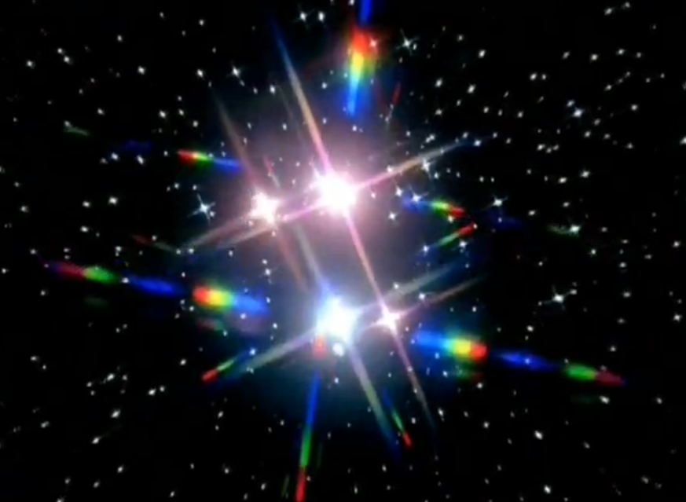
The Ur-Universe
-400,000,000,000?
(before the beginning of
all beginnings / before the Cataclysm / before the Universe began / before Time / 400,000,000,000 years before the Eye of Harmony?)
The Ur-Universe exists and expanded. The Ur-Universe became
the ancestor-universe of all the subesquent universes. Only two forces existed - Good
(light / positive) and Evil
(dark / negative). At this point there were no names for these forces. The Time Lords, including
the Doctor (up until The Satan Pit), incorrectly believed it was impossible for any life to exist at this point.
-50,000,000,000
(50 billion years before Modern Gallifrey / before Time, Light, Space, and Matter / before the Doctor's Universe)
The Cataclysm: The Ur-Universe is "open" and expands until heat death and beyond. Space-time became locally flat, with no matter or gravity. The Disciples of Light
feared that the legions of the Beast would bring night to the universe. So they fought a massive battle with all
Evil, in the form of the Beast. The Disciples might have been the blue-skinned Pwccm.
According to legend, they provided the Beast with poisoned food
in the form of the Bitter Pill, which it ate.
The Ur-Universe's
superstrings had a deep-foam structures. Within those structure random
interactions eventually create several acausal events where parity is
invalidated. The battle between the Disciples of Light and the Beast created
the first Big Bang. This creates massive amounts of matter or anti-matter. Time was born as was matter and space and life. The forces of Good and Evil shattered and largely negating each other, leaving only echoes. In the aftermath of the Cataclysm, these
acausal events budded numerous secondary universes in their own
bubbles, producing a sea of isolated multiverses billions of light
years apart. These multiverses in turn bud their own universes (probably as the acts of deliberate creation by sentient beings). The
Ur-Universe becomes like a series of Russian dolls. Inside each universe was another one. Lifeforms,
called
Intercreationals,
were composed of these universes and existed in this ur-space sea of budded
universes. These Swimmers were far more powerful than Chronovores
(and Guardians)
and could destroy universes by touching them.
-50,000,000,000?
(afterwards the Cataclysm)
The world of Krop Tor (Bitter Pill) was
the home of a civilization that lived in a vast underground city that
was 10 miles beneath the surface. The Disciples of Light had
the Beast imprisoned in the Pit beneath the underground city. Sometime between the Time of Legend (when the Time Lords
invented black holes) and the Humanian Era, the planet Krop Tor would be suspended by a gravity field over the black hole K-37 Gem 5. The
gravity funnel responsible for this suspension required levels of power
that inverted with a self-extrapolating reflex of 6 to the 6th power every six seconds. The
black hole it orbited was said by some to be alive and that it had tried to consume Krop Tor many times.
The Beast had a son named Abaddon who was eventually trapped beneath the Cardiff Rift.
The Omniverse
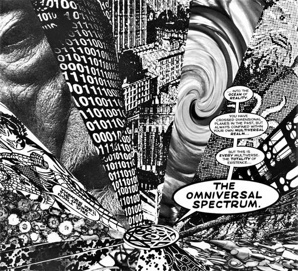
?? (billions of years before Event 1)
In the aftermath of the Cataclysm, the Ur-Universe begins budding numerous secondary universes, producing a sea of isolated multiverses. A random fluctuation of energy in the Ur-Universe created a Big Bang, which produced the Omniverse. The Time Lords will believe that there was no universe before this one. The focal point or heart of this Omniverse is the Glory, which spawns an infinite omniversal spectrum of other realities and decendent universes. The Time Lords will call everything beyond their Universe the Outer Planes. Two potential Controllers were selected from these descendent universes and would be brought into conflict with each other. The victor would become the new controller of the Glory, and through it, the Omniverse. When that Controller reached the end of their existence they would choose two more qualified replacements and bring them into conflict, continuing the cycle.Esterath and Kroton were two consecutive Controllers during the meta-time of the Doctor. Unlike the Ur-Universe, the Omniverse begins collapsing and expanding over billions of years.
?? Beings from other dimensions sometimes conform to very different physical laws then those in Normal Space. One such being is the Word Lord, Nobody No-One from a reality 45 billion dimensions away. He is composed of pure language communication, and sees himself as a bounty hunter and renegade cognolinguistic. He travels in a old and in-accurate chameleon meme known as the CORDIS (Conveyance Of Repeating Dialogue in Space-Time).
-- Two multi/universes bud off from the Omniuniverse. (again probably an act of deliberate creation by sentient beings).
The Multiverse
--
The Third Multi/Universe (which might mean it was the third to bud off from the Omniverse) comes into existance. This multiverse exists in a state of quantum superposition.
This Universe is
constantly degenerating and regenerating in the same way that the
Timeless Child would regenerate. The universe expands and contracts with each of these cycles. This
process involves an exchange (or reversal) of all matter and antimatter
as well as all energies and forces. The speed of this regeneration
is governed by the Balance between the forces of Law/Order and
Chaos/Creativity, Life and Death, Matter and Antimatter. This Balance
is tied to the intelligence and reasoning of sapient beings of the
multiverse. This universal regeneration is perpetual and proceeds so
slowly that most sapient species are completely unaware of it. But
those that can detect it call this parthenogenetic process the Great
ReCreation or the Conjunction of the Million Spheres.
After many cycles of Big Bangs
and collapses, this Third Universe will become the Prime Normal-Space Universe 5556 depicted in most Doctor Who stories. The
Anchoring of the Eye of Harmony and other actions taken by the Time
Lords during the Time of Legend retroactively impose rationality and
science onto the Third Universe, creating an actual Retro-History that exists above the Priorverse of pre-history and pre-time. It is possible that the multiverse's superpostion could be violently collapsed, turning the multiverse into a single
crystalized web of time.
-- The Fourth Multi/Universe to decend from the Omniuniverse didn't run parallel to the Third. Instead, its time time tracks crossed at an angle. The planet Quinnis could be found in the Fourth Universe. These secondary universes could be accessed using charged vacuum embodiments (CVEs). While naturally occurring CVE were one of the rarest phenomenon in the Prime Universe, hidden artificially created CVE portholes were more common.
-- The Omnniverse will continue to spawn an infinite number of multiverses.
Moloch was born. By the time of the Doctor, he became the most powerful of the Elder Gods. He was a god of chaos but allied himself with Wayland against Fenric.
Doctor Who?
"Always the same."
-The Doctor
-- (several universes before the Normal Space Universe)
One of the physical constants of the
Third Universe (aka the Prime Universe) appears to be the Timeless Doctor. The
Doctor existed in three forms: the Other,
the Renegade, and Guardian of Justice and Morality. In every cycle the
Third Universe went through he lived through many lives. The Doctor began as the Other, became the
Renegade, and eventually evolved into the Guardian of Justice and
Morality. The Timeless Doctor's cycle of life begins and ends with him is standing alone on a mountainside
in the dark with a cold wind blowing. He is an old man, and he raises his fist.
The Great Old One, Fenric,
believed that the Doctor was a Great Old One. The Master of the Land of Fiction described the Doctor as ageless and outside the bounds of space and time.
The
High Eternal Death thought that there might have been something unnatural about
the Doctor that would keep him from ever falling into her clutches.
Probability seemed to always ensure that the Doctor would survive not
matter what danger he faced. His unconscious probably had slight
effects on the biodata everyone around him. The Kingmaker claimed that the
Doctor was able to transcend death because ideas could not die. This
could imply that the Doctor was conceptual entity.
The Timeless Doctor appeared in several
very different Universes that were spawned from the Third Universe. The Doctor may be a living equation or elemental function of the Third Universe. It was possible that the Doctor is the natural balancing agent for the Daleks - a predator to keep them in check. It should be noted the Cybermen, the Brigadier, Liz Shaw, Benton,
and the Daleks all
appeared in other universes
and thus were also constants.
No matter how many times history was changed these constants always appeared in some form.
Unlike the Doctor the prime timeline was the only timeline to have a version of Iris Wildthyme.
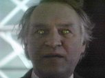
Hastur the Unspeakable
--
(The Beginning of all Beginnings)
The echoes
and memories of true Evil became
anti-life impulses inherent in the new Third Universe. Hastur the Unspeakable
(Fenric)
was formed out of these impulses. His thousand limbed body stretched across multiple dimensions. This primal force of nature
would became a Great Old One in Universe 1.
--
(The Time before Time)
The Seven Shadows
were created. They were later put into a flask and used to imprison
Fenric.
--
(before Raag, Nah, and Rok came into existances)
To'Koth was a
benevolant Old One, who mentored the Gods of Ragnarok and others when
they were young. To'Koth was old and sickly by the time of Event 1.
--
(three
or four universe cycles before the Normal Space Universe)
After an unknown number of cycles, the gestalt entity known as the Nestene Consciousness or Shub-Niggurath came into existence.
-- Rassilon believed that Raag, Nah, and Rok were responsible for the destruction/creation of several universes before the Prime Universe. These three became the Guardians of the universe right before the current one.
Universe 0 / Priorverse
"For there was Time before this; and there was Being before this; and there was Space before this.
And there were Things Damned in that place, and there were Things Remarkable"
-The Book of the Old Time
-- (the ancestor Universe for the Normal Space Universe)
The latest cycle of the Third Universe begins. The physical laws
of this ancestor universe were very different then the universe
that will decened from it. Magick, not science, was the dominant
operating system of the this Universes. Space was green instead of
black (which might have indicated a high levels of entropy). Stars looked like giant doughnuts and time worked differently.
-- (the ancestor Universe for the Normal Space Universe)
The
Shub-Niggurath (Nestene Consciousness), Raag, Nah, Rok, and perhaps other beings
(like Nyarlathotep)
survive the creation of the previous universe. Raag, Nah, and Rok became three of the Guardians of this new universe. The Guardian of Might in this universe was named Arthur and was the
Guardian of order and strength. The Guardian of Magic was named Morgwen
and was the Guardian of chaos and cunning. These Guardians make up the essence of this Universe.
?? (the priorverse for the Normal Space Universe / after living many lives in previous universes / after the dark universe comes into existance)
The Timeless Child (who would become known as the Doctor) entered the Prior-Universe of the Yssgaroth which existed before Event 1. The Great Old One, Hastur the Unspeakable, believed that the Doctor was a Great Old One.
The child was taken
in by the Yssgaroth and was known as the Red-Handed Jackal.
The Jackal became an apprentice to a shepherd Yssgaroth and helped him
raised foodimals in the dark universe of the Bloodrealms. It is likely that the Yssgaroth learned the secret of perpetual regeneration from the Jackel.
?? (possibly while still a child?)
The Red-Handed Jackel becomes a full shepherd.
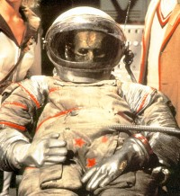
The remains of a Lord of Time from the previous Universe
--
(the Universe before the current one)
The Archons evolved from underwater aquatic species
that used echo location.
They
spoke using the language of Quantum Mnemonics. The Archons discovered the deeper mysteries of
time and space. Their
advancements surpassed the greatest achievments of Gallifrey's Time
Lords. The Archons rule this ancestor universe as lords of magick and
time.
-- The Shub-Niggurath of the universe before this one became the Director of the Archon's equivalent to the Interventionists of these Archons. She held sway over this universe.
--
(in the Universe before the current one / a long long time before the birth of the current universe)
Using the
power of astrology, the Ancient Lights controlled many of the species and
worlds in this Universe. The Mandragora Helix was one of the Ancient Lights. The
Entropy Sirens exist in the areas of pure chaos. Their sonic waves are
lethal to humans. Other creatures in this ancestor-universe
included the Shepherd and Shepherdess.
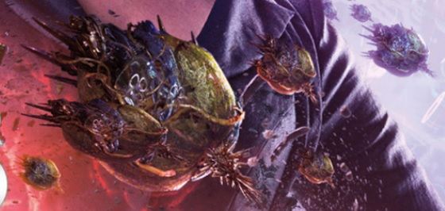
SporeShips
-- (takes place in a universe before and after Universe 1)
The Tale of Two Bad Guardians: The Guardian of Might in this universe was named Arthur and was the Guardian of order and strength. The Guardian of Magic was named Morgwen and was the Guardian of chaos and cunning. The two of them were part of the essence of this Universe who fought until it threatened to collapse their universe. The Champion of Neutrality, named Merlin, made a deal with them. He gave them their world to battle each other over in a conflict of swords, sorcery, knights, and monsters. The three of them each created a character to play that they named after themselves. At the end, Merlin would adjudicate the final winner, and then they begin trying to rebuild their universe. They other two Guardians agreed and the battle was fought. But when Arthur was near to winning Morgwen restarted the timeline. This happened over and over, causing instability multiple dimensions. In response to this treachery, Merlin compressed the reality of this battle world down into a crystal cavern of reality, and placed it in the void between worlds. Merlin trapped himself and the other two Guardians in a state of sleep inside this cavern. Unaware of this, the other two Guardians continued their battles in the dreams that Merlin shared with them. These dreams would leak into Normal Space influencing humanoids to create legends of Arthur. This crystal cavern became known as the Druse and the story became a Time Lords fair-tale recorded in the book Time Lord Legends for Time Tots. The story warns that travelers should avoid this place, because waking the Guardians would lead to them threatening the universe again.
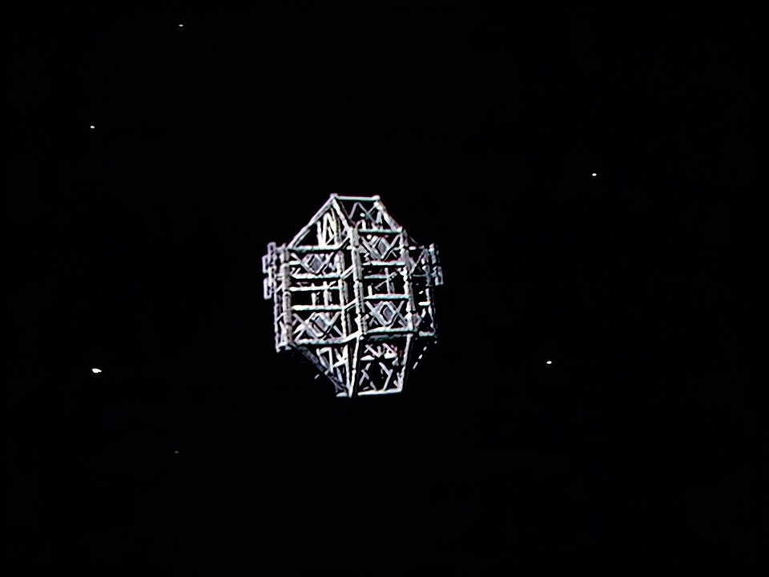
Terminus Time Station
At the end of a final War, three of the Guardians of this Universe (who become the Gods of Ragnarok) cause the event that will eventually end of the ancestor-universe (Universe 0) by creating instabilities in one of the engines of a massive Timestation. This Time Station has a main space time element (aka the Heart of a TARDIS) that is virtually identical to the one in TARDIS and probably belongs to the old lords of time of the previous Universe. In response to the instabilities, the Timestation's single large humanoid pilot ejects fuel from the unstable engine. The detonation of this unstable fuel will create the Sepulchasm which will lead to the birth of Universe 1.
Note: the idea that the Timestation comes from the previous Universe is emphasized in the script for Terminus.
-11,500,000,000? (after the Time Station creates the Sepulchasm)
The Archons observed that their universe dying. The council of the Archons were linked together in an amplified panatropic computer network. They will eventually become the Greater Old Ones and Guardians of Universe 1. These lords of the previous universe enter the Sepulchasm with a plan to try to cap Sepulchasm from the inside with a sentient singularity named Azathoth.
-10,000,000,000 (11:00 a.m. on February 15th,13,500,017,903 BC / seconds after the Big Bang)
Several of the lords of the ancestor universe will leave and enter the Normal-Space Universe by temporarily shunting themselves into a parallel universe (with a slightly longer lifespan) to avoid the Big Bang. These Transient Beings will became the Great Old Ones of the Normal-Space Universe.
Event 0: Sepulchasm
-11,500,000,000? (right after the unstable fuel is ejected)Event 0 - The fuel ejected from the Timestation is a condensed monoblock of space-time matter with an incalcuable amount of energy. This fuel detonates creating a fissure known as the Sepulchasm. The resulting Sepulchasm is a purgatory-like universe. This warm vacuum of darkness is a sentient void that will became known as the Dark when it reforms in the Prime Universe. This 'no time' would be known as Time Zero by the Time Lords of the next universe. Any attempt by someone in the current Universe to travel back in time to the ancestor universe will end with the traveler being trapped in a formless, timeless dimension when they pass Event 1 (the Big Bang). While most types of time travel capsules would be trapped, TARDISes sometimes could escape from it.
-11,500,000,000??
(before the fluctuations and recursions / before Gallifrey is created)
The lords of
the previous ancestor universe enter the Sepulchasm and form a Pantheon of Gods. They create a sentient
singularity smaller than an atom as a plug to cap this fissure. It feeds on the incalculable energy of the Terminus fuel block. Old Time legends state that this was known as the Great Old One
Azathoth (aka Eru). The lords who create Azathoth
are unable to return to their universe so they craft a world around the singularity - a world that exists in the shadows between magic and science - a world known as Gallifrey.
The Grey Man's People (probably the
future Guardians) observed the evolution of the First Humanoids in a
star system 30,000,000,000 light years from where Sol would eventually
be located. Because of the Grey Man's people interference, the humanoids develop a
sense of duality that divides them into different factions.
-11,499,990,000?
(15 billion years before the 20th century)
This
first humanoid civilization destroyed itself with bacteriological warfare. In response, the
Grey Man built the Cathedral Metahedron. Given when all this
happened, it appeared that the Cathedral survived into the next
universe.
The Archon who serves as the leader of the ancestor Universe's temporal council (and will eventually become the first Guardian of the new Universe), asks the Pantheon of Gods to create a new Universe for him. The Regulator entity (aka Bilis Manger) will later claim that the Creator had failed to read the Universe’s instruction manual when forming reality. It will later be rumored that the previous universe was destroyed because someone asked a computer to create a new universe, and forgot to specify that it not destroy their own universe.
Universe 1
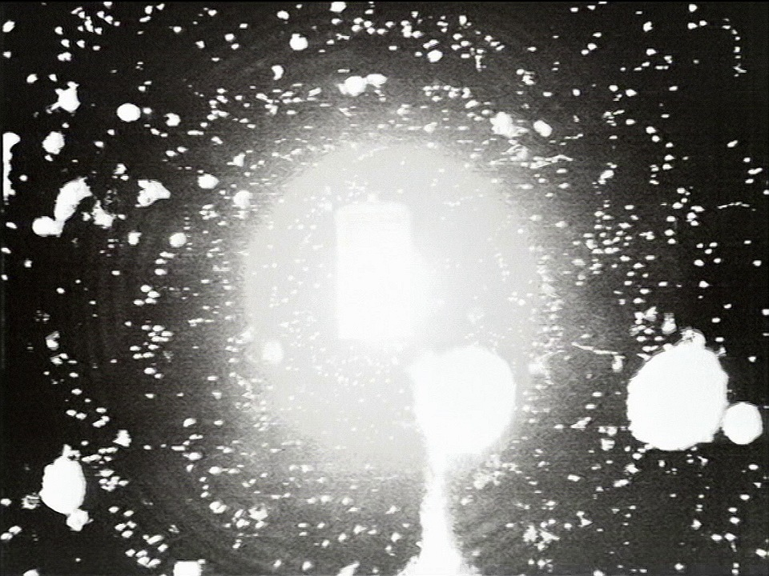
The Big Bang
- Time Lord textbook
-10,000,000,000
(13,500,017,903 BC 11:00 a.m. on February 15th / about 13 billion years before the 20th Century / pretty close to exactly 10,000,000,000 years before Omega's Qqaba mission / at least 3 or 4 cycles after the Shub-Niggurath appear existence / before the fluctuations and recursions / before Gallifrey is created)
Event 1 / the Big Bang: The sentient singularity Azathoth was created by the Ancestral Shadows of the previous univese to seal off the Sepulchasm from the rest of the ancestor universe. But this plug explodes when another of numerous timeships from the future of this new universe (Universe 1), trying to reach the Big Bang, 'overshoots', and collides with the Sepulchasm. This ship is named the Vipod Mor. This battlecruiser had
been refited into an exploration vessel by the former High Council member and renegade
Time Lord Vipod Mor. Lord Vipod Mor knew that the eventual detonation
of his ship would lead to the Big Bang.
The sentient void
is torn apart, and is spread across the new Prime Universe. After billions of years it
reforms into the Dark and becomes part of the world of Akoshemon in the new universe.
The Big Bang knocks the Timestation into the future and leaves it floating at the precise
center of the Universe
(so very near Gallifrey). Mutter's Stellian Spiral Galaxy will form around the Timestation and it
is later given the name Terminus by Terminus Incorporated.
The Sepulchasm
-- (shortly before the end of the
Ancestor Universe)
Once the
singularity that was created by the council of the Archons spawns the
Normal-Space Universe it begins growing within the Ancestor Univeres like a tumor, draining off the life of the ancestor
universe. Realizing that the end of this universe was inevitable, the rest of the lords of the previous universe leave their Ancestor Universe and enter the new universe, known as the Sepulchasm.
The Heart of the Universe (as it appears to a Human)
From outside of the Universe, the Creator begins crafting what will eventually become Universe 1 (as it is known by the Time Lords). He views this knitting needle universe is an ‘advanced lesson in Science.’ The term 'knitting needle universe' is probably a reference to History being woven from the thread anchored by the Eye of Harmony. The Regulator entity (aka Bilis Manger) will later claim that the Creator had failed to read the Universe’s instruction manual when forming reality. Part of the process of creating the Universe involves placing a Heart of the Universe at the center of this new Universe. The Heart will last only half the life of the new universe before it needs to be changed. As the the leader of the temporal council of Archons requested, the Creator and the rest of the Pantheon of Gods names the council leader as the Guardian of Time of this new Universe. The Pantheon considers the Guardian to be ‘a good man’ but also have little respect for him and find him amusing.
The leader of the temporal council of Archons leaves the Sepulchasm and enters the new universe. As the Guardian of Time, he is charged with ruling and administering it until the rest of the Council joins him. One of the Guardian's tasks is maintaining the Heart of the Universe. Initially he wears white robes because he hasn’t conceived of other colors yet.
-10,000,000,000 (11:00 a.m. on February 15th, 13,500,017,903 BC / less then a millisecond afterward Event 1)
Gallifreyan mythology states that, after the Big Bang, the sentient singularity couldn't understand itself and is a blight of nethermost confusion. It finds the Big Bang to be a painful light. Using the ancestor universe as a source of life, this Kinetic Dance (aka Eru, aka the Great Old One Azathoth) expands outwards from Gallifrey to form the Prime Normal-Space Universe of the Doctor (sometimes numbered Universe 5556). It gradually expanded, eventually becoming so large that it began fracturing.
-10,000,000,000 (11:00 a.m. on February 15th, 13,500,017,903 BC)
The segments of the Kinetic Dance gradually expand and fracturs in turn, over and over. While alive, the sentience is still unaware of itself. The sentience of the shards struggles to comprehend itself, and, in the process it manifests the rules that formed ten dimensions. As these ten dimensions begin to solidify from the chaos, another dimension was imposed outside of the Dance's ten. Its likely that this dimension is the Space-Time Vortex that was retro-actively created when Rassilon imposed rationality on the Universe. This might have been part of the Creator's 'science experiment.' The three spatial (dimensions 1, 2, and 3) and two temporal dimensions (4 and 5) form first, creating Minkowski Space.
-10,000,000,000 (11:00 a.m. on February 15th, 13,500,017,903 BC / less then a second after the Big Bang / after the first 5 dimensions form)
The last 6 dimensions of the Normal-Space Universe split off less then a second after the Big Bang and curl into a space one thousandth the size of a proton. This Calabai-Yau Space will becomes the Six-Fold Realm of the Guardians. The core of the sentient singularity that created the Universe survives this fracturing. Still incapable of understanding itself, it blasphemes and bubbles at the center of infinity that is the heart of space and time. But, due to its fracturing segments, it is still conterminous with all of space and coexistent with all of Time. Some Time Lords believe that the core of this singularity became Gallifrey's Eye of Time/Harmony. Many future lifeforms will have an instinctive feeling of loss from being separated from the original sentient singularity that formed the Universe.
-10,000,000,000 (11:00 a.m. on February 15th, 13,500,017,903 BC)
There are now four forces in this universe: Gravity, Electromagnetism, Strong Nuclear, and Weak Nuclear.
All Time: The Eleven Dimensional Universe
Minkowski Space is made of three spatial (dimensions 1, 2, and 3) and two temporal dimensions (4
and 5). The 4th Dimension of Time alows the creation of
matter in much the same way that matter would creates gravity. The Weak
Nuclear Force allows the existence of the 5th Dimension. This is the relative dimension of Inner Space-Time where the Space-Time Vortex is found (originally known as the Astral Plane).
Without time travel to interfere, time moves as a harmonious and elegant parabola. The area between the fourth and fifth dimensions is known as the Second Ether (aka Chaos Space, the Shift, the Chaos Realm). The Second Ether is the source of all the creative beauty and entropic horror in the multiverse. According to legend the Doctor was the one who gave the Second Ether its name. The Doctor always makes a point of denying this. The Arc of Infinity is an area that exists between some dimensions.
The
last 6 dimensions are
curled into a space one thousandth the size of a proton. This Calabai-Yau Space will
becomes the Six-Fold Realm of the Guardians. One of these dimensions is
the relative dimension of Imagination. Imagination can accessed from
Normal Space if one can reach the eye of the storm of the Big Bang,
known as the Point of Stillness. Another is probably the relative dimension of Possibility. The quantum Possibility Tree begins to grow. The song of Time moving through Space plays from this tree. The realities of these other dimensions can manifest
themselves in the Normal-Space universe as works of fiction and ionic energy can convert fiction into reality or reality into fiction.
| Number | Dimension | Color | Guardian | Key to Time |
|---|---|---|---|---|
| 1st Dimension | Length | N/A | N/A | N/A |
| 2nd Dimension | Width | N/A | N/A | N/A |
| 3rd Dimension | Height | N/A | N/A | N/A |
| 4th Dimension | Time/Thought | N/A | N/A | N/A |
| 5th Dimension | Space-T. Vortex | N/A | N/A | N/A |
| 6th Dimension | ?? | White | Structure/Order/Light | 1st Segment |
| 7th Dimension | ?? | Black | Chaos/Darkness/Entropy | 2nd Segment |
| 8th Dimension | ?? | Red | Justice/Morality/Doctor | 3rd Segment |
| 9th Dimension | ?? | Azure | Equilibrium | 4th Segment |
| 10th Dimension | Imagination | Crystal | Toymaker/Dreams | 5th Segment |
| 11th Dimension | Possibility | Gold | Sentience/Life | 6th Segment |
-10,000,000,000 (11:00 a.m. on February 15th, 13,500,017,903 BC)
Using the ancestor universe as its source of life, the rest of the Normal-Space Universe expands outwards from Gallifrey. There is a massive inflation that lasts less than a millionth of a second.
-10,000,000,000 (when the Universe is young and still learning its rules / before the other Guardians exist in the new Universe / before the Guardian splits)
The Ribos Operation: There is a disc of rock at the edge of the Universe. From here the Guardian is able to communicate with the Pantheon of Gods, including the Creator of the Universe. He requests an audiance because he worries that the beings of this new Universe will make mistakes and unbalance it. He asks for a way to fix this problem if it should occur. In response to this the Key to Time is created by the Grace. The Key will allow the Guardian to access to the barrier and reset Cosmic Balance by replacing the Heart of the Universe. But Key is immediately split to ensure that the Guardian can’t use its power too easily. A branch from the Universe’s first tree is turned into the first Tracer. Carved on it are symbols that event he Pantheon of Gods don’t understand. One of the rules the Guardian must abide by is that he can’t personally quest for the segments to the Key to Time, it must be done by an agent of theirs. By this point, the Patheon knows that the Guardian is going to split into the White and Dark Guardians.
The Key to Time
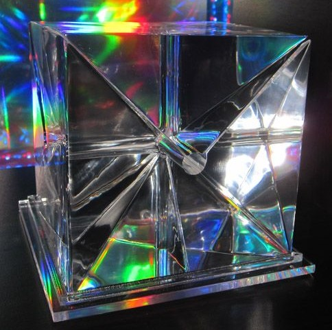
The Key to Time
The Grace designed the Key to Time to allow a Guardian of Time to unlock the barrier around
the Heart of the Universe so that it can be changed and reset the Cosmic Balance. This makes it the most important object in Creation. In theory Guardians of Chaos and
Structure are perfectly balanced, but if one started to gain an
advantage over the other then the Universe would begin to come
apart. The Key to Time
was designed by the Grace to re-balance things when this happens. The Guardians can use the complete Key to maintain universal balance between order and chaos. It serves as a moral fail-safe to restset the balance of good and evil.
The
Key is created out of a star that would have otherwise developed a
planet whose inhabitants would have created an empire of harmony. The Key is created
out of a nearly indestructible artificially matricized structure consisting of a substance with a variable atomic weight
that borders on magical.
This abstract material is forged in the Chaos Pool found on the planet Chaos in the last 6 minutes of the Universe's
life-span. The material embodies the fundamental nature of the universe
and exists simultaneously at every point in time. This property prevents is from being analyzed. The substance
is sometimes used by the Guardians
to fashion communicators for lower lifeforms
as well as the Crystal of Kronos and Enlightenment. Enlightenment could be used to alter time streams and the events within them. The Key is a perfect cube (6x6x6) made of six parts and holds the elemental force of the Universe. Each Guardian is represented by one segment and together, the Key represents the powers of the Six-Fold God (aka the six Guardians). If the Key was damaged, that damaged would limit the powers of the Guardians. Only when the Key is fully assembled can the Grace safely manifest in Normal-Space, within the Key.
These six segments
maintain the equilibrium of Time itself. Any being that has the
complete Key has absolute power over every particle in the Universe.
It can stop and start the Universe, re-write matter, change the states of quanta,
and alter the balance of good and evil throughout the Universe.
The Key gives the user access to every event in history, and the ability to alter those events. The Key might have been some form of Time Manipulator. Only the Prime Eye of Harmony on Gallifrey is its equal when it comes to manipulating the power of the Vortex. It can easily open gateways between universes. While the sixth segment is the most important of the set, any
single segment of the Key to Time has the power of transmutation,
transformation, and navigating through time and hyperspace. If one has 5 of the 6 segments a temporary segment can be
made out of specific materials. Chronodyne is 74% compatible and
can be used (with the other 5 segments) to put the whole Universe into
a 3 second time-loop for 3.25 minutes before the Chronodyne burns out.
To
prevent any one being from having this much power the six segments of
the Key are disguised and scattered to specific points in space and
time. the segments chance space-time location and coordinates from time to time. This happens often enough that every object or person in the Universe has been disguised as a segment at one point or another. A
branch from the Universe’s first tree is turned into the first Tracer.
Carved on it are symbols that event he Pantheon of Gods don’t
understand. The
Key to Time is eventually destroyed by being evaporated in the Chaos
Pool 300 years before the start of the Last Great Time War in heaven. This might have been what allowed the Time War to occur.
-10,000,000,000 (11:00 a.m. on February 15th, 13,500,017,903 BC / the first picosecond after the Big Bang)
The Creator and his Guardians will monitor Universe 1 for pre-destination paradoxes and prevents them from collapsing the time stream. But some minor paradoxes still form.
One is Black and one is White
One’s for when things go too wrong
And one’s for when they go too right.”
The Guardian of Time that was appointed to guard the Heart of the Universe is fractured into the Black and White Guardians when it arrived in this Universe. It is possible that the same fracturing happened to create the twin Guardians of Gold and Equilibrium. The fundamental conflict between the Black and White Guardians will prevent either one from performing their assigned duty of changing the Heart of the Universe.
-10,000,000,000 (February 15th, 13,500,017,903 BC / at the time of the Big Bang)
The Eye of Time, that plugs the Sepulchasm, develops small leaks that take the form of omniversal voids. The Time Lords of Gallifrey (that are trapped in a single moment after the Last Great Time War) find the remains of one of the cracks in the skin of reality. They use it to broadcast a message throughout all of time and space. Because of this, it becomes the oldest question in the Universe. The question is “Doctor Who?” The Time Lords are looking for the Doctor’s original name, and they believe he is the only one in the post Time War era who could can correctly answer the question.
-10,000,000,000 (the start of the Universe)
The Council of Eight has Sabbath travel back in time and seed an intelligence into the formation of the Universe. This intelligence becomes part of the fabric of the Universe, and gives the Council the ability to map out all of history after the fall of Gallifrey.
-10,000,000,000 (11:00 a.m. on February 15th, 13,500,017,903 BC / nanoseconds after the Big Bang)
The Vondrax are brought into being. They are probably the first new species to exist in the Universe. Tachyons were plentiful at this point and the Vondrax fed upon them. When their supply begins to run out they start traveling through space and time to collect more tachyons in their orbs.
-10,000,000,000
(earlier then the Time Lord historical records reach / the childhood-infancy of the Universe / a split second after the Big Bang)
The two more of the Pantheon of Gods (that were the council of temporal lords of the previous Universe) leave the Spepulchasm and enter the new Normal-Space Universe. They become
elemental forces and an integral part of this Universe. Together with the first two Guardians, the Greater
Old Ones are the Six-Fold God
known as the Grace. The Creator of this Universe remains too far
outside of space and time to access the Heart of the Universe.
All Time: The Six-Fold God
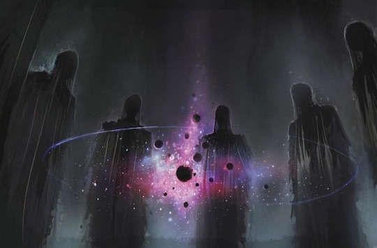
The Grace are probably huge and pan-dimensional elemental beings with amazing, inconceivable, powers. The Six-Fold God is made up the Council of Guardians. There are six
of these
hyper-dimensional
Guardians of Time:
The White Guardian, the Black Guardian, the Red Guardian, the Crystal Guardian, the Azure Guardian and the Gold Guardian. This is why the Grace us always referred to in the plural. The Grace lives outside the Universe's first 5 dimensions in
the
howling void of the Six-Fold Realm (aka Calabai-Yau Space). This realm
is dispersed throughout eternity but can be reached via the Chaos Pool
found at the end of the Universe. However the Guardians find the
manifesting in the first 5 dimensions to be very cramped and
uncomfortable.
The Guardians must perform all large actions in unison, otherwise cosmic balance will be upset. In general terms, the Grace spends all of their time keeping the Universe in order. They serve as conduits through which the fundamental essence of the Universe can act and
are
essential
for cosmic balance. If the Universe was to end the Guardians would die as well.
The Guardians nurtured the early civilizations of the universe,
and one of their jobs is to ensure that the Time Lords do not abuse their abilities to manipulate the Weak Nuclear Force. The Guardians know there will come a time when they are no longer needed and that their existence will end. Eventually they will give their lives, powers, and energy to two of their Tracers named Abby and Zara.
Despite having a collective consciousness, the Guardians are impish creatures,
and, as
spirits of mischief, the majority of the Grace spends much of their time squabbling with the individual Guardians within their council. Each member of the Council of
Guardians answers only to the Grace, and the
Grace is even capable of banishing the Guardians.
Each Guardian is granted a dimension to serve as their domain. Due to rules created in the Universe's childhood,
they can only survive outside the sliver of their dimension for about four weeks. As the Guardians get further
from Event 1 their life-span is pushed back, effectively making it endless.
Among the Time Lords, only those who have served (or are serving) as President know of the true nature of the Guardians.
When
the Grace does reach into reality they fight the can only be perceived by the
lesser species as a subtle feeling of misgiving. When interacting with the first 3 dimensions, each
Guardian's power waxes and wanes depending on how well their specific
traits are dominating the life-forms of the cosmos. In most cases, the Guardians can only directly contact lesser species when the primate's brain has been knocked into an altered state. But it is impossible for any species to really grasp or understand anything about how the Grace thinks and why they
do the things they do.
The Guardians of Time
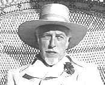
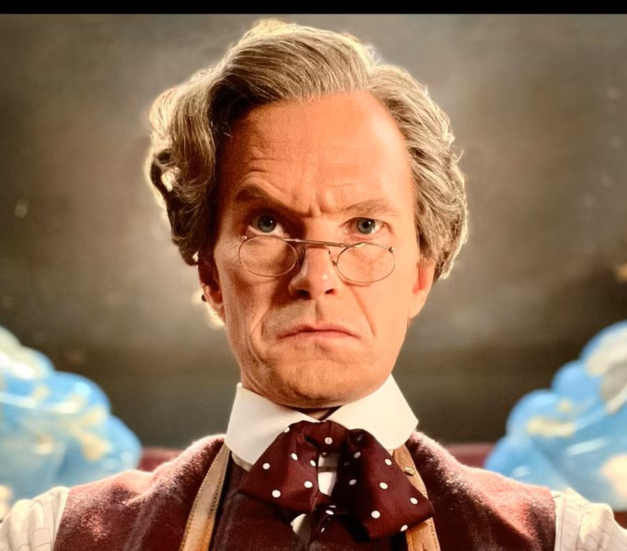
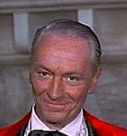
The Guardians of Light, Chaos, Dreams and Justice?
- The White Guardian of Light and Structure: The Archon who serves as the leader of the ancestor Universe's temporal council was appointed to guard the Heart of the Universe. This Guardian of Time was is split into the Black and White Guardians when it arrived in this Universe. The White Guardian of Light in Time exists near the Big Bang, an is weakest at the end of the Universe. The force of Law makes no allowances for redemption or rehabilitation. The Guardian of Structure appears less likely to lie then the Guardian of Chaos. General Frank/Freddie Force and his Antimatter men work for the Guardian of Order. The name ‘Force’ refers to the force of law they are genetically programmed to enforce. They see the uncertainty of the future, and empathy as being an intrinsic threat to them. They view the Doctor as an agent for the Guardian of Chaos. They exist in the Anti-matter Universe.
- The Black Guardian of Chaos and Entropy: The Archon who serves as the leader of the ancestor Universe's temporal council was appointed to guard the Heart of the
Universe. This Guardian of Time was is split into the Black and White Guardians when it arrived in
this Universe. The Black Guardian is the Guardian of Dark in Time was given responsiblity for 50% of the reality of the Universe. The force of Chaos is also the force of Creativity, and the Black Guardian often tries to create wars to empower himself. At
the end of time, when entropy has engulfed the cosmos, is when he is
most powerful. The Black Guardian resides at this moment of heat death. If the Black Guardian were ever to defeat the White, he would become the
undisputed ruler of Reality. If the Black Guardian's supremacy control would remove the meaning of time itself, and the Universe would begin to come apart.
- The Black and White Guardians are each given responsible for 50% of the reality of the Universe, and its first 5 dimensions. In theory, they are perfectly balanced. The conflict between the Black and White Guardians creates the Universe as perceived by the lesser species. According to Gallifreyan science, the only thing that can stand against entropy and random decay is Life. This balance between ridged order and total chaos is needed to ensure a dynamic living cosmos. This conflict also prevents either one from performing their assigned duty of changing the Heart of the Universe. If either Guardian gained a significant advantage over the other, it would cause the Universe such suffering that it would begin to come apart.
- The Red Guardian of Justice and Morality: The renegade member of the Archon council becomes the Blood Thief (aka the Red Handed Jackel). They will eventually end up living on Gallifrey as the Other/Timeless. At the end of their corporeal life in Normal Space they will become the Red Guardian of Justice. The Red Guardian is the Guardian of Morality in Time. Tharil mythology has tales of the Blood Thief, a Red-Handed Jackel who would balance the war between the Night Hunter (Black Guardian) and Light Hunter (White Guardian).
- The Great Old One, Hastur the Unspeakable, believed that the Doctor was a Great Old One. The Doctor's cycle of life begins and ends with him is standing alone on a mountainside in the dark with a cold wind blowing. He is an old man, and he raises his fist.
- The Crystal Guardian of Dreams, known as the Celestial Toymaker:
The Toymaker's sliver of reality is located in a hollow beneath the Under Universe and is known as the Celestial Toyroom. The Toymaker carries part of the previous universe with him, which keeps him from being subject to this Universe's
laws. The Celestial Toymaker is the Guardian of Dreams
so the dimension of Imagination might be where the Toymaker's Toyroom and the Land of Fiction was located. Almost everyone in the Galaxy dreams, and dreaming allows one's mind to travel through time and space. The
mental activity produced during REM sleep is very similar to the a
bivarity anomaly quartz created naturally by friction of the various
universes grinding together. The Toymaker both shapes, enhances, and
feeds on the dreams of other species. Ionic energy can convert fiction into reality and vice versa.
-
The Azure Guardian of Equilibrium: She is probably known as Hecuba the Queen of Time. She is the twin of the Gold Guardian and the
sister of the Crystal Guardian. Like the Toymaker, she delights in
challenging higher evolutionaries and lesser species to a variety
of chronological puzzles. She is fascinated by time and time
keeping. Its possible
that, (like the Black and White Guardians) she was once one Great Old
One who split in two when she arrived in the Normal Space Universe.
- The Gold Guardian of Life: She is the Azure Guardian's twin sister and also the sister of the Crystal Guardian. Its possible that, (like the Black and White Guardians) she was once one
Great Old One who split in two when she arrived in the Normal Space
Universe.
The conflict between the Guardian of Chaos and the Guardian of Order creates the Universe as perceived by the lesser species. The Normal Space Universe (and the Anti-matter Universe) is finely balanced between chaos and structure. It maintains stability and creativity by balancing Law/Order/Reason and Chaos/Creativity/Romance. This Cosmic Balance between ridged order and total chaos is needed to ensure a dynamic living cosmos. Without these two opposing forces the Universe would collapse into chaotic or sterile nothingness.
The Roogalator sits in center of multiversal existence and regulates the Balance using enormously complex mathematics. Like the Key to Time the Roogulator can change its shape to hide from those who would misuse its power. Like the Key to Time it is essential to cosmic balance. Unlike the Key, the Roogulator needs to be in continual operation inside the Hub to regulate the rate of multiversal regeneration. Whereas the Key only needs to function at times of imbalance.
According to Gallifreyan science, the only thing that can stand against entropy and random decay is Life, and the Cosmic Balance is tied to the intelligence and reasoning of sapient beings of the Universe. Like its ancestor universe, this Universe is constantly degenerating and regenerating in the same way that the Timeless Child would regenerate. This defiance of the future laws of thermodynamics allows the Universe to be constantly self-regenerating and effectively immortal. The Time Lords helped maintain this balance, as have other organizations.
Over the eons this balance has waxed and waned in both directions, but there is a constant exchange or reversal of all matter and antimatter as well energies and forces. The Universe will continue the process of expanding over billions of years, before evenutally contracting. This universal regeneration is perpetual and proceeds so slowly that most sapient species are completely unaware of it. The speed of this regeneration is governed by the Balance between the forces of Law/Order and Chaos/Creativity, Life and Death, Matter and Antimatter. The species that can detect the cycle call this parthenogenetic process the Great ReCreation or the Conjunction of the Million Spheres.
If the Cosmic Balance was ever badly disrupted then antimatter will begin corrupting matter and vice versa, creating millions of dark tides and time storms that are hundreds of parsecs across. This corruption causes the destruction of time which leads to the collapse of space. Both the matter and antimatter universes will flood into each other. This anti-matter would manifest as a Flux. The Flux will erode Space, causing Time to break down. It compromises and degenerates the base-level structure of every particle it encounters violating the Laws of Time and Space. The Flux expands outwards in a massive ring and begins to devastate the Universe, erasing entire galaxies, leaving only a void behind it. Once started, this whole process will only take a few hundred years. Eventually the entire Universe would collapse into a form of lifeless nothingness known as inchoate-matter. The Flux also appears to have many similarities to false vacuum decay, a real-world scientific theory describing an event which would erase the laws of nature completely.
All Time: The Anti-Universe /Underverse/Under-History/Anti-Matter Universe/Spiral Yssgaroth
-10,000,000,000
(at the same time as the birth of the new Normal-Space Universe)
The 'space beneath space' is a "dark universe" made up of the extra-continual alter-matter state of the Astral Vortex’s Under-History. The
Ante-Universe came into existence at the same time as the Normal Space
one. This will become known as the Ante-Matter Universe or as the Spiral Yssgaroth by some Normal Space temporal powers. The Anti-Universe is the total antithesis of the Normal Space Universe. Time and space were merged into what would, to a Time Lord, seem to be a chaotic atemporality. Rather than matter, the ante-matter found in the Anti-Universe was composed of an alter-time state that is a type of nothingness itself. This could be related to the anti-temporal matter, which is tied to the Timeless Child. Anti-temporal matter experience of reality
moves backwards in time. This dark universe doesn’t have temperature as a physical law and a visiting human will feel neither hot nor cold. The ante-matter of the Anti-Universe is infectious and mutagenic.
-11,500,000,000? The Underverse exists beneath the Normal Space Universe. Omega will be trapped in the Underverse and trapped in the Anti-Matter Universe. Its almost certainly the Under-History space below space where the Spiral Yssgaroth exist. Wherever the Underverse collides with Normal Space, the friction between them excites the atoms of the universes. The Bone Beasts function as antibodies for this excitation. They find it and consume them to cleanse the realities.
-11,500,000,000? (the beginning of time)The Anti-Matter Universe exists. It is is very similar in many respects to the Normal Space Universe. Like the Normal-Space Universe, the Anti-matter Universe is finely balanced between chaos and structure. It maintains stability and creativity by balancing Law/Order/Reason and Chaos/Creativity/Romance. There is a constant exchange or reversal of all matter and antimatter as well energies and forces.
The Antimatter Universe can only be reached from Normal Space via the singularity at the heart of a black star or by crossing certain barriers at the edge of the Universe. The Universe has 9 such corners. The Great Desolation is the area of space at the edge of the Universe, and is described as where mythological beings go to die. Almost no one has ever returned from the Great Desolation.
The Transient Beings (the lords of the previous universe) enter this new Universe. The world of Mordeela is rumored to contain a gateway to the previous universe and to hold the last energy from that universe.
As time advances from the destruction of their original universe, the laws of relativity increase the lifespan of these Transient Beings (aka Great Old Ones) - effectively making them immortal. They are also very resistant to almost any phenomenon in this new Universe. Using the language of Quantum Mnemonics, the Great Old Ones discover they have amazing powers in this universe. They can use it to re-write reality and even bring about the destruction of this universe. Most, if not all, lose their memories from the previous universe. The Great Old Ones carefully examine this new Universe.
Old Time: The Great Old Ones
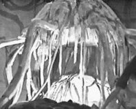
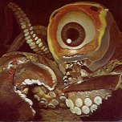
Yog-Sothoth, Lloigor, and Shub-Niggurath
The other Transient Beings (old lords of the previous universe) become known as the Great Old Ones (aka Sub-Guardians) of Universe 1. Most of them focus on the conquest, and many rivalries are formed between them.
- The Ancient Lights: Using the power of astrology, the Ancient Lights controlled many of the species and worlds in the previous Universe. The Great Old One known as the Mandragora Helix was one of the Ancient Lights.
- The Archons: These Great Old Ones evolved from underwater aquatic species that used echo location. But they became multidimensional beings who spoke using the language of Quantum Mnemonics. The Archons discovered the deeper mysteries of time and space. They were the lords of time of the ancestor universe and are more advanced then the Time Lords of Gallifrey ever become. The Archons will become the lords of Time in this new universe.
- Creator's Classmate: One of the of the Universe's Creator’s classmates is probably in this group. They plot to take possession of this new universe. It is possible that they are one of the other Sub-Guardians listed here.
- Cthulhu: Eventually settles on the Earth during the Silurian civilization. Fearing predators (probably the Fendahl), it joined the Silurians in hibernation but cast its mind into the Vortex. Reuniting its body and mind was made almost impossible due to the expansion of the Universe.
- Dagon (aka K'baa, the Many-Angled-Serpent): Eventually settles on the Earth during the Silurian civilization. Fearing predators (probably the Fendahl) it joined the Silurians in hibernation but cast its mind into the Vortex. Reuniting its body and mind was made almost impossible due to the expansion of the Universe.
- The Dark: The sentient void of the Sepulchasm was torn apart by the Big Bang and spread across the new Universe. After billions of years it reforms into the Dark and becomes part of the world of Akoshemon where it was eventually destroyed by the Doctor.
- Derleth: An Elder God obsessed with being worshiped. It uses its power to fill its followers with jealousy and obedience.
- The Epoch: These Great Old Ones focus all their energies to developing the Scheme to re-create the Universe without any threats to the Epoch.
- The Erisi (aka the Entropy Sirens): The Entropy Sirens delight in the areas of pure chaos. They feed on entropy and their sonic waves are lethal to humans. Around the time starts start to form, the flee Normal-Space to places dominated by entropy.
- Arthur, Morgwen, and Merlin (aka Arma, Gedd, Onn): They served as guardians in the previous universe but the conflict between was so great that Merlin trapped all three of them in the Druse in eternal sleep. The Druse survived the Big Bang, but the dreams that leaked out of it inspired the Authurian adventures on numerous worlds. One of these last three (almost certainly Merlin) was the Renegade from the previous universe.
- Ginny Greenteeth
- Magog and Gog: Mogog was the powerful of the Malevilus. For a time he was worshiped as a god on an alternate Earth. Gog and Magog probably become the Ogri of Ogros in the Tau Ceti system.
- The Great Intelligence of the Yog-Sothoth (aka Sunyata): A hive minded temporal lord, they served as a military strategist in the previous Universe. The spent much of their time there running gambits on computers. They had a rivalry with the Sub-Niuggurath. In this new universe, they spent billennia invading millions of inhabited worlds. The Intelligence was finally forced to abandon their physical body while fleeing the Fendahl. The formless mind had a phatom energy signature of more then 18,000,000,000 nuclear bombs. They ended up living in the Astral Plane known as the Vortex. This had the effect of protected the Universe from other Great Old Ones in other Universes entering Normal-Space. They Intelligence devoted much of the rest of its life to trying to permanently obtain physical form. Eventually, having grow tired of this existence, it threw itself into the Doctor's biodata in order to end its life.
- The Greater Animus (aka Pwodarauk, the Voice, the Intelligence): One of the Lloigor, it served as the Senior Watcher in the previous Universe. The Greater Animus was killed in the Last Great Time War.
- Hastur the Unspeakable (aka Fenric, Aboo-Fenran): In a time before even the ancestor universe, the echoes and memories of true Evil became anti-life impulses inherent in the new Third Universe. Hastur the Unspeakable (Fenric) was formed out of these impulses. This primal force of nature became a disembodied Great Old One in this new universe. He created the Fendahl which was capable of killing other Great Old Ones. Hastur was feared by many of the other Great Old Ones. He dueled the Toymaker and Weyland in deadly games. Along with the Gods of Ragnarok, Hastur ruled the universe during the Dark Time. But Hastur was eventually imprisoned using the Seven Shadows. Time Lord legends said he will be freed in the final apocalypse.
- Kai'lizakia: Killed by the Doctor.
- The Karnas'koi (aka the Lurkers)
- The Nestene Consciousness: Conceived in the ancestor universe and born in this one on the world of Polymos to the Great Old One Shub-Niggurath. She had a hive mind. Polymer chains of high molecular weight, like those found in thermosetting and thermoplastic resonated along the Nestenes psychic wavelength. The Nestenes would lose a war with Time Lords during the Time of Legend, and her empire would be destroyed in the Last Great Time War.
- Melefescent
- Mi'en Kalarash (aka Blue Fire): A Great Old One made up of tiny slivers of incremental time that form a time magnet. It lives in the wasteland between realities. The Blue Fire stimulates a sleeping victim's limbic system and feeds on the artron energy generated by the resulting fear and nightmares. The Blue Fire did horrible things during the Old Times (including both the Time of Night and the Time of Chaos).
- Moloch: Having survived through many universal cycles, the Elder God is the oldest of any of the Great Old Ones (with the possible exception of the Beast) to survive the Big Bang. Like the Black Guardian, Moloch is a god of of Chaos. He allied himself with Wayland against Fenric. By the time of the Doctor, he will have become the most powerful of the Elder Gods.
- Nyarlathotep: Considered by many of the transcendental beings as the greatest and darkest of the Sub-Guardians.
- The Gods of Ragnarok (aka Raag, Nah, and Rok): Three of the Guardians from the previous Universe who were responsible for destroying that previous Universe. Their name translates as the end of the gods, and Rassilon believed that Raag, Nah, and Rok were responsible for the destruction/creation of several universes before the most recent universe that preceeded Universe 1. They were mentored To'koth. They have no imaginations of their own and crave constant entertainment. The Gods of Ragnarok, along with Hastur, conquered and ruled the universe during an early Dark Time. In the post Anchoring cosmos, the Gods of Ragnarok have relatively little power. They can appear as other beings in Normal Space – but this is difficult for them. The three of them will create the Land of Fiction to entertain themselves, but, because they are only intersted in endings and not beginnings, they abandon it. Instead they exist in their own time dimension called the Dark Circus. The Dark Circus is a bubble of their own physical laws tied to the world of Segonax in Normal Space by several memorial stones.
- The Shepherd and Shepherdess: When they arrived in the Universe 1 they begin to slowly die. They had the power to destroy universes. The Shepherdess was imprisoned on New Peerlessness, the Shepherd was killed by a human using the Shepherd's own technology.
- Shub-Niggurath: She served as director of the temporal interventionists in the previous universe. But she actually pre-dated even that ancestor universe, originating from an even earlier universe. She was pregnant when she left the ancestor universe and gave birth in the Normal-Space Universe on the world of Polymos. Together with her daughter, the Nestene Consciousness, they conqured the world. Shub-Niggurath died of birth trauma sometime after that.
- The Solitract: One of the survivors from the previous universe, the Solitract was a consciousness of pure energy that was inherently antithetical to the new Universe. Because of its presence, the new universe couldn't settle down to manifest light, math, laws and matter. It was exiled from the Universe by an alliance of other forces.
- To'Koth: A benevolant Old One, who was older then he Gods of Ragnarok and mentored them when they were young. He was old and sickly by the time of Event 1. To'koth eventually died arranging a peace between the Great Old Ones and the Doctor.
- Tor-Gasukk
- Weyland (aka Volund): This elder god survived the creation of this new Universe just as they had survived the previous one. He allied with Moloch and other Great Old Ones against his enemy of Fenric. He also created a sheild that would grant a Great Old One near unlimited power in this universe.
- Yssgaroth: Many Time Lords theorize that Vampire Yssgaroth weren't a species, but a side effect of two incompatible continual strata trying to coexist.
-10,000,000,000 (February 15th, 13,500,017,903 BC / during Event 1)
The Ancient Covenants that govern the Great Old Ones, and their creations are forged. The rules prevent them from interfering with lesser species directly. One of the rules the Guardians must abide by is that they can’t personally quest for the segments to the Key to Time, it must be done by an agent of theirs. The Grace could enter Normal-Space if they wished, but it is likely that would cause reality itself to unspool. The rituals that constrain the Chronovores might have been part of these covenants.
-10,000,000,000 (In the beginning / pre-time / pre-everything / when the Great Old Ones arrive in Normal Space)
One of the survivors from the previous universe is the Solitract. But the Universe can't settle down to manifest light, math, laws and matter because of the presence of the Solitract. The Solitract was a consciousness of pure energy that was inherently antithetical to the new Universe. The forces of the Universe banded together to exile the Soletract to a separate 'unreachable' plane of existence. The Solitract Plane became an extension of the Solitract’s consciousness. This exile allows the Universe to begin making sense and function. Solitract's plane would be destabilized and corrupted if too many sapient beings from Normal Space were to visit it. Likewise, its presence in Normal-Space would infect space-time creating black holes of anti-reality and turning lifeforms into avatars of entropy. This would eventually tear the Universe apart. The story of the Solitract becomes part of the Time Lords’ creation myths and fairytales. A cult will eventually rise up called the Forgotten Universe that worships the Solitract and seeks to heal the fracture between the Universe and their god by helping the Solitract influence Normal Space until the two are compatible. It is possible that this Soletract Plane is the dark universe in the Vortex's Under-History. If so, that would make the Soletract the unwitting source of the Yssgaroth and their vampire children.
-10,000,000,000 (11:00 a.m. on February 15th, 13,500,017,903 BC / when the Universe is born in blast of light / 1 second to about 3 minutes after the Big Bang)
Lux Imperator claims to be the living embodiment the first electromagnetic force of light of the Universe. He becomes the God of Light, and one of the Gods of Chaos. The Great Old Ones known as the Archons watch the Universe's rebirth in a blast of heavenly quantum music and electromagnetic light.
-10,000,000,000 (11:03 a.m. on February 15th, 13,500,017,903 BC / three minutes after the Big Bang)
The quantum sound of the Universe’s birth is a heavenly music. But nucleosynthesis silences this quantum sound. The 4th Dimension of Time allows the universe to cool to the point where nuclear fusion begins creating the first hydrogen and helium nuclei. The creation of matter in turn creates gravity.
-10,000,000,000 (~11:03 a.m. on February 15th, 13,500,017,903 BC / during the roar of the birth of the Normal Space Universe / at the dawn of time)
The surviving Entropy Sirens from before the Big Bang flee the order an rationality of this new Universe. They hide in areas of entropy.
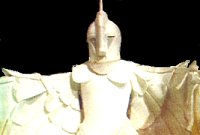
-10,000,000,000
The Chronovores (aka Kronovores)
were created by the Council of Guardians on the artificial planet Darkheart.
In order to sustain themselves while evolving into transcendental beings, the Chronovores used a nearby neutron star
to create the Darkheart Feeding system. At the time of their birth, the Chronovores fail to meet the Council's standards. They are considered to be vampires
(because of their feeding habits) and are segregated from the Eternals to become the Dark Caste. Like, all of the Transcendental Beings, the Chronovores are bound by the Great and Ancient Covenants.
The
Celestial Toymaker (aka Guardian of Dreams) nurtures the early
civilizations of the Universe, creating planets and cities for them (probably including the Darkheart).
Old Time: Chronovores
Chronovores are almost certainly an order of transcendental beings within the biological classification system, with numerous different 'time eating' species existing within that order.
- Vortisaurs (Pterosauria vortexfera): These are scavengers that inhabit the 5th Dimension and feed on temporal energy (including that which is found in Time Lord blood). They are uncomfortable in the 3 dimensional universe but can survive for some time. Their 5-dimensional bite can age something 30 years.
- Sirens of Time: feed on temporal distortions created by changes in history. While they are incapable of changing history themselves they can enslave anyone who answers their call more then once.
- The Weeping Angels (aka Creatures of the Abstract, the Lonely Assassins): They came into being near the beginning of the Universe. Their physiology is quantum-locked meaning that when any sentient being observes them it crystallizes history freezing them in place. They can't even look at each other. These hunters change history by sending their victims back in time and then feeding on the potential temporal energy that makes up the original timeline. The Weeping Angels were probably created to serve as assassins. Not even the Time Lords know where they come from but their feeding habits, appearance, and abbility to shift people through time indicated that they are almost certainly another cousin to the Chronovores.
- The Tar-Modowk: From from the Meg-bania, they exist within the Vortex and ride Vortisaurs. They feed on time anomalies.
- The Reapers: They appear to be a sub-type of Chronovore. Each one is born within the Vortex. They cauterize temporal paradoxes by consuming the histories of everyone around the paradox - effectively severing it from history. This helps prevent the damage from turning into universe-wide changes in History. The older a piece of matter was the more difficult it is for them to breach it, but the Blinovitch Limitation Effect can help them to overcome this limitation. Because of the damage they caused, the Time Lords prevented them from entering normal space. After the Time War they were free to do so, and nothing the N-space universe could damage them. The Reapers might have been another name for the very similar looking creature, known as the Hunters. The Hunters function as parasites traveling between universes.
- Lillith's Chronovores: These sapient Chronovores live in the Vortex but feed in off the Lux Aeterna in the Six-Fold Realm. Their Matriarch is named Lillith. They exist as six-dimensional polymorphic lattices of non-baryonic matter (such as photinos and chronons), bound by super-strings. They feed on time (specifically chronons) and are essential to the ecology of the Universe. They prefer to devour temporal paradoxes, parallel universes, and other time problems but are capable of feeding on anything that enters the Vortex. Their life-energies of most are inimical to humanoid existence. Though they are above the laws of the universe and are magic personified, they work to maintain the laws of physics by removing the stresses and strain on the laws. By the Ancient Covenants they can only enter the lower dimensions if an invitation ritual is performed by one of the lower dimensional beings that live there.
- The Temporon is a distant cousin of Lillith's Chronivores. They are composed of temperon particles.
- The Furies were developed by the Curia of Nineteen as a defense force. They live in the Vortex and can only be remembered by their intended targets (and Time Lords). The existence of the Furies is kept secret because the Time Lords probably punish the Curia if they found out. Like other Chronovores they feed on temporal energy from the Vortex. They can only survive 1,300 years without sustenance.
-10,000,000,000
(after the Chronovores are created / before the Goddesses Death or Time exist)
Eternals:
The Eternals are cousins of the Chronovores and
have existed since they were created by the Council of Guardians. They were abandoned by their parents at the beginning
of this Universe. These
transcendental beings exist outside Time
and Space in the Domain of Eternity as six-dimensional polymorphic lattices of photinos and chronons,
bound by superstrings. These beings can control time, and fate. They can freeze an Ephemeral's personal time
stream and can create anything that an Ephemeral can imagine. As the Guardians seek fulfillment through the Eternals so
the Eternals seek fulfillment through the thoughts of Ephemerals and
feed on their imagination. Every Eternal has a Ephemeral Champion. The Celestial Toymaker (aka Guardian of Dreams) nurtures the early civilizations of the Universe, creating planets
and cities for them.
The Council of Guardians and other Old Gods will often arrange games and tournaments for the Eternals.
Like, all of the transcendental beings, the Eternals are bound by the Great and Ancient Covenants. The first High Eternals (aka the Menti Celesti) are High Eternals whose raw cosmic forces are part of the essence of the Universe. The Patriarch of the
Eternals is Sadok. Eternity, Fate, Hope, Life, Light, and Vain Beauty are included in the pantheon of High Eternals. The Ancestral Shadows of Gallifrey consider the Goddess Life to be their sister. The Eternals
were originally beneficial to the cosmos. Most of the High Eternals believe they have a responsibility to those who worship them, and try to live up to
their expectations. But some focus on their own agendas. By the time of the Doctor many Time Lords will see the Eternals, even the Menti Celesti, as little more the legends.
For more information see:
Gallifreyan Mythology
-10,000,000,000
(the childhood of the Universe)
Other transcendental beings include Vortex Sharks, the Time Vortex Wraiths (which number in the billions but were destroyed shortly after the Time War in Heaven), Vortex
Dwellers (ooze like creatures that can re-arrange time),
Chronomites (small white worms that can loop their own history to continual re-create themselves),
and the Time Corrosion Fungus (which attacks timeships with insufficient defenses).
These
beings also exist in the Six-Fold Realm (Dimensions #6-11 aka the
Center of Time) or the Vortex (Dimension 5). All of the Transcendental Beings are bound by the Great and Ancient Covenants.
-10,000,000,000? (from A History of the Universe / after the Eternals are created)
The Gods of Ragnarok and the Eternals wrote
down the rituals that constrain the Chronovores. The Daemons will eventually copy these texts.
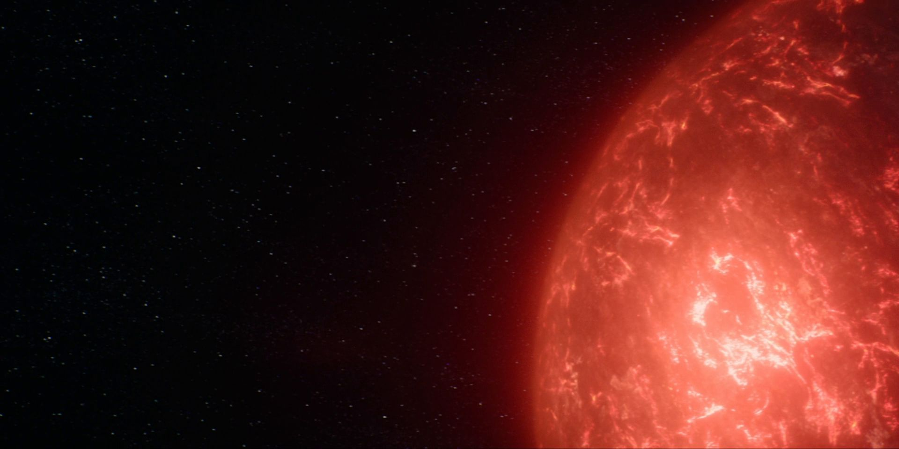
-10,000,000,000? (billions of years before the Time Lords come into existence / before Gallifrey was named Gallifrey / before Rassilon)
After Azathoth (the sentient singularity that created the Universe) has fractured and divided, the remaining core sits, unaware, at the center of infinity that is the heart of space and time. But, due to its fracturing segments, this Eye of Time is still conterminous with all of space and coexistent with all of Time. Some Time Lords believe that the core of this singularity became Gallifrey's Eye of Harmony. The Ancestral Shadows were unable to return to their universe so the will craft a world around Azathoth. The Transient Beings that remain on Gallifrey will eventually become
known as the Ancestral Shadows and Old Fae of that world. These Shadow People existed in the shadows between
the warm darkness of magick and the cold light of science. For this
reason, they called their world Gallifrey, which translates as 'they
that walk in the shadows.' Gallifrey is the first of what will eventually be 650 million worlds that will have G-Type environments
(ie Earth-like).
By this point,
the Eye of Time that plugs the Sepulchasm had developed natural small leaks
that take the form of omniversal voids on Gallifrey. The Untempered Schism and the Crevasse of Memories that Will Be are both examples of these rifts. They allow one to look into the Space-Time Vortex. This will affect their evolution. The
presence of these could possibly explain unexpectedly Gallifrey’s low
gravity relative to its great size? They might also have influanced the
world's geology allowing zeiton, white point star diamonds to be found there. For more information see: The Planet Gallifrey
The beginning of the Old Time. The Old Time will last until around the time the Time Lord society is founded.
-10,000,000,000
(for the first two millennium of the Universe / when
the Eternals were young /
the first time there are multiple space-faring civilizations / one or
two thousand years before the Kotturuh begin bring death /
The Great Old Ones known as the Archons become the lords of time. They are more advanced then
the Time Lords of Gallifrey would ever become. The Gods of Ragnarok rule all of space. All the major powers of the cosmos got along quite well for the first couple millennia.
-10,000,000,000?? (eons before the Time Lords)
Life across
the Universe is a celebration of regeneration and renewal.
No Time: Pre-History
The original version of the Universe that existed without the Anchoring of the Eye of Harmony was a Priorverse that was very different from the Prime Normal-Space Universe that is now the dominant form of the cosmos.Old Time legends and Gallifreyan mythology state that the Priorverse was created out of sentient singularity called the Kinetic Dance (aka Eru, aka the Great Old One Azathoth). The Kinetic Dance fracturing into the Big Bang. And all of the stars, worlds, and life of the Universe popped into existance instantly. The Mother Goddess used the Aurora Temporalis (Anvils of Heaven) to create and pour Time itself into the void of the empty Universe. The seconds of Time were said to be created by the Temporal Phoenix that was imprisoned in a time loop by the Philesians. One year follows another. Without time travel to interfere, time moves as a harmonious and elegant parabola.
The God Prometheus steals the life-spores from Olympus and scattered them across the cosmos to create life. Before any sapient life, There are flying horses, unicorns, bread-and-butterflies, dragons, faeries, slithy toves, and other illogical creatures. There are planets like giant apples with suns like red balloons. These impossible things persisted.
All the rules are in a state of flux. As such, there is literally no such thing as History. Time, Space, and the Time-Space Vortex are flow into each other, mixing freely. Any entity can see the future or the past as easily as they look through space. Dreams allow one to communicate across the cosmos. In this era the irrational force of Odic Energy was left over after the Big Bang. It was the massive abundance of this background psychic radiation that allowed magick to exist and kept the physical laws in flux. Magick, not science, was the dominant operating system of the Universe. Causality was largely structureless and at the mercy of those who could wield Odic Energy. Some beings learn to harness this radiation and with the right combination of words applied in a specific place, are able to wield magic. Odic Energy made miraculous healing and acts of prophecy possible.
The Archon Empire was the size of the Galaxy. They dance to the gravitational movement of the stars and the planets of the cosmos, which they call the the Music of the Spheres.
Mythology and the shamanistic power of humanity’s storytelling holds, metaphysically, the true poetry/formula for reality. It turns the abstracts of the cosmic forces into reality. Whenever enough beings all believe (consciously or unconsciously) the same fictional thing those things can achieve existence in the sub-dimension of Imagination.
All life was immortal, barring accidents. Gallifreyan legends speak of a null-space called Nineveh where Gallifreyans go when they die. It might also be known as Deathworld.
The Anchoring of the Eye of Harmony and other actions taken by the Time Lords during the Time of Legend retroactively impose rationality and science onto the Third Universe, creating an actual Retro-History that exists above the Priorverse of pre-history and pre-time. The Noosphere of this Retro-History extends back to with in a couple of millenia of the Big Bang.
If this anchoring had not occured then, a billion years after the Humanian Era, the Ferutu civilization would become lords of magick and time. They would have brought peace and properity to the Universe.
-10,000,000,000 (right after the Big Bang)
At this point the Laws of Time and reality of the post Anchoring Universe do not apply, and all the rules are in a state of flux. As such, there is literally no such thing as History. Time, Space, and the Time-Space Vortex are flow into each other, mixing freely. Any entity can see the past and the future as easily as they travel through space. Dreams allow on to communicate across the cosmos. In this era the irrational force of Odic Energy was left over after the Big Bang. It was the massive abundance of this background psychic radiation that allowed magick to exist and kept the physical laws in flux. Magick, not science, was the dominant operating system of the Universe. Causality was largely structureless and at the mercy of those who could wield Odic Energy. Some beings learn to harness this radiation and with the right combination of words applied in a specific place, are able to wield magic. Odic Energy made miraculous healing and acts of prophecy possible.
-10,000,000,000 (a very long time before the Once Wars / shortly after the Big Bang)
The Ancestral Shadows of the previous Universe become the Once Lords of Gallifrey. They have corporeal bodies. They might have been Tharils or the ancestors of the Osirans, or something else entirely. These Once Lords will eventually be known as the old Fae or old Spirits by the Shebogan people.
-10,000,000,000?? (back during the Old Times)
The Eternals
were originally beneficial to the cosmos.
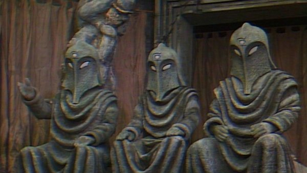
The Gods of Ragnarok
The Great Old Ones Raag, Nah, and Rok rule all of space. But these Gods of Ragnarok have no imaginations of their own and crave constant entertainment. So they create the Land of Fiction. The Land might have been created using block-transfer mathematics. While the Master Brain computer that controls the Land of Fiction is vast,and probably uses ionic energy to convert fiction into reality and vice versa. Mythology and the shamanistic power of humanity’s storytelling holds, metaphysically, the true poetry/formula for reality. It turns the abstracts of the cosmic forces into reality. Whenever enough beings all believe (consciously or unconsciously) the same fictional thing those things can achieve existence in the sub-dimension of Imagination. But the appointed Master (or Mistress) of the Land is dependent of the fictions created by others and can not create their own narratives. The Land of Fiction is a tiny hidden universe located in the sub-dimension of Imagination. The Land's space-time coordinates that read as all zeroes and its Master needs to keep the Land's dimensions working from the inside it will collapse into a void. This dimension of Imagination might also be where the Toymaker's Toyroom.
-9,999,998,000?? (at the dawn of Time / before the Shobogan’s existed / at a point when only a very few languages exist)
The Pyromeths live on the edge of the Tyros Expanse inside the gravity well of the Tartus Nebula. They need fiction to survive. Legend says that they provided the secret of fire to every species in the universe. This was done to encourage sapient beings to tell stories around the fire. The Pyromeths feed on the resulting energy of this fiction. If they mistakenly consume true stories it will make them sick. They like to kidnap inventive story tellers and force them to tell stories until they get bored. Then they destroy them. The Pyromeths appear to be very similar to the Gods of Ragnarok.
The Heart of the Universe (as it appears to a Human)
The Classmate of the Universe's Creator plans to take posession of this new universe, so the Creator put a barrier around the Heart of the Universe to seal it off from himself and all other Great Old Ones. The Heart of the Universe will end up at the exact center of the Universe, where the Terminus time station is located (so very near Gallifrey's system). At this center, the Heart is held inside a gray building-like structure labeled House of the Heart. Since the Heart of the Universe will need to be replaced halfway through the lifespan of the Universe, the Key to Time is configured to allow access to the barrier. The door can only be opened using the Key to Time (or by a Time Lord who has touched the Key putting their hands on the door and concentrating on the key’s imprint code). The interior of the structure is normally kept in a vacuum, but opening the door will re-pressurize it.
The Heart appears to a Human from 20th century Earth as a parcel on a pedestal. To a human from 20th century Earth, the parcel looks like a brown package with ‘DO NOT OPEN’ scrawled on it. There is a hatch on the bottom of the parcel that provides access to the two Ever Ready batteries that make up the Heart. If touched by the keyholder they are assaulted by a menagerie of monsters, and villains, including the Time Lord Professor Findle, the Daleks, Davros, Cybermen, Zygons, Draconians Sontarans and the postmistress of Littlehampton. This is an attack precisely designed to keep out a particular person – a person who was not the Doctor, but did attend the Academy and was obsessed with meddling.
-9,999,996,500~ (3,500 years after Event 1 / 13,500,014,400 BC)
This time zone of formative continuum is the location
where the Head of the Presidency traveled in search of the Enemy. Though outside the Noosphere of a normal TARDIS's
capabilities, the expedition was expected to be successful. The President never returned.
The Universe has now expanded to several million light-years across and is now only 3,000 degrees Celsius. Electrons begin orbiting the hydrogen and helium nuclei, creating the first atoms. Over the next several million years the matter of the Universe will be nothing by hydrogen, helium, and lithium.
-9,999,620,000 (380,000 years after the Big Bang)
Light is first able to travel freely in the Universe.
-9,996,000,000? (a few billion years after Event 1)
The very first stars form. They are Population III stars.
-9,996,000,000? (as the very first stars were igniting / about two millennium after Event 1 / before the Rassilon Era / billions of years before the 20th century / at or before 4.6 billion BC / before the Time Scoop is created / the early millennia of the Universe)
The beginning of the first Dark Time. The Dark Times are considered to be one of the most dangerous points in the lifespan of the Universe. The Dark Time will last aeons.
-9,996,000,000? (not all that long after the Big Bang)
The Great Old Ones resume the war that they were fighting with each other in the previous Universe.
-9,900,000,000~ (Only a few millennia after the Universe comes into existence)
The Celestial Toymaker (aka Guardian of Dreams) grows bored with nurturing the early civilizations of the universe (Eternals and Chronovores), and starts to destroy them instead.
?? The Great Old One, Hastur the Unspeakable (aka Fenric) was feared by many of the other Great Old Ones. They were concerned that he would destroy them all. He dueled the Toymaker and Weyland in deadly games. Hastur eventually conquered and ruled the universe during the Dark Time.
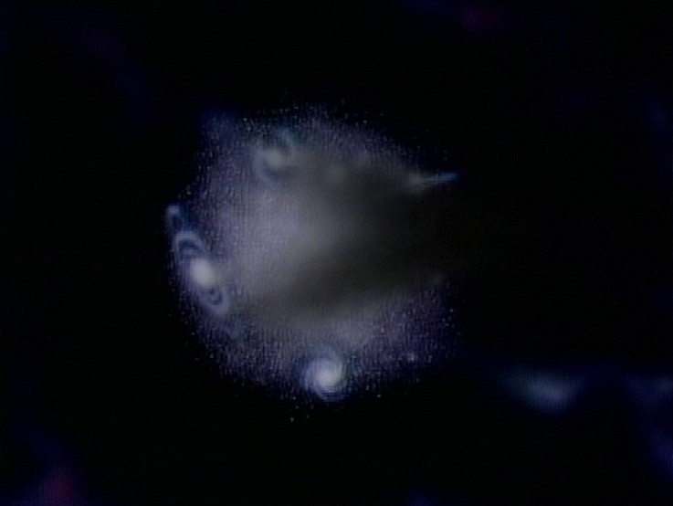
The Universe
The majority of the first stars form. The first galaxies form. Newtonium in a stable alloy of every type of metal in the multiverse, it is also the rarest alloy in the multiverse. Jewels of Chaos are made every crystalline element in the multiverse. They sit outside of the passage of time, unchanging forever. The Music of the Spheres is 'sound' of the radiation of the Universe in motion through time. When converted into sound, the music of the spheres sounds very similar to the compositions of Johann Bach. The Maestro’s goal is to become powerful enough to consume this music.
?? (sometime before they vanish / while listening to the music of the spheres – so after stars exist)
The Archons create the Pyramid Eternia. It will be the only known surviving relic of their empire.
?? The Celestial Toymaker (aka Guardian of Dreams) grows bored of destroying civilizations. He eventually finds distraction in the world of games. In a hollow beneath the Under Universe he creates the Celestial Toyroom dimension. The Toymaker often slips out of his his domain to force lesser species and occasionally even higher evolutionaries to play his games. But he can not leave for long without his Toyroom collapsing into a void. This dimension of Imagination might also be where the Toymaker's Toyroom.
-9,800,000,000 (at the time of the birth pangs of the Universe / when stars are newborn / at the dawn of time)
One of the Great Old Ones (almost certainly the Toymaker) creates the Board. The Board is located sideways from the fifth dimension and diagonally through several relative dimensions. When not folded up the red sky of this flat structure is filled with newborn stars. The Great Old Ones would gather to observe and play games with each other. They found this to be better sport then interacting with the lifeforms in Normal Space. The Council of Guardians and other Old Gods will often arrange games and tournaments for the Eternals.
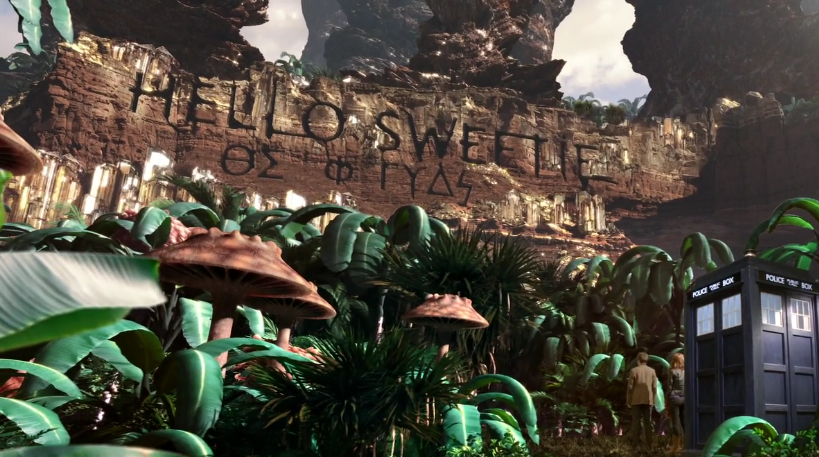
Etra Prime (aka Planet One) is probably one of the first planets to form in the Universe. By the Humanian Era it will be the oldest planet in the Universe. The planet has crystals made of the apocalypse element that contain entropic power. They are capable of shredding the raw fabric of space-time in an unstoppable reaction. It also has a cliff made of crystallized carbon (diamonds) with a message carved into them from the dawn of time. The message consists of the words 'HELLO SWEETIE' and the coordinates for Salisbury Plain on Earth in the year 102 AD. Its possible that the Apocalypse Element might be fuel left over from the Terminus Timestation.
?? The planet Hindmost will form in one of the 9 corners of the Universe. It is the furthest planetoid from Gallifrey that the Time Lords have ever found, and is barely large enough to stand on. A TARDIS would have to be re-engineered to reach it.
?? (probably after planets exist)
On an incredibly old planet in the Great Desolation, at the edge of Universe, the Archons build the Nameless City out of black glass and gold. The city has canals of mercury and Zeiton-7. There is a disc of rock at the edge of the Universe. Its surface is covered in ash. The Guardians can summon the Creator of the Universe to the outer edge of this world to speak with them.
-6,500,000,000?? (the Dawn of Time)
The Eternal Elektra and the Chronovore Prometheus conceive a child in defiance of the Ancient Covenants. That child, Kronos is the greatest and fiercest of the Chronovores.
-6,500,000,000?? (the beginning of the Universe / several billion years after Event 1 / 10,000,000,000 BC / In a time zone of formative continuum / outside the noosphere of a normal TARDIS's capabilities)
The First Proliferation: According to Gallifreyan science, the only thing that can stand against entropy and random decay is life. On an impossible planet orbiting brown-dwarf and a gravastar the interactions between dimensionally unstable spacedust and multidimensional wormholes leads to the emergence of the Ancestor Cell. These Ancestor Cells might have been the life-spores deliberately released by a Chronovore known as Prometheus. Amethyst Virus #7001B from the distant future fell into the past and infected the Ancestor Cell, giving all life the ability to evolved and change. All live native to this Universe descended from this single Ancestor Cell. These cells were not the first living things, but the organisms that evolved from them were. These organisms spawned all naturally evolving (ie non-engineered) life in the Universe. For the first time the Universe becomes aware of itself through the senses of these lifeforms. At first all lifeforms ar connected to the core of the original sentient singularity, via special organs. But something disables this link, leaving the organs dormant and atrophying. At this point, all life has a potentially infinite lifespan as mortality and life-spans had not been introduced to the cosmos. Lifeforms do not age, and their biology continues to regrow and thrive as if they were young, no matter how many years they have lived. Only physical accidents or deliberate violence could lead to death. It’s likely that cancer like mutations were impossible and, by implication, nothing died of viruses or disease. But all life relies on the death of others.
While the first living cells are eventually consumed by other, newer, forms of life, the Ancestor Cells remained. Over the next several billion years it feeds on the time pollution from various time travel capsules. The Ancestor Cells will be drawn to Gallifrey by I.M. Foreman's Universe-in-a-Bottle. The Time Lords will spend much of the Last Great Time War believing that these Ancestor Cells are the Enemy.
-6,500,000,000?? (possibly the first living creature)
The ancestors of the single-celled Spraxis Jelloids evolve on the world on Bendalos. The species will still be effectively immortal by the Humanian Era.
-6,500,000,000?? (probably after Prometheus releases the life-spores)
The greatest and fiercest of the Chronovores, Kronos is imprisoned in the Crystal of Kronos
by the Council of Guardians.
The first life forms that exist in this Universe are massive creatures driven by primal instincts. Many of them depended on the high levels of psychic radiation that is left over from the Big Bang. There are flying horses, unicorns, bread-and-butterflies, dragons, faeries, slithy toves, and other illogical creatures. There are planets like giant apples with suns like red balloons. But no sentient life had evolved to observe these impossibilities, so these impossible things persisted.
-6,000,000,000?? (billions of years after the Big Bang)
The first truely sapient and intelligent lifeforms evolve.
-6,000,000,000?? (one of the original species from the birth of the Universe)
A species compose of sentient helium atoms evolves. They are known as the Sentients. These and most other conscious lifeforms wrongly assume that they are separate individuals. Many members of these species have an instinctive feeling of loss from being separated from the original sentient singularity that formed the Universe. They long for a home they've never known. They are unaware that they are the collective sensors of the living Universe.
SporeShips
The Kamishi view themselves as the First Race in the Universe. They have a ridged caste system. Their Sanakuma caste uses SporeShips from the ancestor universe to accellerate evolution of life on numerous worlds.
-6,000,000,000??
(before the Time Lords / one of the first Great Races to appear)
The ancestors of the
energy beings known as the Constructors of Destiny come into existence.
They will accelerate the evolution of life on numerous worlds. They might also be know as the Kamishi.
-6,000,000,000??
(aeons before
the Time Lords)
An elder species of blue skinned
humanoids experiance billions of years of heroism, exploration, and
scientific discovery. Mr Saldaamir will be a member of this
species. These might have been the Halldons.
The Xylians evolve.
-6,000,000,000?? (hundreds of millions of years after the Ancestor Cell / the Universe's first civilization / during the Dark Times)
The first native civilizations are founded by the first sapient species to evolve. They arise on the worlds in the Realm of Morning, where mythic matter is common. The massive Racnoss are are species of carnivores and omnivores who devour entire planets. They evolved in zero-gravity and can survive in hard vacuum. The gigantic Daemons were early masters of space travel, psionic forces, and thermodynamic dimensional manipulation. They spread across the Stellian Galaxy conducting scientific experiments on the Lesser Species. Most of these species (such as the Racnoss, or the Qwerm) tend to be much more massive then aliens that evolved in later eras. The Gallifreyans and Osirans were the rare exception to this size rule. It is theorized that the continual decay of the gravitational constant of the Universe is making larger sapient species less likely as time goes by. The Laima will eventually fix the gravitational constant at a single value.
-6,000,000,000?? (long before the Milky Way was fully formed / possibly after the Time Lords came into existance / they claim to be the first sapients)
The Phaeron were a species composed entirely of dark matter who were one with space-time. They create a massive network of wormholes that connect various parts of the entire Universe.
-5,110,000,000 (4.6 billion years before life evolves on Gallifrey / 8,112,027,893 BC)
Gallifrey's system begins to coalesce relatively early in galactic history. It is located very near the center of Mutter's Spiral. (The Infinity Doctors implies it is located very near the edge of the Mutters Spiral.) For more information see: Gallifrey's Star System
-5,000,000,000??
(before the Gallifreyans had learned how to count / earlier than a TARDIS can safely go)
The Old Ones exist.
The Winter Gods are born. These Ice Giants lived in temporal glaciers. Most of them might have died in the Last Great Time War.
-5,000,000,000?
(a few billion years before the Eye of Harmony)
The Golden Age: The
civilizations of the Universe thrived in a harmonious state, learning
and growing from their mistakes. Heroism, exploration, and discovery
define the Golden Age. An these heroes built upon the accomplishments
of the previous heroes. Knowledge and wisdom was accumulated and used
to enhance life.
-3,500,000,000 (about 7,000,000,000 BC)
A Death in the Family: Human time travelers
from the distant future use the time ship UNS Pelican to settle on the world Pelachan.
-3,000,000,000
(6,502,027,893 BC / three billion years before modern Gallifrey / shortly after Time awakens)
The First Spring: Gallifrey's sun ignites. The goddess Time creates Gallifrey’s first Sun to keep her ‘grandfather’ warm. This 'grandfather' could refer to the Shobogans and/or the Ancestral Shadows of Gallifrey. The planet Gallifrey might have been very much like Alzarius from E-Space and possibly had a Mistfall every 50 years.
-2,500,000,000 (about 6,000,000,000 BC)
The sapient Cthalctose of 16 Alpha Leonis
One are destroyed by a black hole (or possibly a Gravastar, since black holes had yet to be invented). Their moon will eventually end up orbiting the Earth.
-2,500,000,000~ (5-6 billion BC / before the Era of Disembodiment)
The Kystra's
Era of Embodiment: The Krystra species had technology that could
manipulate matter on the level of quantum functions. There were
displays about their accomplishments in one of Gallifrey’s museums of
ancient times.
-1,611,103,148 (sometime after the formation of the anti-temporal matter / 5,111,105,111 years before 1963 AD /
5-6 billion BC)
The Kystra's Disembodiment: The protective shell around the spark of anti-temporal matter wears out and explodes. The resulting supernova destroys the Kystra’s homeworld and leads
to the creation of the Earth's Solar System. Sol is located in Sector 8023 of the Third Quadrant of Mutter's Stellian Spiral Galaxy on its inner spiral arm at the
coordinates 6309.
-1,500,000,000?? (billions of years before the Humanian Era)
The Raab evolve and begin to spread across the Odonoto Ceti region of
the Stellian Galaxy. This plant species can grow up to 500 meters long.
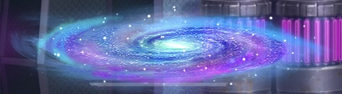
The Stellian (Milky Way) Galaxy
Castrovalva: Event 1 occurs. A massive singularity starts to form in the middle of the Stellian Galaxy. The Stellian Spiral Galaxy (aka the Milky Way) forms out of a huge in rush of hydrogen. The time force of this event is so immense that it is almost impossible for a TARDIS to escape its field. The resulting radiation from this singularity blasts the galaxy free of all its remaining interstellar hydrogen and helium.
The Galaxy will be named after a famous Gallifreyan explorer named Mutter Stellian. Xaos is the first planet to form in this galaxy. Mutter's Stellian Spiral Galaxy will form around the timestation from the previous universe and it is later given the name Terminus by Terminus Incorporated. Sagittarius A* is the massive black hole at the center of the Milky Way. This black hole connects the Normal Space Universe to the multiversal Hub of the Multiverse. This means that Sagittarius A* is connected to all black holes in the multiverse – as well as to the very center of the Multiverse. This black hole is also the Milky Way’s best gateway to the Universe of Anti-matter. Changes to history that occur very near the center of the Stellian Galaxy (the Milky Way) can send ripples backwards into the past as well as the future. Many of the more altruistic Time Lords have worried about the dangers of such ripples.
Miggae is the star closest to Sagittarius A*. It is named after the Queen of Seirot who was an Archangel of Law in the conflict between Law and Chaos. Miggea has 4 worlds orbiting it in very eccentric orbits. The Miggea star system’s orbit around the Sagittarius A* takes in through all the aspects of multiverse. Miggea’s planets are known as the Ghost Worlds because they regularly shift into different universes. This ‘shifter’ star system should be drawn into Sagittarius A* and even the Time Lords don’t know why it isn’t.
About a thousand of the worlds in this Galaxy will have sapient life by the time of the War Games. The population of sapient beings in Mutter's Stellian Spiral Galaxy in the Sensorian Era (between 3000 and 4000 AD) is around 15,665,000,000,000,000,000 individuals. But most of the planets close to the galactic rim are barren wastelands of rocks and boulders. Worlds like Frontios (with its G-type atmosphere) are very rare.
-1,500,000,000?? (after the Milky Way Galaxy formed)
The Archon Empire was the size of the galaxy.
They dance to the gravitational movement of the stars and the planets of
the cosmos, which they call the the Music of the Spheres. They manipulated time and space for their own ends.
-1,500,000,000?? (billions of years before the Humanian Era)
A sapient species evolves on the world of Benelisa. They are destroyed by
multi-dimensional parasites known as the Beast.
??
(during the Dark Times)
One of the Great Old Ones has a space
ship known as the Infinite. The heart's desire would be granted to anyone who entered the ship. Until
at least the 40th century people would go on quests for the Infinite.
?? (a very long time before the 20th century)
Six Physical Temporal Nexuses (PTN) were
created. They could register the users wishes and desires and then shift the user into the parallel universe
where their wish was coming true. The Time Lords will later try to collect them all. One will be found
on Usurius, two on Kirith, one (the Spear of Destiny - Gungnir) will be found on the Earth.
Its possible the Great Old One's ship, the Infinite was also a PTN.
-1,500,000,000 (5 billion years before 4663 AD)
Skaro's sun ignites.
-1,500,000,000
The star Sol ignites. Sol is located in Sector 8023 of the Third Quadrant of Mutter's Stellian Spiral Galaxy on its inner spiral arm at the
coordinates 6309.
-1,500,000,000
(1-5
billion of years before 2003 AD)
The ancestors of the Constructors of Destiny
(one of the first Great Races to appear) guide and instruct the more primitive races of the Universe.
?? Because The Gods of Ragnarok are only intersted in endings and not beginnings, they abandon their Land of Fiction. Instead they exist in their own time dimension called the Dark Circus. They force lesser species to perform for their entertainment. The Dark Circus is a bubble of their own physical laws tied to the world of Segonax in Normal Space by several memorial stones. In the post Anchoring cosmos, the Gods of Ragnarok have relatively little power. They can appear as other beings in Normal Space – but this is difficult for them.
-1,100,000,000?
(before the Rassilon Era / billions of years before the 20th century / at or before 4.6 billion BC /
before the Time Scoop is created
/ after Gallifrey is born / a long time after the Gallifreyans have evolved)
The beginning of the the second Dark Time (aka
the Dark Days,
aka the Time of Night, aka the Time of Stones). The Dark Times are considered to be one of the most dangerous points in the lifespan of the Universe. This Dark Time will last
aeons until the beginning of the Rassilon Era.
The Beast of all evil will begin to subtly affect life throughout the Universe. It does this by embedding itself in the myths and legends, and nightmares of species throughout the Universe. Because of this, the Beast will be the template for evil and numerous cultures. It is known as Krop Tor, Satan, Lucifer, the King of Despair, the Deathless Prince, the Bringer of Night. The number 666 is regarded as ‘the number of the beast’ on numerous worlds.
-1,100,000,000?
(before the Earth forms)
The time witch Brimo is imprisoned for attempting
to conquer the world of Nefrin.
-1,100,000,000?
(when the Earth is still dust and gas)
The reptilian Veil are conquering worlds.
-1,100,000,000
(during the Dark Times / ~4,600,000,000 BC /
this is one of Gallifrey's earliest interventions / when the star Sol is young)
Empire of the Racnoss: The Doctor rescues the last clutch of Racnoss eggs from the warring
Racnoss factions and the Fledgling Empires. He takes the clutch back in
time (when most of the stars and planets haven’t formed yet) to the
dawn of time to a forgotten area of Sector 8023 of the Third Quadrant of Mutter's Stellian Spiral Galaxy. The Racnoss' Webstar ship, the Secret Heart,
becomes the center of the planet Earth as if forms around it. It will take
billions of years for the Racnoss Empress to find her children. According to Gallifrey's records, Sol III is one of the only worlds in the cosmos to have the word 'the' before its name,
(ie The Earth). The 10th Doctor claims this is the furthest back in time he has been.
-1,000,000,000??
(1
billion years before the Logopolitans begin draining off Entropy /
billions of years after Event 1 / after sapient species and
civilizations are born / halfway through the original, planned,
lifespan of the Universe / ~4,000,000,000 BC)
The explosive force of Event 1 is expended and the Universe ceases to expand. When the Doctor reassembles the Key to Time, in The Armageddon Factor, one of the segments is damaged, due to the false
segment the Doctor used earlier. This damage allowed
the Black Guardian to
create a
tailored virus while the Universe is stopped. This virus creates
an imperfection in the Heart of the Universe that the White Guardian
uses to re-balance the Universe. The imperfection causes entropy to begin increasing at an accelerated
and even exponential rate. The cosmos hangs in equilibrium.
This will last 1 billion years.
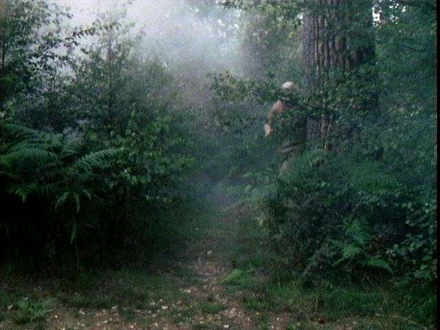
Early Gallifrey?
-600,000,000 (600 million years before the Eye of Harmony / at the same time as new life is evolving on the fledgling worlds /
4,012,027,893 BC)
Life
from the Ancestor Cell arrives on Gallifrey and begins to evolve. The Untempered Schism affects the evolution of life on Gallifrey. A
common side effect of living next to a wormhole over a few centuries is
that the populace will develop psionic powers. Such exposure can also
cause rapid mutations (like the forms of life on Alzarius). Life on Gallifrey moves quickly up the evolutionary ladder.
For more information see:
The Planet Gallifrey, and its
Flora and
Fauna
-500,000,000~ (over 4 billion years before the 21st century)
The morphic field manipulator known as the Blessing
is buried deep within the Earth. This could very well be part of the
shell that the Gallifreyans built around portals to the Yssgaroth's
dark Universe that were designed to prevent the return of the Great
Vampires and the mutation of humanity from exposure to the Vampire
Factor. If so, then the Time Lords probably had to come back in time half a billion years to create it.
?? The Beast has a son named Abaddon who is trapped beneath the Cardif Rift on Earth.
?? (The Dawn of Time / after the Earth forms / probably
before the Eye of Harmony)
Malignant fairies and wraiths thrive
on Earth. They might be related to the Mara.
?? (after the formation of Planet 5)
The Great Old One, Hastur the Unspeakable
(aka Fenric) created the
Fendahl which was capable of killing other Great Old Ones.
-200,000,000??
(at the time of the first mammals on the Earth)
In the space between the first 8 dimensions
the Unity of the Scourge comes to exist. They are the inner feeling of self-doubt in every humanoid
in Normal Space
and they feed on depression, doubt and despair they create.
-200,000,000??
(before the Time Lords [Gallifreyans?] walk the planet / Gallifrey's Jurassic Period)
The Stolen
TARDIS: The Saurian Age (Gallifrey's Jurassic Period) exists on
Gallifrey. Active volcanoes appear to be common on pre-historic Gallifrey. Great lizards like the Gargantosaurs
will continue to exist until the Time of Legend.
20 meter long reptile that resembles a brontosaurus with thick chitinous scales and serrated teeth. This might be the armored Dinosauria. Another
beast is a massive creature (twice the size of a hab-bloc) with 2 legs, 2 vestigial wings (with purple and white feathers)
and 4 eyes. This Age might last about 2160 years??
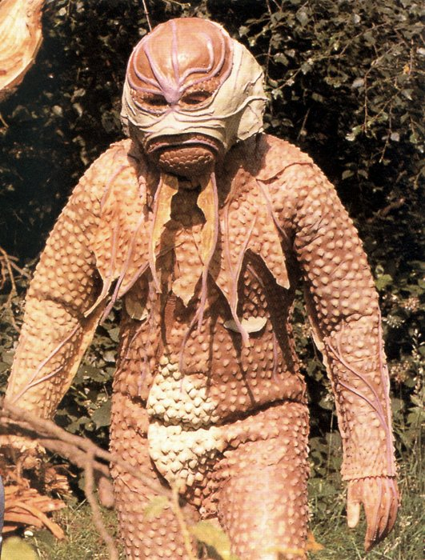
Pre-Neanderthal Gallifreyans? (the early generations of pre-Shobogan Gallifreyans / when the Gallifreyans begin dreaming)
At this point in pre-history, dreams can cross the space and time of the cosmos. The effect of the dreams of the ancient Ancestral Shadows elevates early life on Gallifrey to sapience.
-10,000,000? (when new life is evolving on many worlds including Gallifrey)
Some of the Transient Beings that remain on Gallifrey take on the roles of gods, protecting the Gallifreyans that are evolving on Gallifrey. The rest of the Shadow People hide in the wildlands and networks of catacombs that cover the world. They will become known to the primative Gallifreyans as the Ancestral Shadow People who walk in the shadows between the warm darkness of magick and the cold light of science. The ancient Gallifreyans see these gods as their ancestors.
-11,000,000?? (Prehistoric Gallifrey / while the Universe is still forming)
Neanderthal Gallifreyans evolve. These Gallifreyan Neanderthals did not evolve from anything embarrassing (like apes). They might have evolved from something similar to the Marshmen of Alzarius. They will become one of the first Great Races, but they begin as a Level 1 Society mastering fire. Because they are the first sentient humanoids to evolve from the Ancestor Cell they have a direct effect on all of the Space-Time Continuum. Their morphic fields increase the chances of humanoids evolving on other G-type planets. Non-human species will only be found on worlds where humans could not survive in the wild.
Morphic fields are created by the crystallization of history through observation by a conscious mind. Morphic fields don't follow the normal rules of the universe and are so complex that that a living mind is required to compute their mathematics. The shape and nature of every lifeform in the universe is influenced by the morphic field of that species. The artron energy created by a living being creates the morphic field as a sort of collective psionic aura which acts as a species equivalent to an individual’s biodata. The longer a particular species has been around the stronger its morphic field. These fields build up over several generations (probably as a side effect of the crystallization of history caused by observation). This is why there are so many species that look like Gallifreyans throughout the Universe. These early Gallifreyans are however only partly responsible for the number of humanoid species in the cosmos. For more information see: Ancient Gallifreyans
?? The Kamishi (the self-proclaimed First Race) use SporeShips to accelerate evolution throughout the cosmos. The Khorlthochloi are one of the oldest races in the Galaxy. They guide developing species and eventually ascended to a higher dimension. The Doctor believes that the Khorlthochloi's achievements outweigh even Rassilon's. Other ancient species are the people of Tivoli, the Spraxis Jelloids of Bendalos, the space-faring Teuthoidians, the Raab of Odonoto Ceti, the people of Benelisa, the Vondrax, the Xerxes, the Xylians, the Fendahl, the Carrionites, the Vashta Nerada, and the Krafayis. The Carrionites depended on the high levels of psychic radiation that is left over from the Big Bang.
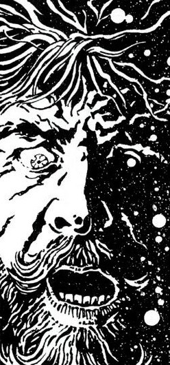
Early Gallifreyan -10,000,000? (after Neanderthal Gallifreyans evolve)
The Constructors of Destiny modify the Gallifreyan Neanderthals so they can fulfill their destiny.
-10,000,000?? (when the Shobogans first evolve)
The plug that caps the Sepulchasm on Gallifrey has natural small leaks that take the form of omniversal voids. The Untempered Schism and the Crevasse of Memories that Will Be are both examples of these rifts. The people of Gallifrey are first exposed to the schisms and this will affect development of these Neanderthal Gallifreyans. A common side effect of living next to a wormhole over a few centuries is that the populace will develop psionic powers. Such exposure can also cause rapid mutations (like the marshmen of Alzarius). Time bubbles are invisible to humans but Alzarians and Gallifreyans can see time bubbles.
Only sentient beings can collapse quantum phenomenon and crystallize history. Biodata is a space-time map of this crystallization, thus only sentient beings (organic or technological) have biodata. It is a form of “time DNA” which defines a sentient being's reach/span in space as well as time. As a sentient observes the quantum flux of the universe, he collapses the uncertainties into facts. Thus it is the perception of the universe that defines it – making the meaning of the universe its primary foundation. As a sentient lives, he creates strands of meaning and understanding that mark out all he sees perceives. These are his bio-data strands.
The rifts like the Untempered Schism allow Gallifreyans to look directly into the Space-Time Vortex. The Gallifreyans are beings made of biodata and they are the first to impose “meaning” on the universe by their observations. Before these observations, causality was largely structureless and at the mercy of those who could wield Odic Energy. But, as these early Gallifreyans observed the Universe, they set down laws to predict its actions. In doing so, their observations physically began to create the rules by which the Universe operated. Due to the omniversal voids, early Gallifreyans might have developed a way of measuring time instinctively as a survival trait. This could explain why the species is later obsessed with conquering Time.
-10,000,000? (At least 5 billion years after the Big Bang / before any Gallifreyan had a nightmare / after regeneration?)
Prelude Parasite: At this point in pre-history, dreams can cross the space and time of the cosmos. A bearded male Gallifreyan dreams of the beginning of the Universe and of a
life-form that is born at that time and lives 5 billion years. He is the first Gallifreyan to
have a nightmare. HeThe
Gallifreyan believes he has discovered god and is terrified. He
resolves to risk everything to learn, build, and destroy, to conquer
matter, energy, time and everything else so that he won’t have to fear
god. He leaves his home to and spends the rest of his lives trying to
accomplish this. Time Lords in nightmares sometimes make deals with the goddesses of the Menti Celesti, sometimes to become their
Champions.
At this point in pre-history, dreams can cross the space and time of the cosmos. The higher dimensions (including the Vortex and the dimension of Imagination) are filled with a background radiation of artron energy generated by every sapient life in history. The Menti Celesti known as Pain, Death, and Time, are the dreams of Time Lords which leak out into the cosmos. These non-corporeal abstract universal conceptual entities are brought into existence by the sapient beings who conceived of death, and time and the others as entities with their own will. On Gallifrey, Pain, Death, and Time are the most well-known and revered of the Menti Celesti. It was said that Pain is the first and oldest of these conceptual gods.
-10,000,000? (almost certainly when the Goddess Pain manifested / during a Dark Time)
The Forbidden Race known as the Hond are sapient embodiments of the concept of Pain. Individually they are sapient, but in larger groups they become more animalistic. Because of the pain of living, that the Hond experienced constantly, the Hond wanted to kill all life in the cosmos – including themselves – to end their collective suffering. They were immortal and could only be killed if a way was found to remove the pain they experianced at the core of their beings. The Hond will die out in a Dark Time after the first Eternal War. But bedtime stories of them will be told to time tots on Gallifrey. The Hond could be a direct decendent of the Ancestor Cell.
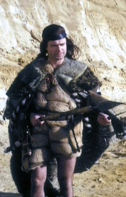
-100,500,000 (600 million years before the Eye of Harmony / 3,512,027,893 BC / Before humanity existed / after the Constructors of Destiny alter them)
The first Shobogan Gallifreyans evolve into existence. This Level 1 society is war-like and tribal.
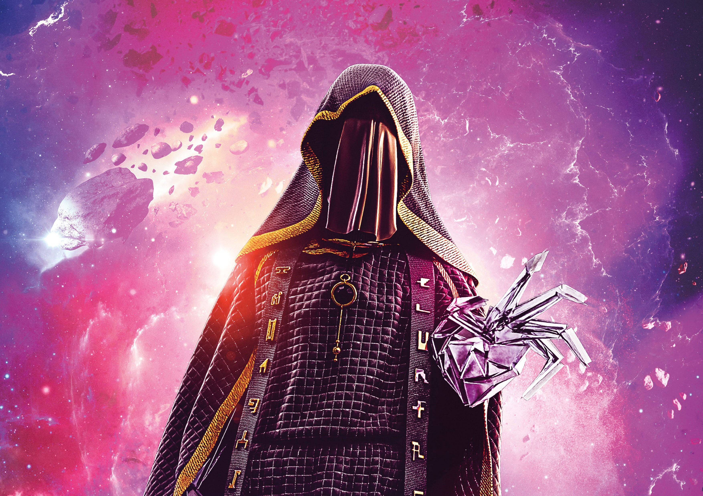
-10,000,000?
(The Kotturuh
are one of the first species in the universe / appear to be one of the first species to develop space travel / not long before they begin judging worlds)
The Kotturuh appear to be one of the first species to develop space travel. Like all species at this point in time, the Kotturuh are immortal. The inscriptions on their robes pre-date the
current Universe. When using their species affecting powers, calculations flow over their robes. They
discover the Gift of Death on their homeworld of Mordeela - a natural
energy force that was going to escape and bring mortality to every
life-form in the Universe. Much like how the Time Lords would link
themselves to space-time to anchor Time, so too the Kotturuh linked
themselves to this power of Death to harness it. Indeed, one could call the Kotturuh the Death Lords.
They realized that if every Kotturuh was to die the Gates of Death
would open, and the energy would escape possibly ending all life in the
Universe. They theorized that only by allocating their gift of death
properly could they deplete the energy of Mordeela and spare the
Universe unstoppable catastrophic death.
-10,000,000?
(when even the
Eternals were young / almost
certainly before foreseeing the future becomes impossible / when
Shobogan society was evolving / before there were Time Lords / not long after developing space travel)
The Dawn of the Kotturuh: Over time, the Kotturuh came to believe that they had been
tasked by the Ruler of all Universes to visit each universe and assign
a lifespan to every species. They claim to be a species from the previous
universes, and state that in each universe they bring their gift of
mortality to all life. They can taste the potential future of any species they are exposed to, looking forward billions of years. The goal was to produce a perfect, balanced cosmic ecosystem in every universe. Their Great Task is to make the Great Song (the song of each universe) beautiful and harmonious. They called this the Design. But this was only a myth they had created for themselves. The Kotturuh begin their
Great Task on the world of Birinji where they set the local sapient
species’ lifespan to three of that world’s
months.
-10,000,000?
(after Pain forms / probably when the Kotturuh began judging the cosmos)
Death, the older sister of Time, comes into being. Like Pain, Death is created by the dreams of
the people of Gallifrey. It is likely that Death's origin relates to
collective trauma of the Kotturuh granting the 'gift' of mortality to
all life in the Universe. A Gallifreyan fairy tale states that the
drunken gods who were supposed to give the newborn Death her name,
instead gave the name to someone else and then forgot the name. Angered
by this failure, she now spends her time removing every mortal's name.
Death serves as a gatekeeper between Null-Space and the afterlife.
-10,000,000? (possibly when Death in incarnated?)
Deathworld is a separate but coterminous Null-Space
(N-Space) to the Normal Space-Time
Continuum. It lies far far beneath the Deep Time of the Void
found between alternate timelines. Every sentient being has
a parallel N-Body that leaves their corporal body at the moment of
death. This N-body travels through Null Space to reach the
Light. According to some legends the N-bodies that continue on might become Eternals.
Gallifreyan legends speak of a Null-Space called Nineveh
or Sepulchasm, where Gallifreyans go to die. This place is occupied the Watcher of Nineveh and is filled with ruined timeships.
The Light that the human souls travel to might be the City of the Saved.
The High Eternal and conceptual entity, Death serves as a gatekeeper between Null-Space and the afterlife.
However if the sapient's N-body is still too attached to the real world (usually through excessive negative emotions,
but also because of an extremely strong will coupled with sense of their life being incomplete) then the N-Body
will become trapped in Null Space in a desperate attempt to return to the real world.
This could be why
every sapient species in every galaxy
believes in an afterlife
and has developed a concept of Hell.
Eventually, in
most cases, these N-bodies eventually realize their mistake and continue on. But is some cases their soul fades till they are nothing more the interstitial phantoms hungering for artron energy. When the Doctor visits the Realm of the Dead he finds that the N-forms of almost
everyone who died because of his actions or actions are there. Though a
majority of them seem to be ones who died in the last few years of his
life. The Doctor has speculated that the nightmares of beings in Null-Space might have become the Great Vampires. Occasionally these interstitial phantoms escape back into Normal Space and attempt to possess the living.
The First Age of Time: The Astral Vortex of the 5th Dimension is filled with the background radiation of artron energy generated by every sapient in history. The dreams of the early Gallifreyans create the goddess Time. Most Time Lords will view the Great Timeline of History as high-order mathematical structures, but the theory that led to their understanding of the Vortex is known as the ‘Idea of Living Matter.’ The mathematical structures function as the universe's subconscious, making the vortex a dimension of pure thought. Its complexity is sophisticated enough to be regarded as a living sentient being. This manifestation of Time marks the beginning of the First Age of Time. Time is the daughter of the Timewyrm, and the younger sister of the Goddess Death. She is the last of the Menti Celesti to be born.
-10,000,000? (the ancient distant past)
All across the cosmos the Menti Celesti will claim champions, envoys and emissaries. The Quack-Shrinks of the Sepulchasm become the first Champions of the Menti Celesti. They care for the Possibility Tree that is found in the Astral Gardens.
By this point the beings who descended from the Ancestral Shadows of the Ancestor Universe now rule the Shobogans of Gallifrey as the First Lords of the Priorage. They are Gallifrey’s first aristocracy and will eventually be known as the Once Lords. The early Shobogans build numerous walled cities all over the planet. This early civilization knows of the Menti Celesti. In the modern era there are no historical records from the time when Gallifreyans wore animal hides and uses spears.
?? Gallifrey's moon is named Pazithi Gallifreya, after the mystic virgin moon goddess. Pazithi will still be worshipped at the time of the revolution, despite the moon being covered in mining colonies.
?? (after Time comes into being / during the Old Time)
As the people of Gallifrey (both Shobogans and First Lords) communicate with the goddess Time they develop and formalize a worldwide religion focused on worshipping her and the other Menti Celesti. Pain, Death, and Time the primary members of these 'heavenly
minds.' They have the
following colors attributed to them: Red and Black for Pain, White
for Death, and a shifting Gray color for Time. Other deities include
mystic virgin moon goddess Pazithi who's name adorns one of Gallifrey's
moons and Fate (also known
as Osuda) who is known for her hallowed hand. The Menti Celesti drove all of Gallifrey’s civilization. Prayer to the gods
is usually conducted by individuals in a privet setting. Time
Lords in nightmares or near-death states can sometimes meet and make
deals with the goddesses of the Menti Celesti. Sometimes the Time Lord
becomes their
Champions. The Eternals always test their Champions to see if they are worthy. Mythology and the shamanistic power of Shobogan storytelling holds, metaphysically, the true poetry/formula
for reality. It turns the abstracts of the cosmic forces into
reality. Whenever
enough beings all believe (consciously or unconsciously) the same
fictional thing those things can achieve existence in the sub-dimension
of Imagination. By this point the Ancestral Shadow People are now viewed as the Old Fae of Gallifrey. Early
in their history the Gallifreyans came to believe that if they killed
all the evil people in the universe then the good people who remained
would become evil. They thought that light could not exist without
darkness and that if evil were destroyed then good would vanish as well. By the time of the 1st Doctor, the Time Lords believe the Menti Celesti to be Higher Eternals and most see all of the Eternals as little more the legends.
??
(when the Universe is still in its teens / before and during
the time of the Pythia)
Old High Gallifreyan is created by the First Lords. Causality was largely structureless and at the mercy of those who could wield Odic Energy. Odic
Energy made miraculous healing and acts of prophecy possible. Magick is
about altering the probability so that unlikely combinations of matter
and energy can occur. Coincidences are directly tied to magick, enhancing and shaping it. Moral or spiritual qualities such as courage and
self-sacrifice can be used as tools to shape probability. One of the
more effective ways of force probability into the desired shape is to
use the power of sacrifice. This can be done by sacrificing others or by
the magick wielder themselves. On Gallifrey Old High
Gallifreyan was used to harness this power. The most magic like power ever
wielded by the Gallifreyans as a whole, was Old High Gallifreyan. In the time before the anchoring of the Web, Old
High Gallifreyan could be used by experts to burn stars, raise empires,
and topple gods. Humans would have a great deal of difficulty speaking
this language.
Led by the First Lords, the Shobogans enter the Bronze and then the Iron Ages of a Level 2 Civilization. Animal wool is something that is collected and used. The early Gallifreyans had many wars, periods of regression, and periods of progress.
-101,502,000?? (when Gallifrey is in a feudal state)
The wars between the major nation states of Gallifrey lead the vassal and city states to be ignored. This allows them to grow and become a global body politic.
-101,502,000?? (near the end of war between major nation states)
The minor state of Tartarus makes first contact with the off-world Orygen. They steal the Orygen’s technology and resources. This advantage allows them to develop into a major power.
-101,501,000?? (before space travel / when swords and armor were common)
Sirgwain and the Green Knight: A Ice Warrior’s ship breaks down on Gallifrey in the province of Barnakadon. The Warrior confronted King Halfur and tricked him into agreeing to provide aid in repairing the Warriors space ship. The warrior was quite impressed with the bravery and honor of the Knight Sirgwain and chose to spare his life before he left Gallifrey. During this time The Seers of Doom and the Valley of the Shadow were both dangers that could be found in the land of Barnakadon. This story becomes a popular fairytale told to time-tots.
-101,501,000?? (at the end of the global war)
The fractured states of Gallifrey reform into the states of
Sloathe-Prydos, Arcalaise, Heliotropia, Scende-Dromeya,
Cerule-Perfidia, Urizei, Solace, Genesis, Destiny, Resurrection,
Revelation, Remembrance, and Tartarus.
-101,501,000?? (after the reunifications of the fractured societies)
The technologically advanced society of Tartarus joins with
the Sloathe-Prydos state. They now control most of the Sealess Country.
There is a major cultural shift. The Astral Mappers of Sloathe-Prydos
travel to the monasteries of Tartarus where they devote much of their
state’s resources towards the task of studying the interior planes of
the Astral Vortex. There
are weak-points in space time that seem to be created by psionic
effects of worship. When time sensitives interact with these
small ruptures they can become full blown time fissures.
-101,500,000?? (after the unification of Tartarus and Sloathe-Prydos)
While probing the tides beyond his physical bodies, a
Whitewood monk in the Lungside Chaple of Prydos discovers the continued
existence of the dark previous universe. The
First Lords realize that the Yssgaroth are related to the Ancestral
Shadow People that they themselves decended from, and that the
Yssgaroth represent the same sort of expanding new power in that
universe that the Once Lords represent in the Normal-Space Universe.
-101,500,000?? (around the time of the discover you the dark universe)
The
King and other First Lords of Prydos arrange a coup in the Sloathen
lands. This allows them to take direct control of those lands an claim
them as feudal retainers. In contrast to this the King strengthens his
relations with Tartarus.
The First Lords of Prydos see the Yssgaroth and damage/corruption they could potentially inflict as being a major threat to the Normal Space universe. They resolved to conquer the Yssgaroth’s Bloodrealms. At Prydos’ request, the upper class of Tartarus send their more psychically powerful children to Prydos for training in meditative warfare. The King of Prydos creates the Young Crusaders, a group of psychic warrior who will be able to fight a dream war with the Yssgaroth of the Bloodrealms.
-101,500,000?? (as the Prydo-Tartaruan Crusaders prepare to attack the Bloodrealms)
The Astral Mappers of Prydos conclude that the Menti Celesti consider a war with the ancestor universe to be blasphemy.
-101,500,000?? (when the majority of the eligible citizens of Prydo-Tartauan are been trained to be Young Crusaders)
The Astral Crusades: Led by the High Vizier of Tartarus, the Crusaders enter the dream-space between universes in preparation to conduct a meditative war upon the Bloodrealms. In an attempt to placate the growing schism between the Astral Mappers and the Crusaders, the King of Prydos joins the High Vizier in dream-space. He is immediately killed, and this is blamed on the Yssgaroth. The Prydo-Tartauran declare all-out war on the Bloodrealms of the Old Universe.
-101,500,000?? (when there was dissent among the Great Old Ones / a million years before the end of the War)
The beings who would become known as the Constructors of Destiny, are upset at the conflict between the Great Old Ones of the previous Universe. They plan their greatest work. The begin designing a calculating engine that could completely understand every aspect of the Universe. They reveal their plans to the Old Ones in the hope that it will bring peace and unity to the multiverse. But instead, it triggered an all out war in heaven.
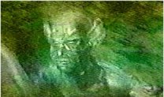
Primordial Class Yssgaroth aka Great Ones aka Giant Vampires
-101,500,000?? (when the Astral Crusades begin / long before Time existed in a measurable form)
The Astral Crusades conflict with the Yssgaroth was the beginning of what would eventually be known as the Once-Wars. The Once-Wars were probably the first war in heaven.
-101,500,000?? (probably when the Astral Crusades begin)
The Red-Handed Jackal (aka the Timeless) fights to save the Bloodrealms, and sacrificed many many of his lives to save and free the Yssgaroth there. He did this even though the Yssgaroth had made mistakes and gotten themselves into trouble. In the end he looked like an Yssgaroth (or Yssgaroth looked like him?)
-101,500,000?? (before Time and History had been brought into being / at the dawn of this world)
Under orders of the First Lords of the Priorage, the Young Crusaders use the powerful Dark Magick Astral-Warfare to devastate the Yssgaroth and conquer the Bloodrealms. This causes even more damage to the dying Old Universe.
-101,500,000?? (after the Great Old Ones learn of the Constructor's plan)
The war in heaven between the Old Ones tears up the Astral Vortex, breaking its time spiral apart. Tsunamis are created in the quantum foam of both cosmoses.
-101,499,000??
The Shepherd known as the Red-Handed Jackel leaves the Old Universe of the Yssgarothand enters the Normal Space Universe. This Timeless being becomes known as the Blood Thief. Tharil mythology has tales of this Blood Thief who balances the war between the Night Hunter (Black Guardian) and Light Hunter (White Guardian). This red-handed primordial trickster jackal is probably a reference to the Red Guardian.
?? The Menti Celesti join the Yssgaroth to fight the First Lords and the Young Crusaders of Gallifrey.
?? (during the Astral Crusades / during the Once Wars / an indefinable stretch of Space/Time after the start fot he Astral Crusades)
In the end, the Astral Crusade of the First Lords drive the Yssgaroth Lords into hiding in a pocket shadow dimension in the space beneath space.
All Time: The Spiral Yssgaroth / Anti-Universe / Underverse / Under-History
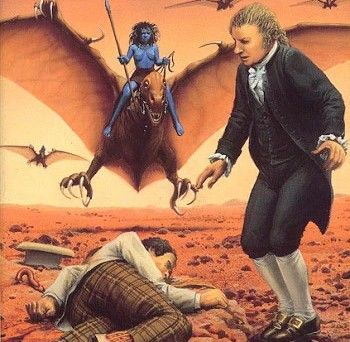
?? (when the Normal Space Universe
starts to leak into the dark universe)
Sapient life can be found in the Anti-Universe. This anti-life was a singular-yet-manifold entity which developed into
individual separate creatures when exposed to Normal Space. The
civilizations that live there are very different from those in
Normal
Space. Most of life on these otherworlds believe that monsters exist in the Normal Space Universe, and the idea of a
breach between the two universes fills them with fear.
Many species
in Normal Space referred to the inhabitants of the Anti-Universe as the
Dark Gods. While they
aren’t literally evil, they would be considered ‘darker’ by
most species from Normal Space. The Gallifreyans name the lords of time in this dark universe the Yssgaroth (a
Gallifrey word for nameless, formless, horror that await just out of
sight). Many cultures in Normal Space classify the Yssgaroth(aka Great Vampires) as one single gestalt Old One/Elder God life-form. But some Time Lords theorize that Yssgaroth weren't a species, but a side effect of the two continual strata trying to coexist.
Others
postulate that they might be a distillation of all the nightmares
from afterlife of Null-Space (N-Space). In truth, the Great Ones are
the lords of time (ie
history incarnate)
of the Spiral Yssgaroth that makes up this dark universe. The Gallifreyan refer to the Yssgaroth's Bloodrealms as the Spiral Yssgaroth.
?? (after the anti-life individualizes)
One of the otherworlds is barren planet covered in diamonds and other jewels that are rare in Normal Space. But
its most interesting mineral is a white rock that is even more
plentiful. Easily crushed under foot, the resulting powder is known
throughout much of Normal Space as the hallucinogenic Dream B.
Breathing in the Dream B dust found on these otherworlds affect
humanoid nervous systems to create an unnatural feeling of general
well-being. This otherworld is inhabited by the pig-like sapient Cun. The Cun are known for
enslaving beings from Normal Space who cross over and using Bapputchin
as beasts of burden. The Cun are the servants the Yssgaroth, some of
whom live deep beneath the surface of the otherworld.
Inside the Anti-matter Universe General Frank/Freddie Force and his Antimatter men work for the Guardian of Order. The name ‘Force’ refers to the force of law they are genetically programmed to enforce. This force of Law makes no allowances for redemption or rehabilitation. They see the uncertainty of the future, and empathy as being an intrinsic threat to them. They view the Doctor as an agent for the Guardian of Chaos.
-100,500,000 (100,500,000 years before the Eye of Harmony / 502,000 years before manned spaceflight)
The beginnings of the first Shobogan led civilization. This is the first civilization as we understand the term.
-8,013,900 (3,650 before hyper-drive)
The walled cities of Gallifrey become the capitols of various city states that are ruled by City Warlords.
The original Shobogans of ancient times evolved powerful telepathic abilities due to their exposure to the Untempered Schism. Adult Shobogans were much more powerful telepaths then modern Gallifreyans, and the adult minds of the planet were in constant telepathic entrelacement due to an organ located in their hypothalamus. Entrelacement allows the mutual transfer of emotions and large amounts of information very quickly. Shobogans often won’t bother to talk out loud during conversations – they just use telepathy. People who know each other well can sense each other’s experiences from miles away. All of this created a collective consciousness known as the Thought-Pool. Each city develops its own Academia to train the more gifted Shobogans. The Academia's are run by Priests of the Menti Celesti.
-8,013,800 (3,550 years before hyper-drive)
Without time travel to interfere with events, the future is easily predicted. Cause and effect is simple to track and foresee. The ability to see the future becomes an ability that can be attained by female Shobogans. These visionaries developed their powers by staring into the untempered schism, but the development of precognition was extremely rare. Their minds were connected and nearly merged with the Astral Vortex. They could remember the future of specific people, places, and species as easily as their own past. Those women who spent too much time with their minds in the Vortex, became disconnected and catatonic. There are weak-points in space time that seem to be created by psionic effects of worship. When time sensitives interact with these small ruptures they can become full blown time fissures. In the City of Prydos the Order of the Sisterhood gains such power and foresight that it comes to dominate the cities of Gallifrey's southern continent.
The Crevasse of Memories That Will Be
-99,998,000? (not to long before Tecteun's first flight / 1250 years before hyper-drive / an aeon before the Curse) The
Pythia is The Symbol of the planet's fertility, Mouthpiece of the
Gods, and Guardian of the Great Pythian Book of Future Legends. The
word ‘Gallifrey’ means ‘they who walk in shadows between science and
magic.’ Given that the Pythia was considered to be the embodiment of
the planet, its likely that the Pythia as the one being referred to by the name. Like all life
in Universe, they had incredible life-spans. The Cavern of Prophecy
will be the heart of the Gallifreyan Empire. To see the future, a
Pythia sits in a wicker cage in the Cavern of Prophecy, under the
adytum of the Temple. She is suspended over the Crevasse of Memories
That Will Be. The smoky vapors from the Crevasse allow her to achieve
the state of clairvoyant and the state of clairaudiant. Humanoids
exposed to volcanic gases emitted by a future space-time crack can
produce prophecies of the short term future with a great deal of
accuracy. Longer term visions are also possible. They can read the
memories of a person they make eye contact with. However they will be
blind to any event directly triggered by the actual advent of the
space-time crack. It is likely that all of this applies to the Pythia. The Pythia can see the past by gazing into transparent star glass. Legend states
that constrictor snakes lived withing the Crevasse. It’s possible that the crevice of
Memories That Will Be could be the retro-active result of some future
crack in space-time. The Constitution requires that the Pythia name her successor. The
Court of Principals governs under the Pythia.
The Councilors of this court form a meritocracy. The Order of the Pythia will stand for an aeon (a hundreds of millions to billions of years).
The Great Pythian Book of Future Legends
recorded the prophecies of each Pythia. All truly impressive victories
for the Empire are foretold in the Book of Future Legends. The
Amphisbaena is a terrible beast described in the Book of Future
Legends. The book might also have predicted that a vampire would
be entombed on Ravalox and rise to lead his people as the Vampire
Messiah. Cadets at the Academia memorize the Book of Future Legends as
part of their training.
??
(well before Rassilon was born)
The
Age of the Pythias beings with the rule of City by the First Pythia. The Age of the Pythias
The ancient chrono-scroll writers never revealed
their names.
The Gallifreyans makes scientific discoveries at a tremendous pace and they move quickly through the
Iron to the Steel Ages.
-11,010,007
The last Population III star, Qqaba, ignites.
-10,000,000??
(millions, possibly billions of years before the
time of the Doctor / before there were any Time Lords / before Rassilon
/ after a stone ring was constructed around the Schism)
?
Gallifrey masters gunpowder
and become a Level 3 society.
??
(the Gallifreyans are described a primitive /
Shobogans often cover long distances by walking / they seem to be
familier with explosives / a few centuries after
the beginning of the Rutan-Sontaran War from Starn's POV) 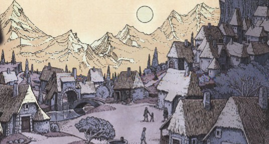
Old Girl:
Seven
8-year-old Gallifreyans are sacrificed to the Untempered Schism by the
Time Sentinels of the Post Time War era. Their artron energy becomes
trapped
on
the Earth. One of the
more effective ways of force probability into the desired shape is to
use the power of sacrifice. This can be done by sacrificing others or by
the magick wielder themselves.
The
Three Brothers Gruff: The brothers Carl, Meklan,
and Naze Gruff are captured by the Sontaran (Kaveetch?) named Starn,
who experiments on them to determine if Gallifrey can be easily
conquered. The brothers kill Starn before he can make his report
to the Sontaran Assessment Survey. This story becomes a popular
fairytale told to time-tots. Given that Starn is at war with the Rutans
and has interacted with humans, it seems likely that he has been sent back in time to facilitate and invasion of time.
A Gallifreyan Village
?
Gallifrey masters steam power
and become a Level 4 society.
??
Gallifrey had
an economy phase.
??
(before making
first contact with aliens)
The
Gingerbread Trap: Malkus and Everlyne encounter a Krillitane who ship
had broken down and been forced to land on Gallifrey. The Krillitane
tries to force them to help repair it’s ship but the children kill
it. This story becomes a popular fairytale told to time-tots.
??
(long before
the development of space travel)
Andiba and the
Four Slitheen: Four criminal Raxacoricofallapatorians visit Gallifrey
in an attempt to mine madranite and other rare minerals. Andiba and
Vash destroy them with the vinegar that their home town is so famous
for. This story becomes a popular fairytale told to time-tots.
With the advent of electricity, Gallifrey
quickly moves from steam to atomic power. As an industrialized
level 4 society
the atmosphere becomes quite polluted. Domes protect the cities from the toxins in the air.
?
(near the beginning of time)
The
Teuthoidians are one of the first species to develop manned
space-flight.
The
Shobogans are content to use their technology to observe the cosmos and
archive their findings. After multiple alien invasions, Gallifrey could be suffering from a 'Dark Forest'. By this point, Gallifrey has dried out to the point where it is very difficult to for the Outsiders to survive. All
the Shobogans living in the cities of Gallifrey have all the food,
shelter, healthcare, and other support that they could ever need. Romance and families is unpopular with most Shobogans in the cities, but popular among outsiders. Some claim that everyone had a sense of purpose and fulfilling jobs. But some Shobogans choose to struggle to live outside.
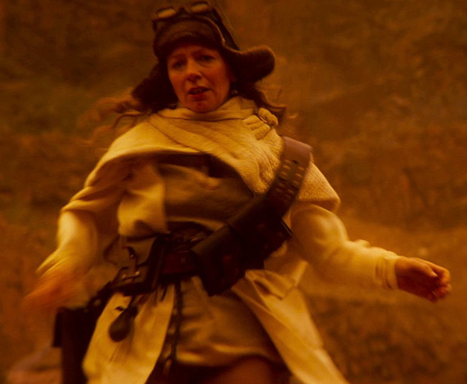
The Bad Mother: The Shobogan Tecteun was an explorer, scientist, and Hero. Her last name might have been Awsok. Tecteun doesn’t believe is souls or the
supernatural and believes that a scientist should be emotionless and
resolute. She is meticulous,
brilliant, harsh, and amoral. Tecteun
is obsessed with pushing the limits of science and exploration. Tecteun treats everything in her life
like an experiment, including her friends, Gallifrey, the Time Lords, and the
Universe. She sees herself as an explorer and wants to make discoveries that will change the Shobogan people. She is
confident that the Shobogans will thank her for these wonders. Despite this, several
times in Tecteun’s life, the High Council will judge her methods to be
unethical. After this she begins to keep her experiments and research
secret. Before leaving Gallifrey, Tectuen spends all her time researching. She never takes a lover or has any children.
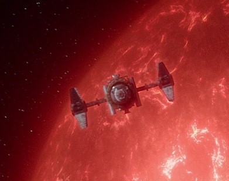 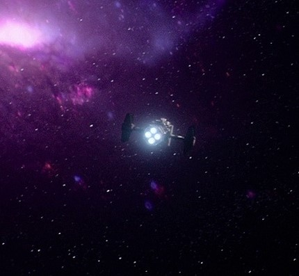
-8,010,650
(200 years after space flight)
?
(after dominating the Tersurrans) ?
(billions of years after
the Big Bang)
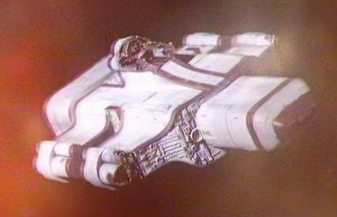 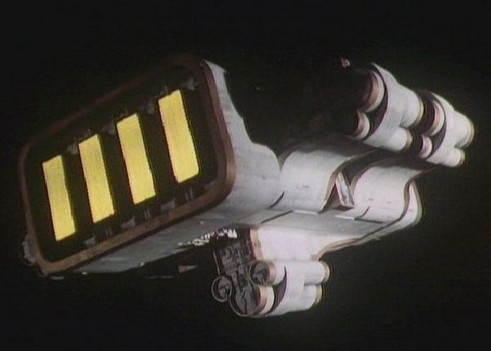
-8,010,250
(10,250 years before the Empire)
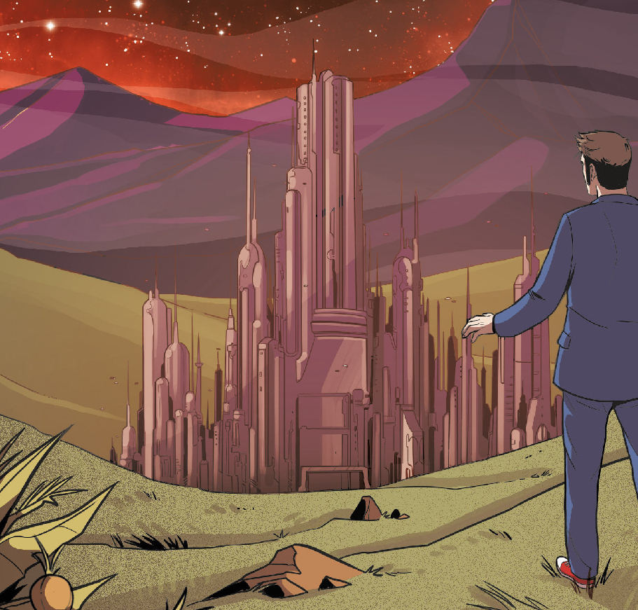
-8,010,000
(millions of years before TID / 250 after hyper-drive)
??
(before The Five Doctors)
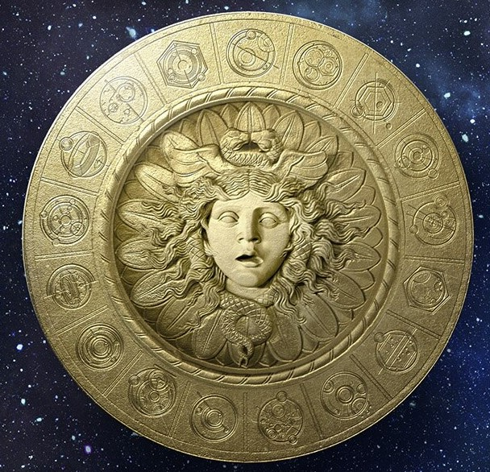
-8,000,000
~
(They've had absolute power for 10,000,000 years /
10 million years before TID)
-8,009,000~
(relatively quickly after inventing starships)
-4,580,000??
The
Reliquary of Accession holds the epiphany scrolls of Soneuramos. These
ancient sacraments were entrusted to the 217 Pythia in the sacred
firelake of Rag-Finish. ??
An ancient Pythian text cautions
"In my duty to defend existence I became mortality itself, the slayer
of spheres."
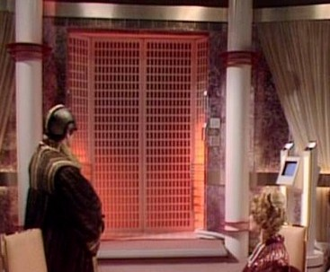
-4,000,000,000? (when the Universe is less then half the size
/ long before 4000 BC /
before they give up on technology /
about 6,800,000,000 BC)
-3,990,000??
(before the enlightenment of the Time Lords) ??
(before the Omega is lost)
-3,420,000?? (During time of the 290th Pythia)
-3,420,000??
(before the Rassilon Era / billions of years before the 20th century /
at the time of the Colonialist and Restorationists)
-3,420,000??
(during
the Dark Times / before the Eye of Harmony / the first several billion
years of the Universe / after the Shobogans begin exploring space)
- 8,000,000? (8,000,000 years before the Intuitive Revolution / 10,000,000 years before Trial of a Time Lord / during the time of the 389 Pythia / 3 to 8 million years before the Eye of Harmony)
The Gallifreyans develop manned space flight and interplanetary probes. Tecteun was the first to develop a ship with space travel capabilities and she was the first Gallifreyan to travel in space. Her ship was primitive and dangerous. Tecteun and other Heroes manage single orbits in one person tin canisters. The Shobogans
become a Level 5 society. Like all level 5 civilizations the
believe that History is written by the victors. At the
time Tecteun began her voyages, Gallifrey was considered to be
unimportant and was sparsely populated - an ordinary planet most of the cosmos had never heard of.
The
Gallifreyans begin launching manned interstellar probes. Tecteun left Gallifrey to explore the universe. She hopes to see what lies beyond the edge of the Universe. Did
Tecteun develop the first ship capable of reaching interstellar space based on
the ships various alien visitors had left on Gallifey? At this point in Gallifrey’s history, the Shobogans (like all life forms) were immortal baring accidents. Tecteun could have travelled and explored the cosmos for millions of years. While Gallifrey developed into an intergalactic empire, Tecteun explored worlds in the Stellian Galaxy as well as worlds in other galaxies. Did
she keep modifying her ship with the alien technology she discovered on
her journey – enough to even reach other galaxies? In addition, if her
ship travelled at relativistic velocities, then a voyage of a few years
for Tecteun might take millions of years for the people of Gallifrey.
-8,010,550 (300 years before Hyper-drive)
The first Pythia unifies the entire planet Gallifrey under her rule. The Gallifreyans master their entire planet, making them a Type 1 Civilization.
The Shobogans
master their entire solar system, making them a Type 2
Civilization.
The first civilized species to evolve begin to travel
the stars. They will be known as the Fledgling Empires.
The ratio 1 to 812 is key to understanding the 12 dimensional nature of quantum string theory. Knowledge
of this is fundamental to the development of hyper-drives. Gallifreyan ships were now capable of making light-jumps to travel interstellar distances.
Having discovered
quantum space travel
the Gallifreyans reach Level 6.
When the Time Lords discovered the 1:812 ratio, many of the populace saw it as a conclusive proof of the existence of
the Old Gods. But just as many saw it as conclusive proof that the gods could never exist. Even in the
Doctor’s time the Time Lords still don’t know if there is truly is an omniscient God governing the Universe.
The ancient Capitol
The City of Gallifrey (which will become Capitol City) is reconstructed by order of the Pythia. The city is a hodge-podge of various architectural styles. The buildings
are made of stone and are decorated with sculpted bird wings and
curlicues. Archways and overwalks are tangled with pillars. The
city is filled with temples and amphitheatres. The Pythia's temple is
in the
west district of the City. The City has merchant port and a space
harbor - Both of which are located next to the Academia. The Merchant
Port is filled with aliens selling goods. The Court of Principals,
and the Krewa Prospect other locations in the City. There
are pianalaika bands in the streets and the City is quite noisy. Large
amounts of psionic focus and
excitement among the Shobogans causes patterns of lights in the clouds.
They use panoptics (probably flying cameras?) to collect video from
throughout the City.
The City/Capitol might be named Gallifrey. Some sources call it Sage City (possibly a name from the era of the Pythia?). Other sources call it the Grey City.
The
first Age of the Pythias, the Time of Empire, begins when the
first Pythia creates the Gallifreyan Empire.
The Pythia is the Guardian, Embodiment, and Crown of the Gallifreyan Empire. It
is an empire of the sword that will conquer planet after planet. The
Chancellery Watch is formed as part of the Council Police. The Council Police receives most of the funding from the Temple Welfare Trust. This helps ensure loyalty to the Pythia.
The people of Gallifrey begin using methods of
transport that surpass basic starships and space stations.
Modern Gallifreyan Transmat
The Gallifreyans surpass transmat technology by inventing transduction technology. They are now an advanced interstellar Level 7 Society.
There was a theory that stated
that if all the magic of the universe became science and everything
about everything was understood then all the science and technology of
the universe would fail.
The 254th Pythia declare that all technology should
be abandoned
(or maybe technological advances are forbidden).
The Gallifreyans, Erogem, Daemons, and eventualy even the Great Vampires all use similar arcane technology. The Daemons were
early masters of space travel, psionic forces, and thermodynamic
dimensional manipulation.
The entire
Sisterhood of the Pythia is forbidden from traveling in aircars.
The Gallifreyans split into two major factions: The
Colonialist (who believe that Gallifrey's eco-system has been killed
and they should begin again on a new world), and the Restorationists
(who believe that the planet can be brought back to life). The
290th Pythia favors both factions with ships and funding to accomplish
their goals. Many of the colony ships that left Gallifrey ended
up becoming "lost" and founding several of that Galaxy's ancient
humanoid civilizations. This might have included the Union of Traken,
the Logopolitans, and the Elders?
The Pythia calls
this era
the Bright Past. It will last untill the beginning of the Rassilon Era.
Time moves as a harmonious and elegant parabola as
elder species and fledgling empires progress. Without time travel to
interfere with events, the future is easily predicted. Cause and effect is simple to track and foresee.
The 389th Pythia orders that the massive Empire
Fleet be constructed and sent into space to annex all civilizations of
beauty or sophistication into the Glorious Gallifreyan Empire. Deployment of the Empire Fleet require the Pythia’s seal. A tidal wave of Gallifreyans spread across the cosmos like a virus. They saw it as their duty to sheperd the other species they discovered. This becomes known as the War of Enlightenment. Over the course of the Empire a million starships will deliver their spoils to Gallifrey. The Legendary Hero Ao gives the 389th Pythia a jeweled talisman.
Tales of great Gallifreyan Generals and Colony Leaders abound in the Dark Times.
??
The Constellation of Ao is named after the famous Hero Ao (or maybe this happened the other way around?). ??
(when the
multiverse is young) ??
(at the time
of the most ancient of Gallifreyans
/ probably before the creation of Shada)
-10,000 The Logistomancer of
A32K foresees an Empire of Logic that lasts for 10,000 years.
-5,023~
(before Time's Crucible / 5000 years before the Qqaba mission / ~3,500,000,000 BC)
Shobogan culture is similar
to Earth's Hellenic Greece period and Old High Gallifreyan has several letters that are similar to Greek. The Gallifreyan Empire focuses most of its energies on exploring undeveloped planets. The Gallifreyans convince most alien races to view them as gods. They become known as the Space Lords of Gallifrey. The military of the Space Lords is organized into battalions.
Space Lords/Officers generally wear red and gold armored uniforms, often with robes. Modern
Time Lord ceremonial collars are actually imitations of the battle
collars worn by ancient Gallifreyans when going into combat. These are
made of a metal-marble compound and inscribed with the seal of the
Great Houses. They wear warrior armor with a pointed
skullcap and often carry a two-handed bejewelled sword shaped like a
massive machete. Soldiers wear armor with a deep red color. The
Generals plan their strategies from the War Council room located
beneath the Capitol. Commanders have the right to execute their
officers and troops if they see fit. The
Empire is governed by a Pythia. It is believed that the Menti Celesti
placed the Pythia in charge of all Shobogans. The Pythia is the
Guardian,
Embodiment, and Crown of the Gallifreyan Empire. She is also The
Symbol of the planet's fertility, Mouthpiece of the Gods, and Guardian
of the Great Book of Future Legends. The Pythia is addressed as ‘Your Excellency’ and she might have had the title Majestrix. The
Constitution states that the Pythia IS Gallifrey. It also requires that
each Pythia name her successor. Traditionally most of the Pythia’s were
appointed from the same family. All
security systems on Gallifrey can be overridden and controlled by the
Pythia. Amulets and talisman hang from golden chains on the Pythia’s
robe. The Pythia has a personal physician. Attendants of the Pythian Order wear rust red robes and most have red hair. Wandering Seers can be found traveling from town to town. Pythian seers eat fish tongues.
Prayer and devotions take place in the temple in the
evening. Petitioners (most wanting miracles) wait in the temple court yard. Men are expected to wear fur coats with deep hoods that obscure their faces when entering the Hall of the Gods and having an audience with the Pythia. The
Adepts say to a petitioner (who is granted an audience with the Pythia)
“Clean let the hearts be of each Seeker.” The petitioner replies
with “So shall we never doubt.” A copper sanctum gate leads to the
inner temple. Under the adytum of Temple is the Cavern of Memories. There are granite walls and pillars in this sanctum, with steps leading to the Adytum. One of the pillars is hollow so that the Pythia's bodyguard can hide, waiting to deal with threats. To
see the future, the Pythia sits in a wicker cage, suspended over the Crevasse of Memories That Will Be. The smoky vapors allow her to achieve the state of clairvoyant
and the state of clairaudiant. The Pythia can see the past by gazing into transparent star glass. In this era the irrational force
of Odic Energy
was plentiful. Odic Energy made miraculous healing and acts of prophecy
possible. There are soothsayers who try to read a person’s future in
tea leaves. Soothsayers and wizards dispense magick crystals, herbs,
spells, and equations to their customers. Humanoids
exposed to volcanic gases emitted by a future space-time crack can
produce prophecies of the short term future with a great deal of
accuracy. Longer term visions are also possible. They can read the
memories of a person they make eye contact with. However they will be
blind to any event directly triggered by the actual advent of the
space-time crack. It is likely that all of this applies to the Pythia. There
are weak-points in space time that seem to be created by psionic
effects of worship. When time sensitives interact with these small
ruptures they can become full blown time fissures. The
Shobogans see their heritage as the Bright Past and their future is
guided by the Pythian Book of Future Legends. The ‘Hand of Osuda’ the
hollowed hand of Fate. Virtually everyone believes in, and prays to, the gods know as the Menti Celesti (heavenly minds). These Gods include Time, Death, and Pain. Sacrifices
(to regain the favor of the goddesses and for other reasons) are made
on alters. Even Shobogans are sometimes sacrificed in the Temple. Curtained alcoves framed with woven wood and flowers serve
as Shrines. Votive gifts and offerings are placed on there to gain
favor with the Menti Celesti. In times of crisis the Shobogans pray to
the Menti Celesti for salvation, But most agree that the goddesses only
observe and do not interfere. Ancient
Gallifreyans belive that Evil can be used to repel Evil. Religious-military imagery of the Time of Chaos includes armored
cherubs and archways that don’t actually lead anywhere. The
Moon Pazithi is named after Pazithi the mystic virgin moon goddess.
Pazithi will still be worshipped at the time of the revolution, despite the
moon being covered in mining colonies. The
Amphisbaena is a terrible beast described in the Book of Future
Legends. An
ancient Gallifreyan prophacy predicted the eventual coming of a hybrid
of two warring species. This hybrid was destined to conquer Gallifrey,
stand among its ruins, and unravel the Web of Time. The Court of Principals
governs under the Pythia. The Court has a Council made up of
100 Councilors (which
includes at least one Cardinal). The Councilors of this court form a meritocracy. Prelates control individual villages. Gallifrey has a population in the millions at this point. The nobles of Gallifrey have estates in South Gallifrey. Most of the power was held by the matronymic dynasties of the Great Houses. The Council Police (aka the Chancellery Watch) continues to act as law enforcement. The Council Police receives most of the funding from the Temple Welfare Trust. This helps ensure loyalty to the Pythia. People who are convicted of minor crimes work at the suet factories. People who are stoned have their heads put on pikes. The Mythic Schools teach the
children. They have a very ‘one size fits all’ approach to
education and emphesize religious teachings. Older Gallifreyans are
educated at the
Academia which is located in the City's Olmesian Quarter. The Academia
is controlled by the Court of Principals. The
core curriculum focuses on Cosmic Science, while items related to the
rest of the Universe's history, species, and cultures is considered to
be General Studies. This includes philosophy and
strategy. Academia Endurance Courses cover sports, swordplay, and
military maneuvers. Cadets memorize the Book of Future Legends as part
of their training. Practicals are given to test a student’s knowledge of a subject. Students are called cadets and live in barrack rooms. Military Cadets are called Young Heroes. Military
Officers and Generals are
called Heroes. Some Shobogans could, with extensive training, be taught to shield their minds and thoughts from
others. Others are born knowing how to do this instinctively. In either case these Shobogans are known as
Individuals. The Individuals were considered, by some, to be a cult. Children who were natural born Individuals instinctively know how to navigate the
Astral Vortex. But almost all of these children forget how to do this as they
become adults. All of Gallifrey's Heroes and great philosophers were Individuals. Gallifreyans
have abolished racism. Currency includes gold coins, treazants, depaks,
and dumplings. A few Treazants can buy a cheap slave. Traders
traditionally wear furs. They belive that their art transcends the
imagination of lesser species. Shobogans from this time use ivory as a
decorative
material. Healers wear white tunics with red jerkins. The Gallifreyans speak and write Old High Gallifreyan
(10,000,000 letters in alphabet), and Middle Gallifreyan.
Vox
Relators are the closest thing to a free press, but very little
emphasis is made on recording and documenting Gallifrey's history.
Instead, they focus almost entirely on documenting the explorations and
conquests of other worlds.
It is unthinkable to marry at 16. The bodies of the dead were usualy burned in a pyre.
The
Gallifreyans form an alliance with several of the Fledgling Empires, such as the Qwerm, the Sentients,
the Modulars, the Recursives, and the Binaries.
Frozen Beauty:
Reaching other galaxies takes Gallifreyan ships centuries or more. The
Leviathan Fleet is filled with generation ships where people live out
multiple generations before the fleet would reach the new galaxy.
But most ships rely on cryogenic caskets to keep the crew alive for the
centuries the trip will take. These ships had their control deck
in the forward section of the ship. Gallifreyans use cybernetic
implants to provide them with instant access to information.
Laser blasters are a common side arm in this era. Captain Glammis
commands the Stellar Fire, which sets out for Andromeda. This is
the fastest ship, yet constructed, and 50 years later it has reached
the frontier worlds of Andromeda. But an engine malfunction
causes the ship to crash. The captain’s brother, Abadon Glammis
eventually becomes the richest person in the Stellian Galaxy (and
several other galaxies as well). He uses his money to assemble a
rescue ship. After 100 years of searching the rescue ship found
the Stellar Fire and saved it’s still frozen crew and captain from the
Wirrn. This story becomes a popular fairtale told to time-tots.
The Gallifreyan prison planet of New Peerlessness
was built by the most ancient of Gallifreyans. If one heads from the
Earth, through the constellation of Sagittarius, and to two galaxies
beyond the Milky Way, one will find the world. The world is surrounded
by impenetrable force fields and was used to imprison Gallifreyans
during the ancient times. The planet is stunningly beautiful, with
meadows and gentle hills. There are no animals, instead plants and
other life fulfills the ecological niche of birds and insects. The
planet negates pain and mental damage allowing its prisoners to live
peacefully. But it doesn’t actually heal any injuries. The world
recognizes the Doctor and allows him and his TARDIS to come and go as
they please. By the time of the 7th Doctor New Peerlessness is no
longer in use (probably because of the creation of Shada).
By this time, Gallifrey is the center of the Gallifreyan Empire.
The Gallifreyan Empire
-5000??
(when their galactic empire is at its height / thousands of years before the seven keys were created)
The Age of the Masters (of Karn) begins. The metal walled Citadel of Karn is the scientific and technological
center of the Gallifreyan Empire.
This is one of the mightiest empires in the history of
galaxy. Hundreds of worlds are full members of the Empire. The
Citadel is powered by Karn’s sun and is administered by a massive
computer that is charged with repairing and protecting the secrets of
the Empire. The computer is designed to last forever and its databanks
hold all the knowledge of the Masters. The city makes extensive use of
force-fields. The city has catacombs beneath the city as well as
maintenance tunnels that can provide access to the outside of the
city. The brilliant engineers, artificers, and scientists who work there hold titles of King and Queens, and are known as the Masters of Karn. The Masters are ruled by the Grand Master of Karn who rules from the Great Hall. While
the Masters of Karn are arrogant and over-confident, they aren't
actually evil. If it was the will of the majority, the Grand Master of Karn could be dethroned. They construct many fantastic weapons and other machines. The Karnians of this world will live in peace and prosperity for thousands of years.
-5,000
(3rd Century Gallifrey dating)
The Individual and great philosopher Pelatov writes Pelatov's Collected
Sageries.
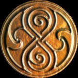
-5000?? (thousands of years before the Time Lords came into being) -3000?? (millennia before Rassilon is born)
The Vogans create a seal depicting a stylized version of an ouroboros (i.e. a garter eating its own tale) that has twisted into an infinity
symbol. They use this future Seal of Rassilon as their
own.
The Higher
Races (possibly the Old Ones, the Parallel Sect, and the Phaeron?) begin a war against each other. Several galaxies are burned in this conflict.
-3000??
(before
the Time Scoop / as new stars are being born / early in the Universe's life / a few thousand years before the fall of most of these empires)
The Fledgling Empires war amongst
themselves. Gallifrey is now one of the many Fledgling Empires
competing and fighting for domination of space and to shape the future of the cosmos.
It is a time of horrific violence. The technology and science of the fledgling empires was all approximately equal. Some legends say that the Space Lords were corrupt and cruel. Tales of great Gallifreyan Generals and Colony Leaders abound in the Dark Times. Despite this, the other Fledgling Empires consider the 'Space Lords of Gallifrey' to be one of the less significant empires. This could be the begining of the Eternal War.
?? (probably during, or before, the Parallel Sect pioneer their work)
The Lampreys
are sentient beings that live in the Spiral at the axis of the Space
Time Vortex and feed off of chronon energy. Under certain
conditions they can escape into the rest of the universe. The Time
Lords investigate parallel universes and in the process meddle
with the Lampreys within the Vortex. It is possible that this meddling
is what created all the parallel universes in the first place.
Like the Omniverse that spawned it, the 3rd Universe inturn begins to bud its own universes. This budding process was probably an act of deliberate creation by sentient beings.
This multiverse exists in a state of quantum superposition.
The
Anchoring of the Eye of Harmony and other actions taken by the Time
Lords during the Time of Legend retroactively impose rationality and
science onto the Third Universe, creating an actual Retro-History that exists above the Priorverse of pre-history and pre-time. It is possible that the multiverse's superpostion could
be violently collapsed, turning the multiverse into a single
crystalized web of time.
NOTE: There is some evidence to support the idea that the Doctor Who takes place in the same Universe as the Hitch-Hiker's Guide to the Galaxy. Most notably the book Origins of the Universe by Oolon Coluphid appears to exist in both franchises. However the Earth is destroy in every single timeline in the book Mostly Harmless which means that something more complex than just an alternate timeline is separating the two Multiverses.
??
(during the Dark Times / probably before the Time
Lords)
The Higher Evolutionaries known as the Parallel Sect were
dimensional pioneers who could cross to different universes and dimensions at will. They had symbiotic nuclei and
were considered to be a myth on many worlds including Gallifrey. They were said to have created a web of all the parallel
timelines.
?? (before the time of Rassilon / probably
after the Time Program started)
Bio-Data-Extracts
are taken from Gallifreyans (such as Omega).
?? (by the time Tecteun returned to Gallifrey)
Circular Gallifreyan begins being
used by the Shobogans.
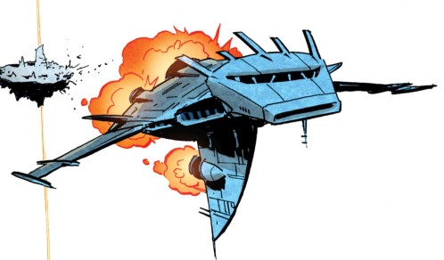
??
(before the first Otherstide)
A Gallifreyan Ship
Astrafoils
begin being used by the Shobogans for space travel.
?? (before Tecteun returns to Gallifrey)
Shobogan children might regularly be given nutrition pills.
-600?? (before the principles of time travel were discovered)
Shobogan philosophers begin daring to argue about existence of god.
This leads scientists to declare that the Menti Celesti and fate were
just superstitions and that Shobogans could shape their own future. All
of this leads to numerous arguments and debates about what the goals of
the Empire should be if there was no manifest destiny.
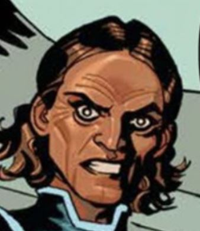
-550~?? (Rassilon is young
when he fights the Vampires / the female Rassilon in Monstrous Beauty is Rassilon’s first body)
The First Age of Rassilon begins (also known as the Early Rassilon Era): Rassilon
(full name Rassil Onasti Prydonius)
is born. According to the myths of some worlds, Vala the Herborist was mother of Rassilon, and later a legendary Time Lord Solar Engineer. Rassilon's father is a suet shredder. Her mother (or wife) was probably
a member of the House Fordfarding (though it's name will later be changed to the House of Rassilon). Rassilon’s house isn’t that far from the Capitol. The house has gardens with trimmed hedges and graveled driveways. Susan will be a decedent of Rassilon.
Rassilon will be considered
to be the single greatest figure in Time Lord History
and the Father of Gallifrey. Rassilon will become a famous architect and the greatest engineer of his day. The Other will claim that Rassilon is the greatest force-field engineer in the history of the Universe. When she is young, Rassilon’s friends will call her Rass.
?? The Kotturuh become known across the cosmos as the Bringers of Death as they travel the cosmos imposing lifespans on every species in the in the Universe. But in some cases they simply destroy entire species. Almost no species could resist their influence.
??
(possibly before the Kotturuh drove the Racnoss into hibernation)
The
Eternals do escape the Kotturuh by fleeing. But, in doing so, they lose
their creativity and ability to create self fulfillment. They have been
running ever since.
??
(possibly after the Eternals flee the Kotturuh)
The Racnoss went into hibernation to avoid the Kotturuh.
?? (possibly
after the Racnoss enter hibernation)
The Osirans attempt to flee their homeworld to try to escape the Kotturuh – but they are still given a lifespan. Sutekh made a deal with the Kotturuh to gain their ability to bring death to entire species.
??
(long before the Milky Way was fully formed / possibly after the Time Lords came into existance)
The Time Lords (from the future?) warned
the Phaeron when a renegade Phaeron began to corrupt their minds. In
response the Phaeron closed down their wormhole network and sacrificed
their entire species in order to trap the Glamour in a time well
leading to Deep Time.
-540?? (when Rassilon is young and naive / millennia after the war started)
The galaxy burning war between
the Higher Races ends when a psychic focusing device known as the The
Art forces them to confront their own aggression.
??
(probably earlier then 4,000,000 BC / before all time travel / possibly less then 240,000 BC / must be after the Racnoss ship forms the nucleus of Earth)
The
humanoid Laima live on the drab, and, hot planet Trion (located near
the center of Mutter's Spiral, about 20,000 light years from the
Earth). The world will come to be known as Tri-on because it will
be inhabited by Laima, Slots, and the Gallifreyan Clansfolk (the Tractators who call this world home appear to be ignored). The word "Laimee" means happiness. They have great knowledge and power and discover the secret of Unified Field Theory. This
theory is also known as the Skasas Paradigm or the God Maker. It
unlocks how the universe works, giving the user complete control of the
basic building blocks of the universe (time, space, matter).
The Unified Field Theory gave the Laima the ability to travel through
time and to alternate universes. But to traverse these dimensions, they
needed to stop the gravitational constant from decreasing. Desiring to
travel to the next highest Universe (a dimension of Thought), they
create the Gravity Generator Control Unit. The
Laima leave this Universe and the Slots will remain behind to care for
the central column that alows the Laima to occasionally return Normal
Space and visit their homeworld. Those that return have highly developed morals but under developed bodies.
The Gravity Generator Control Unit of the Laima
This device stops the decay of the
Gravitational Constant and stabilizes it at 6.672x10^-11 N (m/kg)^2
throughout the universe.
The Gravity Generator Control Unit is placed on
Sol III, a world awkwardly placed on one of the arms of Mutter's
Stellian Spiral Galaxy. This world might have been choosen because the Solar System was created in an anti-temporal matter triggered supernova. This world will eventually become known as The
Earth.
The presence of the Gravity Control Unit makes physics operate differently around Earth (this is why it took humans so long time to discover FTL drive). The world's effect on the laws of physics attracts the attentions of several other species and serves as a catalyst for the hundreds of alien invasions that Earth experiences throughout the Humanian Era. Indeed Earth will become the most frequently attacked, colonized, exploited, and enslaved world in the 5 Galaxies.
According to Gallifrey's records, Sol III is one of the only worlds in the cosmos to have the word 'the' before its name (ie The Earth). Despite being a vastly different size, the Earth has the same length of day and year, same gravity, same type of star, and same orbital distance from that star as Gallifrey.
The Time Lords seen the Tellurians (aka Humans) of the Earth as a race of warriors. The Matrix also predicts that near the end of the Universe (Event 2), the time travel technology of the Tellurians (aka Humans), will surpass the Time Lords.
All of this makes Earth an important Temporal Nexus World (like Solos, Tylers Folly, and possibly Gallifrey) and its history quickly becomes littered with fixed points in time. Many Time Lords will keep a close eye on Earth for these reasons, though some Time Lords (including the Doctor in his 6th incarnation) don't know that the Gravity Control Unit is on Earth.
The Earth's gravity control unit might be buried beneath the Indian ocean's gravity distortion (this is a real distortion that cause a deformation in the ocean). Or it might be located at Stonehenge (where the Monk built a monument) as it was the first place Tanis seized when he attacked the Earth. An Yssgaroth skeleton was left beneath Stonehenge.
Could the god known as Time have been upset at the Lamia for locking down Gravity? Is this why she becomes so destructive and Rassilon has to trap her on the planet Time?
??
(during the Dark Times / probably before the Time
Lords / ages ago)
The Higher Evolutionaries known as the Parallel Sect vanish.
??
(aeons ago / millions of years ago / after centuries
of war / after imprisoning Valdemar)
According to legend, after centuries of war, the dark god
Valdemar is defeated by the other Great Old Ones. The Old
Ones then vanish from the cosmos. This disappearance will be described as the 6th Greatest
Mystery in the Universe. In reality the Old Ones has opened a breach
into a higher dimension. A breach that kept expanding until Valdemar
sacrificed himself to contain it, leaving him trapped forever.
??
(after the Kotturuh begin their Design / probably before the Intuitive Revolution)
As the psychic
background radiation energy
levels fade, the life-forms that depended on it started to die
out.
-535??
(after the Gravity Control Unit is operational / before the Time
Program begins / after the debates about the existance of fate and the
gods begin)
Rassilon and other Shobogan mathematicians, philosophers, physicists, and fantasists realize that time travel is a theoretical possibility.
??
(almost certainly after the Lamia fix the gravitational constant)
The Archons become the lords of Time in this new universe. The Archon Science Mages created TARDIS
technology.
The Timehenges of the Archons were scattered across the universe (including the Earth). The original TARDIS Seeds were created by Archon Science Mages. These seeds were probably used to enable
the Timehenges.
?? Rassilon was the first Gallifreyan to realize that within the exo-space time continuum matter and energy are interchangeable via the equation E = MC^3.
?? (towards the end of the Dark Times
/ before Blind Fury)
The Krafayis begin swarming across
the cosmos. Time
Lord children’s stories describe the Krafayis as being indiscriminate
killers. But this is all hype. They are carrion eaters. They are
merciless to other members of their flock that become ill. Their
language is very hard to translate, even using Time Lord technology.
-530?? (1000 years before they master time travel / before most species have developed space travel)
With a basic understanding of temporal
science, the Gallifreyans become a Level 8 Society. While the Nestenes, the Mandragora Helix, the Carrionites, the Eternals, the Weeping Angels, the Vashta Narada, and the Krafayis
focus on the control of space, the Gallifreyans are the only Fledgling Empire to focus on conquest of time. For thousands of years Gallifreyans will
base their time technology on idea that gravity affects all temporal phenomenon. The zeiton ore found on Gallifrey might have been a key part of these early psionic based time travel experiments.
??
(long before the Vampire Wars begin)
The people of
Gallifrey begin using molecular dispersal chambers as a form of
execution for anyone who threatened Gallifrey or its people. Powerful
particle disseminators break the subject’s body into component
molecules and then those particles were dispersed across time and space
(probably using the Vortex).
??
(during the Dark Times / around the time of the first Vampire War)
At this point
in Gallifrey’s history its night sky filled with ragged streams of
colored stars and galaxies that are close enough to take on a
discernible shape to the unaided eye. By the era of the Last Time War,
Gallifrey’s night sky will be black and with widely dispersed pinpricks
of light.
-527??
(before the Vampires are released)
Rassilon originally thought she would need a supernova to make time travel a reality. Rassilon
makes a plan to harnass a star so the Space Lords can access all the
power of the outer planes that lie beyond the continual strata. This
should give them enough power for time travel. She creates a prototype stellar device. It isn't a proper stellar manipulator, but it is the most powerful device the Gallifreyan Empire has ever produced at this point. With the help of an unamed Engineer, the Gallifreyan science vessel known as the Starkiller Class is
designed. With the prototype, a few hundred Starkillers can collapse a
star into a singularity. They might have been golden corkscrew shaped
vessels. Rassilon takes a fleet of hundreds of Starkillers and tests his theory. She takes and Engineer with her (but the Other is not part of this mission).
Note: This mysterious Engineer might have been Omega, but other first hand sources date Omega's youth to having occured within ~270 years of the Intuitive Revolution.
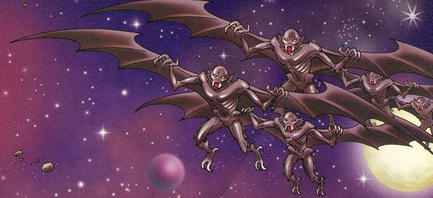
The Yssgaroth
"What we do now we do for the future. For our children. For the sake of Gallifrey, and for time itself."
– Rassilon
Interference: Rassilon's prototype device and a fleet of hundreds of Starkillers, try to create a singularity by activating the device within a yellow star. The experiment fails horribly. Instead of a singularity, the star collapses into a lightless gravastar (not a Black Hole as Rassilon has yet to invent event horizons). This punched a hole in the Vortex that served as a foundation for the star. It creates a gap in history itself. The explosion creates a dent in the space-time continuum which rips opens dimensional holes throughout the cosmos. Some of these tears in space-time are the size of G-type planets. They look like black suns hanging in space. This starts a chain reaction leading to nearby stars also collapsing into gravastars. At the same time, vast tracks of the Yssgaroth's dark universe are devastated by these wormholes. Thousands of the Yssgaroth (aka Great Vampires ) use these dimensional holes to enter N-Space (Normal Space) and swarm across the part of the cosmos that would become the Spiral Politic. The Yssgaroth will later claim that Rassilon effectively banished them from their own dark universe. All the dimensional tears connect to each other. So if you find one, you can use it to visit the others. Few of Rassilon's Starkillers survived the first attack by the Yssgaroth swarms. General Kopyion Liall a Mahajetsu, Lord Defender of the Faith of the Peoples of Gallifrey will later state that the Space Lords never should have been allowed to become the guardians of all of space and time after making this mistake.
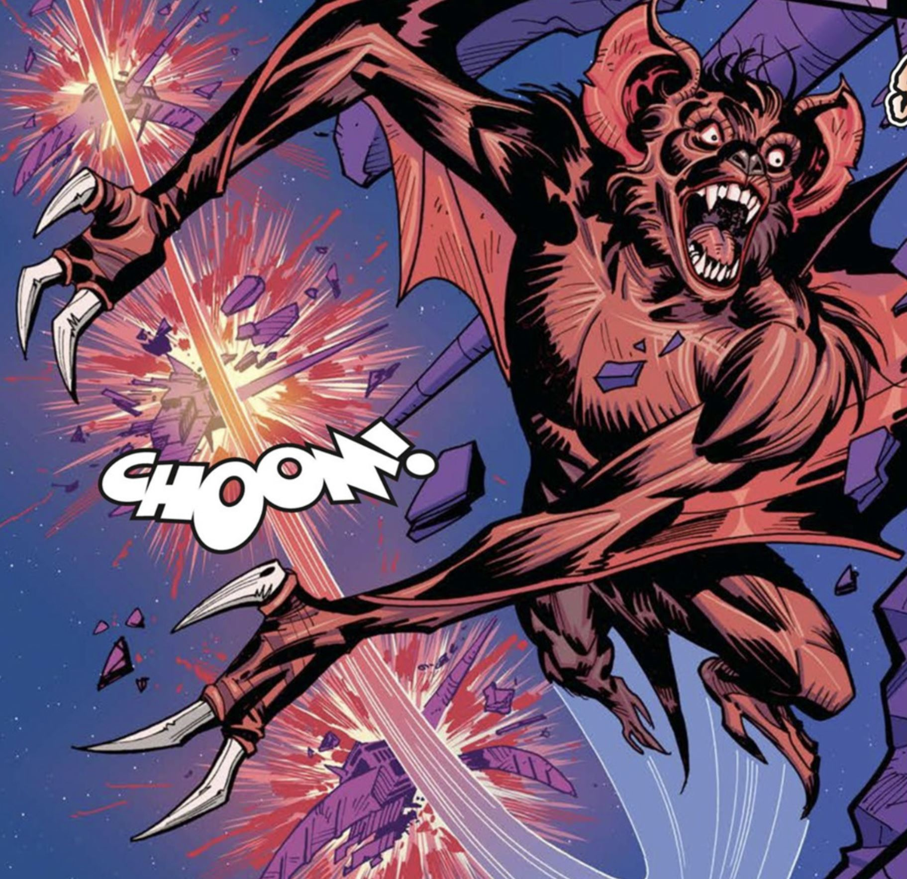
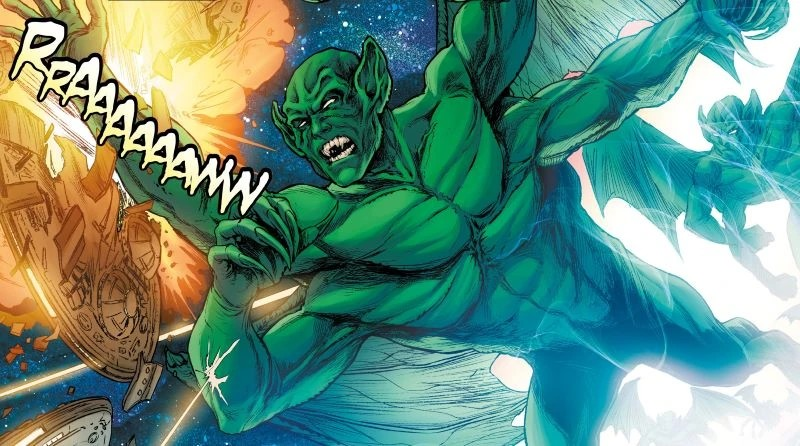
The Bloodrealms of the Yssgaroth
Before Rassilon’s interference, this dark universe (space beneath space / Ante-Universe) was located a safe ‘distance’ from Normal-Space. Now this Anti-Universe ‘brushes up against’ some areas and edges of the Normal Space Universe. The linear temporality and consistent spatiality of Normal Space was equally damaging to fabric of the Anti-Universe. Wherever two realities collide the friction between them excites the atoms of the universes. The Bone Beasts function as antibodies for this excitation. They find it and consume them to try to cleanse the realities. Vast tracks of the Yssgaroth's dark universe are devastated by the dimensional rips created by Rassilon's experiment. The holes appear to all connect to the Nosfera II Galaxy within the Spiral Yssgaroth. If the perfect balance between these two universes was ever too badly disrupted it would cause mass annihilation of both.
People from Normal Space are immortal in this Dark Universe and quickly regenerate if killed. The chaotic atemporality of the dark universe means that visitors from Normal Space often end up experiancing years of 'time' while returning to their home universe moments after they left. A Normal Space being, who had a strong enough will, could even create objects and spaces within the Anti-Universe using only the force of their own mind.
Since the Yssgaroth are the lords of time (ie history incarnate) of their "dark universe," they contaminate this universe's life and history simply by interacting with this universe's Time Lords. This contamination takes the form of the Vampire Factor (aka the V-Factor) which infects all life that comes in contact with. In its pure form, ante-matter hybridizes the genetic structure, regressing life-forms down their evolutionary line. It acts like a parasitic disease, killing the subject and making their body not-dead and, effectively, immortal. The resulting vampire would be a pale shadow of the Great Ones. The genetic material of a Great One is ravenous and powerful enough to bring a recently killed corpse back to unlife in less then a day. The V-factor’s corruption of the Universe's primeval genetic template leads to the vampiric natures of the Haemovores and the Lazarus Creature.
Different species would see different creatures when they looked upon the Yssgaroth. Gallifreyans saw them as giant vampires which are a little over half a mile (hundreds of feet) tall and as large as a small town. They had a humanoid shape with grey-green skin, a goblin-like face, black eyes, large ears, large fangs, bony spikes on their back, and bat-like wings. Tellurians (aka Humans) saw the Great Ones as flying serpents that were hundreds of meters long. A relatively thin reptile head has dozens of eyes set into its forehead, savage teeth, and small horns. The Great One's body is covered with spikes and has billowing dragon-like wings. The surface of its body is covered with small painted feathered wings, and claws. Other forms included bloody thorns that cover entire worlds, planet sized clouds of sun blocking smoke. To some species, like Ice Warriors, they would even be invisible. Being near one of the creatures from another universe induces a sensation in most lifeforms of the mind and body being separated.
With time and effort an Yssgaroth can train themselves to have one specific alternate form that they can change into whenever they wish. The Yssgaroth can take any form in this universe. This form can even appear to be a Human or Gallifreyan.
The Yssgaroth (like Time Lords) recycle entropy to extend their own lives. The official explanation for the similarities between Gallifreyan and Yssgaroth regeneration abilities is ‘parallel evolution.' But it has been suggested that the Timeless Child might have been the source of regeneration for the Vampires in the same way that she was the source for the Gallifreyans. Yssgaroth are neither life nor inanimate but are a form of Not Life and Not Death. They had incredibly efficient cardiovascular systems and were nearly impossible to kill. Primordial Class Yssgaroth are highly resistant to heavy staser barrages. Permanently killing even one was nearly impossible for even the Space Lords of Gallifrey. This is because, even when when the body had decayed for thousands of years, a Great One could still be brought back to life. A single Yssgaroth could mesmerize entire fleets or entire worlds of some species, but not large groups of Gallifreyans.
a few billion years after the Golden Age / a Dark Time)
The end of the Golden Age and the beginning of a Dark Time. Even after the end of the Golden Age, the echoes of this time will survive in the subconscious of most sapient beings, causing many to feel that the past was better than the present. The Dark Times are considered to be one of the most dangerous points in the lifespan of the Universe.
-525?? (during the Dark Times)
Rassilon ensures that nobody knows that it was her experiment that released the Yssgaroth. The Prototype Stellar Manipulator (that released the Yssgaroth) was hidden. Rassilon knew he needed a black hole to power time travel, but he was stumped on how to create one until he would meet Omega. The secrets of Rassilon’s origins is tied to the Vampires Wars. This secret lies in a chamber in the Dark Tower called The Shame. The secret will eventually be uncovered by the Archivist who becomes the Eleven.
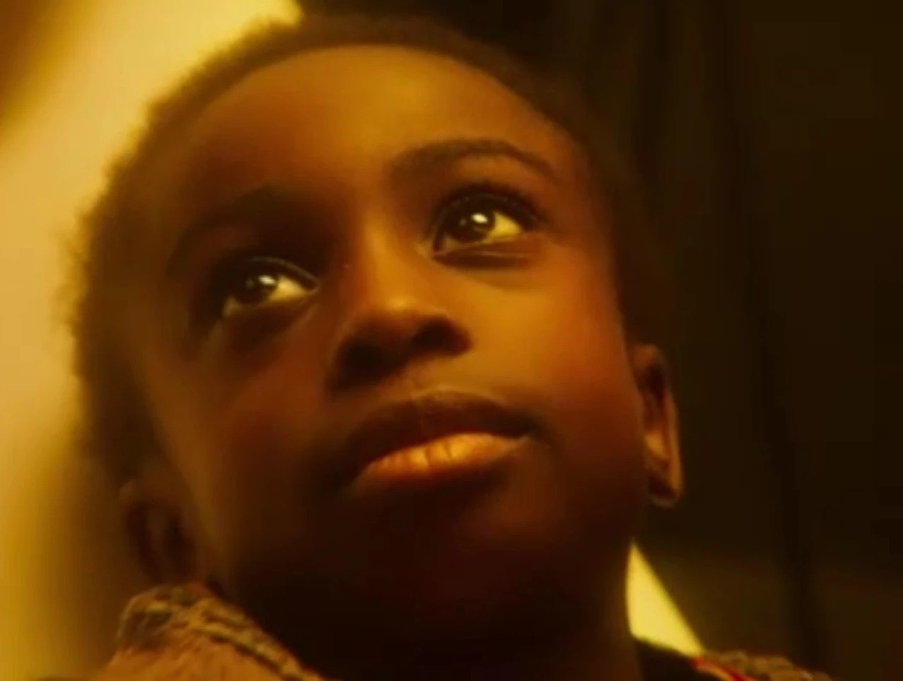
?? (when Tecteun discovers the Timeless Child / was this wormhole opened when Rassilon first released the Great Vampires from the Dark Universe?)
The Bad Mother:
On the far edge of another galaxy, Tecteun’s explorations led her to a
deserted planet with a monument marking a wormhole vortex. The Monument is countless eons old and rest of this world is empty. The fabric of reality around this planet is stretched very thin. She
saw the infinite when she looked into the gateway. This constructed
wormhole connected Universe One with Universe Two – a Universe located
relatively ‘close’ to Universe One. Universe Two appeared to be another
dimension or inexplicable alternative universe. Tecteun realizes this is
the beyond-the-universe that she has been looking for. But she realized
that her small ship would be crushed if she got too close to the
gateway. The
Master claims that the Boundary porthole (seen in Ascension of the
Cybermen) is the same one that the Doctor was found next too, but I think the writers got confused when they wrote that bit.
Next to the monument, Tecteun
found the planet’s sole occupant: a lost child who appeared to have
been thrown through the gateway and abandoned. The child is calm and unafraid. She smiles when she sees Tecteun. When Tectuen questioned the child as to her origin the child would look at the top of the monument, but say nothing. Tecteun would claim that
there was no way for her to send the child back through the wormhole. Eventually the child confessed that she didn’t know where she was from. Tectuen believe the child
fell out of the other universe and was expecting Tecteun to find her.
The Child’s presence in this Universe created a cosmic imbalance which was rectified by adding a negative equivalent to the Child's power in the form of a spark anti-temporal matter. The Child's presence in this Universe probably created a cosmic imbalance which was rectified by formation of a spark of anti-temporal matter. Anti-temporal matter experience of reality moves backwards in time. The matter is covered in a diamond-like protective shell composed of a future version of the Valeyard. Division believes that the anti-temporal matter was created by a spark from what would become the Eye of Harmony. (If this is a reference to the Eye of Time then both theories could be correct.) This anti-temporal matter would eventually explode to form the Solar System where the Earth would eventually found.
Tecteun took the foundling and adopted her. She sees the child as her destiny, and feels she loves the child. The child is quiet and reserved. She spends most of her time silently thinking about other worlds and timelines. Tecteun likes it when the child called her 'mother.' Together they explored the universe. Time dilation from Tecteun’s ship might explain how she could leave Gallifrey on the first space craft, but return millennia later, during the time of Rassilon. The mother and child would have spent most of their journeys at relativistic velocities, potentially skipping over the passage of millions of years.
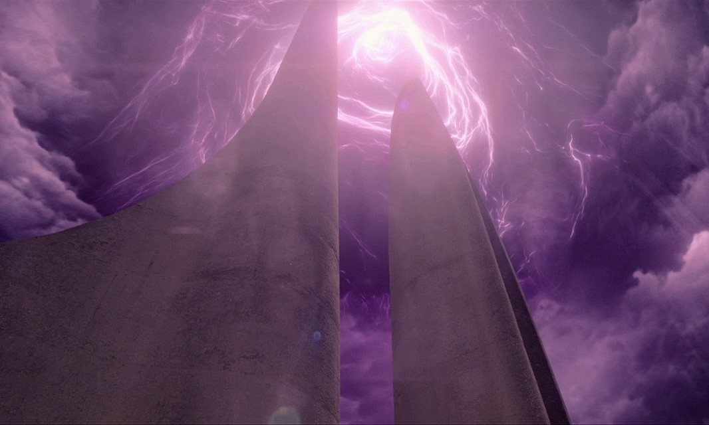
The Old Time: The Timeless Child
The child looked very much like a female Shobogan child, but her DNA showed her to be a entirely different species. She probably had a double heartbeat and triple brain stem. Some say the child had powers that exceeded any that Rassilon may have had. Rassilon described these powers as not being supernatural, but simply 'other' powers. It is possible that some of the powers and abilities demonstrated by the Doctor might have been unique to him and not something that all Time Lords can do. For example, the Doctor can withstand being frozen solid for millions of years. But regular Time Lords suffer regeneration inducing damage if both of their brain stems freeze solid.
The Timeless Child will have a knack for sensing when evil was present, or telling when society was out of phase. This is not a gift that other Time Lords acknowledge having.
This child was capable of regenerating their entire body whenever they were on the point of death. Unlike modern Gallifreyans, who carried the Legacy of Rassilon, the Timeless Child appeared to have timeless, perpetual, bodily regeneration. Her abilities were connected to the eternal, self-regenerating nature of the Universe. Like Vampires she could recycle entropy to extend her own life. She was immortal, barring accidents and would go on to live for over a billion years. Like the Untempered Schism, the gateway might have surrounded the Child's body with bio-plasmic fields of regenerative chronon energy. This might be why they once claimed they could only regenerate 507 times. It is likely that the Yssgaroth learned the secret of perpetual regeneration from this child.
The Child is the first known Time Lord. The key trait that makes her the first known Time Lady is her Symbiotic Chronon Nucleotides which are made up of several atomic particles. The Symbiotic Nuclei are probably threaded through the left hemisphere of the Time Lord’s brain. Symbiotic atomic nuclei act in an intelligent manner, coordinating the Time Lord’s nervous system on a hyperspatial level. The atomic nuclei serve as a genetic key to the Vortex and holds the de-materialization codes necessary to create a molecular stabilization system for a time travel capsule. Without this system a capsule would trapped and will slowly be destroyed by the Vortex over several hundred years.
Even by the standards of the future Time Lords, the Doctor is very fast as processing and interpreting lots of information. Like all time sensitives, the Doctor naturally perceives the Flux of Potentialities. This means she can ‘see’ billions of different alternate times in the form of tachyon-based fictional universes where events could unfold differently. The ability to perceive the 5th dimension of the Vortex is key to this power. Only a few beings in the universe have this talent to see the multiverse. Shobogan children who are born Individuals also instinctively knowing how to navigate the Astral Vortex, but most forget how to do this as they become adults. Humans with this power are known as Guide Sensors. Psionic phenomena are the collapsed remains of magik ground down to its most basic form by the forces of rationality. They haunt the cosmos with all the possibilities of history that could have been. The Doctor's subconscious can continually see these layers which intratemporally occupy the same space by nesting within each other and can find the logical gaps in these temporal equations.
She can consciously weigh the odds of different courses of action allowing her to choose actions that are most likely to give her the outcome she prefers. But this takes effort and focus for her to compute these probabilities. To lesser species they might seem to be asleep or doing some other repetative/mindless activity. Under these circumstances the Doctor can collapse the wave function, finding just the right way to do something that could achieve insanely unlikely results. Such time sensitives cannot see or predict things that have passed through the fiercest of time winds.
This is why the Doctor is often so serene in the face of danger. To an outsider, fate seems to always ensure that the Timeless Child will survive no matter what danger she faces. This can extend to what appears to be probability manipulation of some sort. The child’s unconscious probably has slight effects on the biodata everyone around her. Her very presence alters how observers think. Friends, or even complete strangers, will tend to rescue the Doctor in a nick of time. Her enemy's weapons, locks, and other technology will malfunction. Weather conditions will distract her enemies. Damaged systems won’t catastrophically fail until the she is out of the danger zone. It’s very rare that the Doctor will ever be shot in the head. The Doctor even once threw a ball straight through a solid wall.
The Timeless was known as the Red-Handed Jackel in a previous incarnation where they lived in the dark universe of the Yssgaroth. While starting as only an apprentice, the Jackel eventually became a full shepherd. This child would become known as the Timeless Child (or sometimes just the Timeless), the Other, the Stranger, the Nameless, the Doctor, and Merlin. The child is a complex space-time event (CSTE). Over time the Doctor’s biodata will come to form an eternally recursive spiral in oceanic time as he travels backwards and forwards in time. The spiral will branch every time he regenerates. Some will eventually view the Doctor as the most CSTE in the Universe. The Doctor has had some bodies and lives that he doesn't admit to. Aside from the traditional incarnations, the Doctor has at least two other bodies/identities. One of these is the Other.The remaining identity might be a reference to the Guardian of Justice, or the Morbius Doctors. Its likely that some of the actions attributed to the Other were actually performed by Tecteun, as both had their names and identities scrubbed from Time Lord history. For more information see: Names of the Doctor
The Guardian known as the Toymaker claims to be responsible for making the Doctor’s history into a jigsaw puzzle of contradictions. Like any jigsaw puzzle, all of these pieces should be able to be reassembled to make a single picture.
- In Her Own Words: The child originally confessed that she didn’t know where she was from. She would later state she was an abandoned outcast of an unknown species – but this might just be what Tecteun told her. Some Gallifreyans believed the Other was not of Gallifrey at all. Tecteun assumed that the child had originated from that other universe, but there other explanations that could account for her presence at the monument. The Doctor would later speculate that she might have originated in Universe One and had been placed at the monument to be collected and taken through it, or possibly her parents had been forcibly taken by the wormhole.
- A Great Old One: The Great Old One Fenric believed that the Doctor was a Great Old One from the previous Universe. Stories tell of an Archon of the previous universe's High Council, who was known as the Renegade. They state that the Renegade entered this Universe at its birth and becomes the Other and, eventually, the Red Guardian of Justice. The Crystal Guardian (aka the Toymaker) decided to create conflict throughout the cosmos in order to justify the Red Guardian’s existence. The mythology of the Tharils states that the primordial trickster jackal known as the Blood Thief balances the war between Black and White. This is probably a reference to the Black, White, and Red Guardians.
- The Child-That-Was-Taken: Other sources indicate she might have been Great Vampire, and is the legendary Child-that-was-Taken by a founder of the Time Lords. And all Great Vampires quest to recover this child. Was the wormhole at the Monument opened when Rassilon first released the Great Vampires from the Dark Universe? The Child once claimed to be the daughter of the King Great Vampire, and said that her father drank the blood of Shobogan children. She later claimed that this was all a silly lie to scare her friends. Some suspect that Rassilon stole the regenerative genetic material from the Great Vampires. The Doctor believed this theory was only half-true. The Great Vampires came to an agreement with the Kotturuh that they could remain immortal if they feed off the lives of other to achieve that immortality. Was the Timeless Child taken before this agreement could be struck – making the child exempt to the need to feed? Its worth noting that the Yssgaroth don’t seem to recognize the Doctor at all – even when they meet him inside the Dark Universe. Instead they accuse him of being a Time Lord.
- An Elemental: One of the physical constants of the Normal-Space universe might be the Doctor, as they appears in several very different Universes that were spawned at the same time as this one. Others have speculated that perhaps BOTH the Yssgaroth and the Time Lords derived the gift of regeneration from the Timeless Child. This would explain why the Child doesn't need to feed on blood (Tecteun didn't think she was a Vampire). Time Lords have 98% of the same genes as Vampires. Like Vampires, Time Lords can recycle entropy to extend their own lives. The official explanation for the similarities between the Gallifreyans and Vampires is ‘parallel evolution.' But, its possible that both species used the Timeless Child to gain these powers. Is the Normal Space Universe the second Universe the Child visited, and the Dark Universe is the first. And there is some third (deeper?) Universe the child actually originates from? The Doctor may be a living equation or elemental function of the Universe. Its possible that the Doctor is the natural balancing agent for the Daleks - a predator to keep them in check.
- A Conceptual Entity: From the moment the see him, the residences of the Land of Fiction state that the Doctor is a traitor to their land. The mechanisms that control the Land sees the Doctor as being the ideal and destined master for their world. It describes the Doctor as ageless and outside the bounds of space and time. The High Eternal / Goddess, Death, thinks that there might be something unnatural about the Doctor that will keep him from ever falling into her clutches. The Child also claimed that her mother was a goddess and a witch. And said that her mother would be coming to Normal Space and would curse all the people on Gallifrey. She later claimed that this was all a silly lie to scare her friends. The Kingmaker claims that the Doctor is able to transcend death because ideas cannot die. This would indicate that the Doctor is conceptual entity.
- A Human: When unconsciously tapping into his lost memories, the Doctor described himself as a human from the Earth in the late 19th century. As an old man, he constructed a time-machine that appeared to be a police box. Being lonely, he used this time machine to explore the cosmos – eventually finding his way to Gallifrey, where he helped found Time Lord and TARDIS society.
- The Hybrid: The Doctor has claimed to be the child of the Gallifreyan Ulysses and human woman Penelope Gate. It is know that Ulysses and Penelope did have a child around the time of the Hartnell Doctor’s first appearance.
- A Lungbarrovian Time Lord from the future: The majority of official records show the Doctor to be a Gallifreyan loomed of the House of Lungbarrow on the planet Gallifrey. According to the "Scrolls of Rassilon" the Other is a renegade/criminal Time Lord who came back in time from a point well after the Time of Legend. The Other's father might have been the Doctor.
- A CAT: The Other might have been a Calculating Animal with a Tail, based off the Felinetta cat-people and engineered by Tecteun. A CAT's instinctive precognitive powers allow it to sense what is possible and what is impossible. She could thus prevent inventors and theorists from wasting their time on foolish projects. She would also have had surprisingly stable biodata. Such CATs were highly revered on Gallifrey.
-525?? (possibly after the Osirans
attempt to flee from the Kotturuh / after the Yssgaroth swarm into Normal Space)
The Kotturuh
consider themselves to be the divine opposite of the Vampires. The Yssgaroth successfully fought the Kotturuh to the point where a
deal was struck between the two factions. The Yssgaroth would be allowed
to keep their immortality, but in return they were condemned to regularly feed on the blood and life-force of the living. If they don’t feed they will - eventually - fall asleep until food presents itself. This sleep can last for eons. As part of this agreement, if
any Time Lord was to venture into the dark universe, they would drain
the life-force of the Yssgaroth in much the same manner. The Yssgaroth called themselves the Great Vampires.
Old Time: The Vampire Factor
The Yssgaroth vampires now fed on the blood and souls making them an anathema to all forms of life and meaning. These Great Vampires could transmute almost any energy and use it to make themselves stronger - even energy weapon attacks. Being within a few meters of these creatures from another universe induces a feeling of the mind and body being separated and will begin to drain even a Gallifreyan's life force. A single one could drain all life from a planet. If any Time Lord was to venture into their dark universe, they would drain the life force of the Yssgaroth in much the same manner.
The Great Ones make their headquarters in the Stellian Galaxy (Milky Way) on the world of Alukah. Here many of them live and oversee the wars from the Blood Citadel. The King of Great Ones is the mightiest of these invaders. Rassilon regards the King as the most malevolent of the Great Ones. Legend says that all of the Great Vampires are questing for the Child-That-Was-Taken. This could be a reference to the Timeless Child.
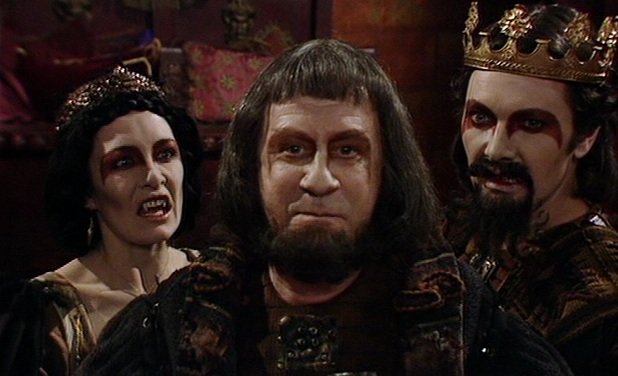

Since the Yssgaroth are the lords of time (ie history incarnate) of their "dark universe," they contaminate Normal Space's life and history simply by interacting with this universe's Time Lords. This contamination takes the form of the V-Factor which infects all life that comes in contact with. In its pure form, ante-matter hybridizes the genetic structure, regressing life-forms down their evolutionary line. Their blood turns into a black bile-like fluid. It acts like a parasitic disease, killing the subject and making their body not-dead and, effectively, immortal. The resulting predatory creature would be a pale shadow of the Great Ones. Being a Brood Vampire feels amazing. Like Time Lords, they can recycle entropy to extend their own lives. Sapient beings in Normal Space that become infected with the V-Factor are known as Brood Vampires. Infected lifeforms become ante-beings that feed on the life-force of other life. During the feeding frenzy ever part of their body burns with pleasure.
Different strains of V-Factor have different infection rates. In some, the infections are tied to the parent vampire’s life until daylight but in others the link lasts until the next full moon. If the parent vampire is killed before this, the infected will revert to normal. Stasis fields can temporarily halt the progress of the V-factor, as can zero particles (whether in gaseous or liquid form) which can temporarily undo the mutational effects for a few hours. The null time field of a TARDIS Interior will prevent a recently turned vampire from turning back to their original race, even if the vampire that turned them is killed before the next full moon. But this limitation only lasts as long as they stay inside the TARDIS.
The genetic material of a Great One is ravenous and powerful enough to bring a recently killed corpse back to unlife in less then a day. Pure Children of a Great One (those sired directly by a Great Vampire), never tire, never hunger and they never feel pain. These S-Rank vampires were immune to sunlight. They can use their psychic power to shatter rocks in midair, and the more gifted Children of a Great One can psychically mesmerize even the Doctor. If a Child of a Great One feeds extensively on a Time Lord they will gain a symbiotic nuclei. When a Great One dies, everyone it directly infected will also die, but only if they have already exceeded the natural lifespan. If they have yet to do so, then the Vampire will survive the shock of the death of its Great One and can continue as independent Vampire.
Newly turned Vampires can’t turn others. And if they can die if the one who sired them is killed. Newly turned Vampires are enslaved to the one who turned them, and have great difficulty in even questioning their orders. These are likely known as Bloodmen and Bloodwomen. A Vampire can use telepathy to destroy anyone it has turned into a Vampire.
Over time the ‘descendants’ of the original Children of the Great Ones will evolve and develop different traits. Sometimes the eyes of these ante-men glowed red. Some could control vampire bats. In the right circumstances, these mutated life-forms can synthesize new ante-matter in their bodies. Haemovores can use electrical fields to weld metal. Some powerful Brood Vampires practiced the pin-based magic called Acumancy. Those skilled in this art could shrink any weapon or other object, making them easy to carry, and then enlarge a particular tool when needed. They would often wear dozens (or more) pieces of equipment pinned to their clothes. Some were shapeshifters or masters of illusion.
As
long as Brood Vampires consumed sapient blood and souls they would
generally remain as an beautiful and charismatic version of their
former living self. But if they were forced to consume the blood of
non-sapient life, or the blood of other Brood Vampires, then the
resulting distortion to their memetic fields would turn them into
beastial, ape like creatures. These were often known
as Mal'akh or Grotesques by Humanity. Brood Vampires would use
this as a punishment for their enemies and sometimes keep the resulting
Mal'akh as pets. The Vampires created a new type of brood vampire, called a Truth Vampire which were used as interrogators. Heat Vampires are another type of Brood Vampires, but they feed on (and can release) heat instead of life. Were the Heat Vampires descened from the V-factor before the Great Ones encountered the Kotturuh?
Most Brood Vampires are immune to garlic and all are immune to crosses and holy water (but not faith itself). Vampires could be blocked by beings that focused their minds on something that they had extreme faith in. Sunlight is leathal to most Brood Vampires and most have a very strong compulsion to sleep during daytime. Repeated, short, exposures to sunlight can, over time, render a Vampire immune to sunlight. They can pass this immunity along to others they sire. Artificial sunlight and doses of allyl methyl sulfide will weaken most Vampire. Most Brood Vampires can be temporarily disoriented using specific high-pitched sonic frequencies, but they can adjust to the sound within a minute. The Doctor claims chickens are the mortal enemies of vampires. This is because they are repulsed by fertilized eggs with are powerful symbols of life. Some Vampires can cross running water. Wooden stakes through the heart are effective weapons against Brood Vampires. Time Lord and Vampire bio-plasmic fields are distributed across their bodies but centered at the top of the spine - meaning that damage there can stop regeneration.
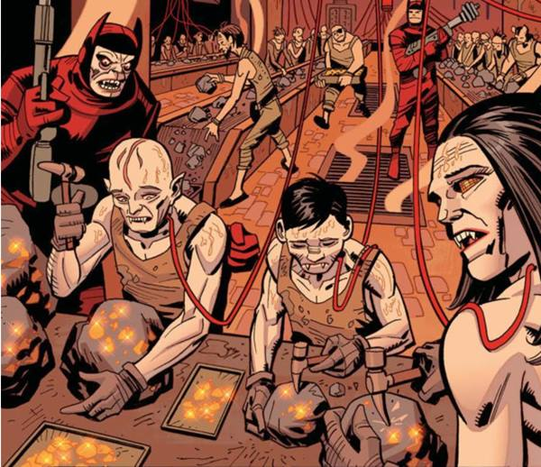
S-Rank Brood Vampires (those sired directly by a Primordial Great Vampire) worship the Great Ones as their gods and generally try to stay in the same region as their master. Vampire society is complicated and quite hierarchical. The collection of different species that have been infected with the V-factor become an organization called the Vampire Alliance.
The Vampire Lords or Ladies who command the Coffin Ships are often given the title Mad if their minds exist in a higher, divine, state. It is said their souls dance with the Gods of Chaos (the Black Guardian?) Their symbols include a bloody thorn bush overrunning a planet, a bleeding, eyeless lamb on a divine throne, and a skin of desperate devouring faces. Some servants of the Yssgaroth wear amulets that take the form of a worm coiling around a sphere.
Bloodsmen are not full Vampires, and are conditioned to obey their masters. Most of them are nothing more than conscripts, forced to labor continuously for plasma provided by their Vampire Lords. The lower castes only receive nourishment after the higher castes have eaten their fill. These brood vampires are servants of the Yssgaroth and the are responsible for killing trillions.
The Vampire Alliance's only (apparent) ambition is to cause pain and despair They spread across the spiral politic, and, the rest of the Universe, enslaving and destroying whole star systems. They specialized in pain and were known for torturing to death the inhabitants of entire planets - sometimes stretching their (still living) victim's nervous systems out over several kilometers.
Brood Vampires call the uninfected Breathers. Vampire lords prefer their victims be clad in white. Every thirteen (local) years the covens on every world in the Alliance would gather 13 pure beings from their planet’s inhabitants and deliver them to the Blood Citadel on the world of Alukah. If a group loses access to a Great One, one of the Brood Vampires will often grow into a new Great One. This is the only form of reproduction the Great Vampires have.
Some of the otherwords of the dark universe have large amount of a soft white rock that is easily crushed under foot. The resulting powder is known throughout much of Normal Space as the hallucinogenic Dream B. In the 24th and 25th centuries (AD) the T’Ka drug cartel was notorious for distributing and marketing Dream B across the Stellian (Milky Way) Galaxy. To induce its full effects, Dream B powder is usually placed in a pipe of water and then heated till the solution sizzles and smokes. The burning and smoke can also be generated using the right frequency of sonic waves. The smoke is then inhaled through the pipe. Under its influence the subject will usually giggle happily while undergoing hallucinations guided by their own subconscious’ need to overcome fear. Within their mind an entire universe forms, and the dreamer is not only the god of that universe, but the intelligent manifestation of that universe. They will be one with the universe’s beauty but also have the power to shape and recreate it in whatever manner would please them. This allows them to face all their fears and problems and solve them all with a thought – and this is the key to the drugs intense emotional high.
However, the Yssgaroth are capable of harnessing all these negative emotions and, in sufficient quantities, can use it to breach the forced-matter shells that the Time Lords used to ‘cap’ the various rips in space-time. The addictive properties of the drug are virtually irresistible to any Tellurian (Human) who is exposed to it. The societies of several worlds completely collapsed as the younger citizens die off from Dream B withdrawal.
Note: The description of the narcotic Dream B extracted from the dimensional rips sound very similar to the
drug Vraxoin which is derived from a combination of the soil of the
world of Eden and the biology of that planet's native Mandrels. The
Mandrel's genetic destiny was influanced by the Time Lords in much the
same way that the Silurians and Tellurians (Humans) of the Earth were.
Could there have been a Blessing on Eden as well? Has Dream B from dark
universe contaminated the soil of Eden, and was it condensed and
concentrated in the tissue of the Mandrels?
-524?? Many of the Great Ones would invade a world and set up a Vampire nest/hive and infect the native inhabitants. These vampires would then collect the blood of others and feed it to the Great One. The vampires are largely confined to the Stellian (Milky Way) Galaxy. Billions of species were wiped out by the Great Vampires, including most of the Fledgling Empires.
??
(when the universe was half the size it is in the 21st century / when
the Great Ones were destroying worlds)
The people of the world of Thijar specialized in genetically engineering and training the perfect assassins and spies. The
Assassins of Thijar had became known as the deadliest killers in the
Universe because of their telepathic powers and advanced teleportation technology. They worked as killers for hire. Some force destroyed their
homeworld, leaving only the assassins who had been on assignment and
off world to survive. Legend says that the homeworld was destroyed by the Great Vampires. The surviving Thijarians renounced killing. They eventually acquire time travel technology, but strictly adhere to the First Law of Time.
-440??
(1000 years before the Eternal War ended/ before TARDISes are invented / during the Dark Times / before the opening of the Death Zone / before the attack against the Racnoss / right before Androkan saw Rassilon begin to become obsessed with the Vampires / before Omega is lost)
The First Vampire War: The Space Lords of Gallifrey discover other races whose view of the universe is so alien to the Gallifreyan views that their mere observations threaten Gallifreyan life. The Lords declare war on these beings and try to eliminate them. The first and greatest of the Vampire Wars begins. The Gallifreyans will ally with the Fledgling Empires to fight the Great Old Ones (including the Yssgaroth), the Racnoss, the Vampires, and the Nestenes. This continuing series of conflicts will eventually become known as the Eternal War (aka the First War in Heaven). Gallifreyans are drafted into the Military Training Squad to the fight the Eternal Wars and are sent far from Gallifrey to confront the swarm. To prevent the Vampires from resurrecting they use molecular dispersal chambers on them.
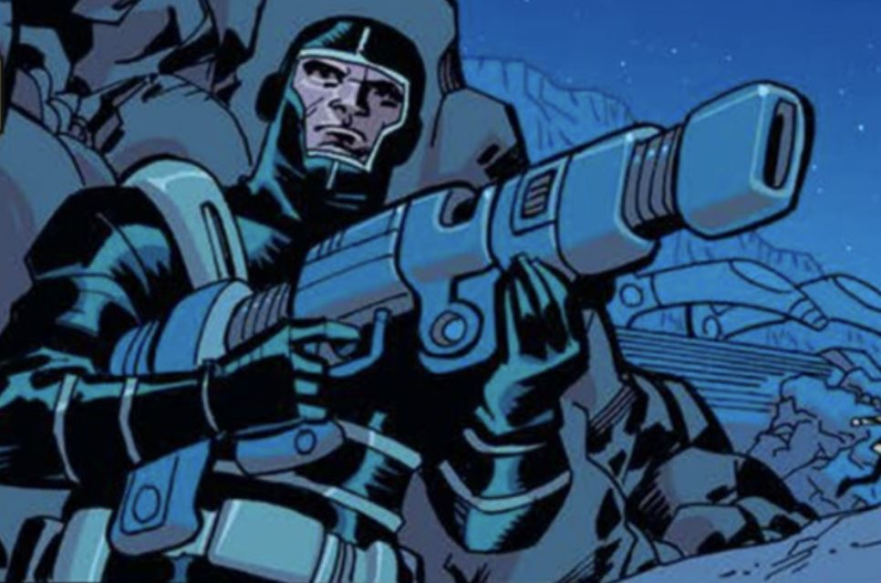
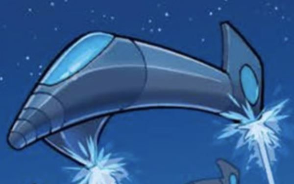
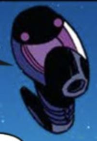
War Time: The First Vampire War
During the war with the Vampire Horde, Gallifreyans are drafted to serve as soldiers in the war with the Great Vampires. The trainees are organized into Military Training Squads. There are barracks for training located outside the city of Arcadia.
Stasers are put into use as both personal arms and vehicle weaponry (it is possible that these weapons were invented to ensure that Brood Vampires couldn’t quickly regenerate). Troopers carry staser rifles with artificial-sunlight torches attached to them, and combat knives attached to their legs. Primordial Class Vampires are highly resistant to heavy staser barrages. Gallifreyans use strato-web sensors to monitor the space above important worlds.
Gallifreyan Fliers have tractor funnels that create tractor spheres that can lift or lower people, with a range over 100 miles. Their thoracite drives release and exhaust. They have weapon systems and are capable of temporarily killing Cucurbites. Gunships are in use. Thoracite is a glowing yellow mineral that is essential for the fusion reactors of Gallifreyan space craft.
Before the Bowships, no Gallifreyan weapon could kill a Vampire (Great or Brood) and be sure it would stay dead. Unlike Brood Vampires, the bodies of Great Vampires do not crumble to dust upon death. The remains of a deceased Vampire can always be ressurected. The Gallifreyans place their bodies are placed in molecular dispersal chambers to ensure they can never return to life. But the Gallifreyans don’t realize this is spreading the V-factor across all of time and space. Vampires consider Shobogan Blood to be thin and bitter. If a Child of the Yssgaroth feeds extensively on a Time Lord they will gain a symbiotic nuclei.
Traumatized soldiers are sent back to Gallifrey and mostly ignored. Public Register Video is only devoting a small amount of time to the Vampire War. Most Gallifreyans view the war as being someone else’s problem though low-ranking Gallifreyans protest that the war should be ended. The Council is viewed as self-serving by most Gallifreyans, and there is a fair amount of unrest.
The first Vampire war was largely confined to the Stellian Galaxy. Million strong swarms of Vampire Cucurbites drink entire worlds dry. These living vampire ships navigate by sound and smell and are fueled by blood. They are somewhat larger than a bowship.
The technology produced by the Vampire Weapon-Worlds is much the same as that used by the Gallifreyan Empire, the Daemons, and the Erogem. There are many Vampire Coffin Ships. The Coffin Ships are powered by fusion reactors that require the mineral thoracite. Each carries a Giant Vampire from world to world. It is said that they are carved from the stone of the Birthing Cavern of the King Great One himself. In addition to a Great One, Coffin Ships can, and often do, carry a huge number of Brood Vampires. Their security systems can detect any non-vampires anywhere on the ship. Vampire ships have shroud technology that even Gallifreyans can’t detect any significant range. Most Vampire Covens will never have access to time travel technology.
-440??
(at the beginning of the Vampire War / at, or before, Rassilon takes
command of the mining base / the female Rassilon in Monstrous Beauty is Rassilon’s first body / after
meeting Androken / Rassilon fought the Vampires before challenging the Pythia)
Before the Vampire War, Rassilon didn’t think she could be a warrior and she is described as a 'very different woman' from the one in Monstrous Beauty (but this might just refer to her personality). Rassilon suffers from loss, pain, and guilt due to the Vampire War.
Rassilon has a pure, overwhelming hatred for the Great Vampires.
?? (before Skellis starts working at the Golden Sword)
The entire Saturnyne species was infected with the
Vampire factor.
?? (not long before All Flesh is Grass)
The Shobogans
and their Gallifreyan Empire don’t trouble the life forms of other
galaxies.
The Uxaerians, Dæmons, and Osirans all consider them to be
unimportant.
?? (not long before All Flesh is Grass)
The Jagaroth
were conquered and destroyed numerous worlds. They
collected treasures from the worlds they invaded. They were great
artists, scientists and philosophers. Their empire lasted for millions
of years. The Jagaroth might not even know of the existence of the Shobogans of Gallifrey.
?
(before and during the events of the Minds of Magnox
/ during the Dark Times)
Magnox
is one of the cosmic wonders of the Dark Times. At the time, the Chronicon of Magnox was said
to hold all the known knowledge in the Universe. By the modern era
there will only be brief notes in the Matrix about Magnox.
Astrafoils are the standard space transport
used by Gallifreyans.
?? (during the Time of Chaos / during the Old Time)
Ancient Gallifreyan myth speaks of Blue Fire (aka Mi'en Kalarash) which did
horrible things during the Old Times (including both the Time of Night and the Time of Chaos). The Blue Fire is
a Great Old One made up of tiny slivers of incremental time that form a time magnet. It lives in the wasteland
between realities. The Blue Fire stimulates a sleeping victim's limbic system and feeds on the artron energy generated
by the resulting fear and nightmares.
Omega and the Seal of Omega
The Shobogan Peylix is born. He will eventually become known as Omega by everyone. Omega’s face is fine boned and hansom, but he is somewhat overweight when he is young. Omega suffers from frequent insomnia. He will later be know as Omega, the Greatest Hero Gallifrey ever produced. He will be viewed as an Elder of Gallifrey and believed to have true immortality. Legends and his disciples will also know him as Omegon, and the Engineer. Omega is Rassilon's cousin but Rassilon appears to have not be affiliated with the House of Lungbarrow. Omega and Rassilon will later form and lead different Chaptershouses. It appears that Omega was a founding member (Grandfather) of the House of Lungbarrow. The Seal of Omega is sometimes depicted in gold on dark green.
-275?? (when the child has grown a bit
older / after the two of them spent time exploring the universe /
probably only a year or two after found at the Monument /~11 years before 6th regen)
The
Bad Mother: The Shobogan Tecteun brought the
Timeless Child to Gallifrey. Solpado might have met Tecteun when she returned to Gallifrey.
Solpado is (or will become) a member of Division and will oversee the
child’s eventual recruitment. Tectuen tells everyone that the child is her biological
daughter, but there are rumors that she is lying. Awsok appears to also be one of Tecteun’s names. Is it her family name, or some cover identity?
-275?? (probably before first contact with aliens / possibly when Tecteun leaves or returns to Gallifrey)
Jak and the Wormhole: A boy named Jak finds a wormhole that leads him to an alien
princess named Jahanna.
Together they stop the Nimon from invading Gallifrey. Jak brings
Jahanna to Gallifrey where she becomes part of his family. This story becomes a popular fairytale told to time-tots. The story of Jahanna arriving on Gallifrey might be a reference to the origin of the Timeless Child. The Nimon feed on the binding energy of other animals – leaving them as desiccated husks.
Could the Nimon be Minotaurs that were infected with the V-factor,
making this attempted incursion of Gallifrey a part of the Vampire War?
-275?? (not long after Tecteun returns to Gallifrey)
Tecteun saw her own relationship with the child as also
being loving, but she also sees her child as being her experiment.
Tecteun couldn’t match her species or point of origin with anything that she knew (so not a Vampire). Tecteun raises the Timeless Child and makes sure that the child always swallows nutrition pills to stay healthy. She keeps her wrapped
in cotton wool and doesn’t let her play with the Shobogan children for
fear of the foundling being injured. Tecteun
regularly questions her daughter to see if she remembers anything about
the world she came from. The Child says that sometimes, in dreams, she can remember something, but it all
goes dark when she’s awake.
-275?? (before the child’s regenerative powers become know)
There were
probably Gallifreyan officials who came to check on the Timeless Child from time
to time.
-275?? (after keeping the child away from other children for some time)
Tectuen decides that it would be healthy for her daughter
to have peers and friends, so she allows her to spend time with
Shobogan children. But she keeps an eye on them from a distance. The child was probably sent to school with other Shobogan children. While telling a series of lies, the Master claimed that Rassilon had been the Doctor’s mentor. Tectuen tells everyone that the child is her biological
daughter, but there are rumors that she is lying.
-275?? (after the Great Vampires are known on Gallifrey)
The
Bad Mother: At the behest of their parents, the Shobogan children
pester the Timeless Child, demanding to know where her father was and
if Tecteun was her real mother. Tecteun claims the child defiantly
told lies to answer these questions, saying she was from the dark
dimension
of the Yssgaroth. She said she was the daughter of the King Great
Vampire, and that her father drank the blood of Shobogan children. She
also claimed that her mother was a goddess and a witch. And says that
her mother would be coming to Normal Space soon and would curse all the
people on Gallifrey. These stories scare the other children, and
disturb Tecteun. When later questioned the child claims that she was
just making up stories. Relative to her own people, the Timeless Child might have considered the ancient Shobogans to be a very primitive species.
-275?? (while Omega is still a student)
The Gallifreyans are the only Fledgling Empire to focus on conquest of time. The
Shobogans believe that their understanding of cosmic sciences
(including the science of time) is superior to all of the lesser
species.
-275?? (before the Shobogans successfully enter the Vortex)
The
Gallifreyans try to use hyperspace to safely enter the Space-Time
Vortex. This research turns out to be a dead end.
? (When Gallifreyans still had an expanding civilization)
The
Gallifreyans launch unmanned survey probe capsules which are designed
to enter and analyze the Vortex and then return to Gallifrey to report
their findings. Many of these capsules never returned and the
researchers never learn why. These gleaming silver probes are the size
of a large person with a capsule shaped casing. They hold powerful
temporal energies inside that can induce headaches in nearby lesser
species. There is a panel that can be raised on the side to reveal the
controls, which have a similar design as those found on a TARDIS
Console in Standard Theme. The capsules can emit a green beam that
can hyper-evolve nearby life-forms into dangerous creatures that will
protect the capsule. It’s possible this is based of Zyton 7 radiation. The resulting creatures will never attack a Gallifreyan (even a loomed one).
-275?? (possibly before the Kotturuh judgement)
The Shobogans experiment with travel capsules
traveling through the 4th, 5th, and 6th dimensions. But their Shobogan
pilots are badly aged and the forces of crossing these dimensions
‘crush their souls.’ Tectuen tries to find a way around this problem.
She is given a laboratory and is allowed to experiment on both
volunteers and unwilling subjects by sending them into these
dimensions.
-275??
(when Shobogan society was evolving / before there were Time Lords / possibly after the Daemons lose their war with the Kotturuh / a decent amount of time before The Knight, the Fool, and the Dead / not more then a few generations before Monstrous Beauty / possibly when Blind Fury occured / possibly after Tectuen returns / before the Timeless Child's first regeneration / probably no more than 180 years before Monstrous Beauty)
The Kotturuh bring their gift of death to Gallifrey. They judge all of its native species and impose mortality on them. The Kotturuh impose a maximum lifespan of a few centuries on the Shobogans of Gallifrey. Everyone over 300 years of age dies.
The Gallifreyans are horrified by the numerous unthinking, motionless,
bodies. They call this being sent to the Ultimate, the Ending, or the
Void. >Without the regenerative powers of
modern Gallifreyans, a Gallifreyan would be confined to wheelchairs
before they reached 200 years old. If their life was prolonged 700
years beyond that point the subject's body would atrophy until he's
only a few feet tall. The official documents and records from the Time of Chaos stated that Shobogans had an average life-span of 300 years. The bodies of the dead were usually burned in a pyre. Most of these deaths were the result of heart failure.
-275?? (the time right before the Pythia's curse / before the Time Scoop)
The second Age of the Pythias, known as the Time of Chaos, begins.
-275?? (possibly when the Kotturuh visited Gallifrey? / no more then 180 years before Monstrous Beauty)
The Shobogan Androken sees mountains of dead Shobogans. He becomes a Medicus and an alcoholic.
-275?? (when Rassilon was young / during the Old Times / before the ice age / when swords
were the weapon of choice on Gallifrey)
Blind
Fury: According to legend, the village of Slothe located in the
foothills near Mount Perdition. Its people hunted and gathered rather
than develop agriculture, and because of this they devastated the
ecology of the region. So the Gallifreyan God, Death sent its
messenger, the Krafayis to the Village. The Krafayis killed all of the
Villagers except for Presus the Indolent, the son of the village Prelate.
An elderly Seer foresaw a time when Gallifreyans would never die.
Presus found the Krafayis and killed it after three days of combat.
Afterwards he burned the bodies of the village and went to sleep.
Having defeated death, he never died but continued to sleep forever
while be watched over by Time. This story would become a Time Lord fairy tale. Its
possible that these events refer to the Kotturuh bringing the 'gift' of
death to all life in the Universe. It's possible that Pesus might be a
reference to Rassilon who also slept for a billion years after
overcoming death.
-275?? (before the child’s regenerative powers become know)
The Timeless
Child probably got sick at one point.
-275?? (shortly after the Shobogans start trying to breach the 4th, 5th, and 6th dimensions / after the Kotturuh visit Gallifrey)
All the
Shobogans of Gallifrey become obsessed with escaping old age, death,
and Time.
The Death Zone
-275?? (during the Dark Times / after Rassilon begins his work / after the First Vampire War starts / during the time of the 403rd Pythia)
The Pythia decrees that all prisoners of
war shall be transported to Gallifrey, and
forced to fight each other to survive. The survivors would gain their freedom. This became known as the
Games
of Death. The Games of Death were considered to be holy and were probably a tribute to the Goddess Death. The architect Rassilon designs the Death Zone. The Death Zone (or Forbidden Zone) is a pentagon shaped valley in the southern hemisphere as an arena for the Games.
The Zone is about the size of North Wales and has marshs and slate pits.
and will eventually be surrounded by a powerful forcefield that can trap even a TARDIS. Autons
of the Nestene Consciousness were used in the games. Figurines of every
organic being added to the Death Zone are laid out on a board. The games are considered holy and serve as an outlet for the stresses of the telepathic group mind of Gallifreyans.
The Games are constantly going on and the Gallifreyans watch them
on their Public Access Channels. There are ruins in the Death Zone - ruins of a great city that was
devastated and flattened by some catastrophe a long time before The
Five Doctors. Some areas of the Death Zone can only be reached by going
through unstable cave networks or going over very steep mountains.
(Possibly because of the force field) the sky above the Death
Zone is blue. Did
the Games of Death start after the Kotturuh judging the Shobogans? Were
the holy games seen as a way to stave off Death?
?? The Shobogans of the Gallifreyan Empire purchase numerous slaves from the Monaxi slavers. Many of the slaves are from Oshakarm, Tersurrus, and the Star Grellades. Imperial Merchant Ships bring these slaves to Gallifrey. A few treazants can buy a cheap slave. A lot of these slaves end up fighting in the Death Zone. Tersurons are covered in white hair, have huge, jutting, foreheads, and scrunched up tiny faces. They have short, but powerful, arms an can sense the health of the people they touch. They prefer hot weather and sneeze a lot in the cold.
The Dark Tower
The Dark Tower (or the Great Tower) is constructed in the center of the Death Zone.
The Day of Revelation / The Bad Mother: While playing with another child in the wilderness, the Timeless Child
accidently falls off a cliff. A third child witnessed this. Tecteun was horrified when screaming people quickly tell her that her child had fallen. The impact with the ground killed the child and eventually triggered a regeneration. This is the first regeneration to occur on Gallifrey. Tecteun witnessed the change and was amazed. She
had no doubt that this different looking girl was still her foundling.
The other children said that the reckless explorations into the
wilderness had been the Timeless Child’s idea, as had the idea of
playing so close to the edge of the cliff. Chibnall intended for the boy who was fighting with the Timeless Child
when she fell off the cliff to either be the Master or someone who
occupied a Master-like role in the Timeless Child’s life. Could this have been Omega?
-275?? (after the child’s first regeneration)
Tecteun realizes that regeneration could extend the
Shobogan lifespan beyond 300 years. She hides the child away in a
secret laboratory in a disused cellar, deep beneath the city. They live
like hermits there. Tecteun dedicated her life to studying the Timeless Child and began exploring the limits of life itself. She detailed every fragment of the child’s
genetic material. The child trusted Tectuen and submitted to the long, and sometimes painful experiments. During the time of Rassilon and Omega the Timeless was known as Theta. This is the 8th letter of Greek alphabet. Perhapse, in her experiments,
Tectuen used the letters to differentiate each incarnation of her child?
Theta would then place the Timeless in his 8th incarnation.
The Bad Mother: The child is accidently infected and badly injured in one of the experiments. After some thought, Tectuen kills the crippled child and the child regenerated again into a young man. The child also appears older then they did before. The boy is happy to be alive, and Tecteun becomes confident that she can harness this power for the Gallifreyan people. By this point, Tecteun has become totally obsessed understanding regeneration, devoting her life to this goal.
-272?? (when the Doctor is a small 7 year old boy / probably not the Hartnell Doctor / probably before the Hartnell Doctor)
An incarnation
of the Doctor with a shaved head spends time crying over a red
rose.
-265?? (when Omega is young)
Peylix (aka Omega) hopes to explore the Universe and make a
difference. He sees the hatred and evil in the cosmos and hopes that
mastering time will give him the ability to make the Universe
beautiful. However
Omega does not approve of violence as a solution and feels that careful
thought and experimentation is the best way to proceed on great
endeavors. He is willing to do the most menial tasks in order to achieve his goals.
The Bad Mother: Because the child knew no other life, Tecteun is able to persuade the child to agree to being forced into three more regenerations while growing from child to adolescent. Tecteun's experiments are cruel and unethical. Tecteun
occasionally has second thought about this to her daughter, but the
child seems so different that they feel like a stranger. So she
continues. These murders ruin
the relationship between Tecteun and the subject of her experiments
(though the child continued to refer to Tecteun as ‘mother’). The
Other is immortal, barring accidents and could live for millions of
years. This immortality is not due to Rassilon's efforts. After
having his memory wiped several times, the Timeless Child will, at one
point, claim that he can only regenerate a total of 507 times.
-266?? (during
the war with the Vampires / before Bowships were invented
/ Skellis is still alive in -24 when the Immortality Virus is
released / after regeneration is public knowledge)
The Gallifreyans Skellis and Gith
are drafted into the military. They are from different houses but
become friends when they are assigned to the same military training
squad, at the training barracks outside Arcadia. They can
regenerate. There are houses on opposite sides of the planet
Gallifrey.
-265?? (before the beginning of The Multi-Faceted War)
The battalion
Skellis serves in fights on the worlds of Amynone, Iolaus, Bashmu, and
Alluttu.
-264?? (shortly before Multi-Faceted War / after the Eternal War has been dragging on and on)
At this point
vampire nests are appearing twice as fast as the Gallifreyans can
destroy them.
But Public Register Video only briefly covers the battles, focusing on
other issues. Most Gallifreyans see the war as not being their problem.
Traumatized soldiers returning to Gallifrey are largely ignored. Though
a few low-ranking Time Lords try to get the war stopped and provide aid
for the veterans. Some Gallifreyan troops desert their units.
-264?? (shortly before Multi-Faceted War)
The world of Lerna has a nest created by a Great One.
Brood Vampire Lernans would collect blood for it. This Great One had formed an
alliance with the Macra. A battalion of soldiers landed on the world of Lerna to to destroy the Great One reclaim it from the nest. Among them are Skellis and his best friend Gith.
-264?? (after
the Vampire war has been going on for a long time / after there are
Time Lords / Skellis can regenerate and already has her second heart /
President Rassilon is leading the war from the front / after the
Omniscate is being used by Gallifreyan soldiers / almost 20 years
before the Bowships Fleet launch ceremony)
The Multi-Faceted War (part 1): While fighting on Lerna, Skellis watched his friend Gith being killed by a vampire Macra. Skellis then killed a Great One by plunging a Macra claw through its heart. The Great One did not come back to life. Skellis
returned to the Academy on Gallifrey to determine how to replicate this
success.
The Timeless Child is forced to regenerated
again. His new seventh body appears to be about 16 years old. While he will be
essential to founding Time Lord science and culture, nobody remembers
his name. The only thing which
is consistent in all the myths is the title by which he is known: "The
Other." It is known that the Other was rather short, but is taller then the McCoy Doctor. He has thin legs,
dark skin, black hair, and doesn't look like any of the first seven Doctors
(Hartnell - McCoy). He often wears a black cloak with a hood. He quite agile and has
talent (and habit) of disappearing as soon everyone’s back is turned.
By the time of the first Otherstide the Other will still claim he can
not regenerate and Rassilon will not contradict him.
-264?? (after years of work in the underground lab / before
sharing the secret of her work with anyone / before construction begins on the Citadel
/ when Tecteun regenerates for the first time / probably not long after
the child’s last regeneration / by this point Tecteun is very old / no more than a few decades before the Doctor joins Division / before the end of the first Vampire War / before Susan leaves Gallifrey / at least a few years before the year Omega is lost)
The Bad Mother: To understand regeneration Tecteun probes the very fabric of reality. At this point
the Universe was effectively immortal and self-regenerating. Studying the defiance of the thermodynamics of this phenomenon led Tecteun to finally understand regeneration. The Child had self-replicating biogenic molecules that work ceaselessly to repair and prune damaged and malformed cells.
If the body is subjected to great stress,
the permanently carried self-replicated biogenic molecules
rebuild the body cell by cell causing a complete regeneration of the body
(and to a lesser degree) the mind. Unlike
later, refined, forms of regeneration, this strain doesn't seem to
cause the subject to start longing for death after about 10,000 years. Telebiogenesis regeneration is perfected by Tectuen and the Timeless child in secret. Tecteun succeeds in splicing the Timeless Child’s DNA and extracting the regeneration code from the child. She
then devises a way to splice into herself the genes which will give her
the ability to regenerate via an injection. With the serum, a Metamorphic Symbiosis Regenerator can be used to allow someone to regenerate. In secret, she tests it on herself. The solution she injects contains both poison and the regenerative serum. and
successfully regenerates. Tecteun
is now the second Time Lord to exist. At the time, the Timeless
Child is exhausted and confused. He doesn’t know who he is any more. He
feels no sense of accomplishment at their achievement.
Tecteun now has as many regenerations as the Timeless Child. The
self-replicating biogenic molecules
caused Tecteun's telepathic power of Entrelacement to dwindle.
Regeneration was still a relatively risky procedure at this point because the technique allows somewhat more chaotic and dangerous forms of regeneration than later iterations. While regenerating a Gallifreyan's
body might incorporate any foreign biodata it came in contact with (Thus a Gallifreyan could regenerate and find himself to be half human.) For more information see:
Regeneration
Everyone
on Gallifrey wants to know how Tecteun achieved his transformation.
-264?? (day
118 / before Monstrous Beauty / probably before being assigned to the
mines / after Tecteun gains the power to regenerate / less then 300
years after being born / after the first Otherstide)
Rassilon is quite obsessed in the possibility of immortality. Rassilon
discovers Tecteun's secret of Perpetual Bodily Regeneration - True
immortality. Rassilon gains the ability to regenerate. By this point she is in her first female body. Rassilon
and Tecteun keep this discovery secret for now but makes plans to give this gift of regeneration only to loom-born (which Rassilon views as the elite of Gallifreyan society). Before the first Otherstide both Rassilon and the Other claim to each other that
they cannot regenerate and have limited lifespans. Later incarnations of Rassilon will possess tremendous strength and the Time Lords of the future will often depict Rassilon as being very tall, wearing bodystockings, and with well developed
muscles.
-263?? (before the invention of the Bowship / significantly before part 3 of Multi-Faceted War)
Rassilon is made a commander.
-263?? (years before Monstrous Beauty / almost certainly while in her female body)
Commander
Rassilon begins overseeing the Thoracite mining base on a shadow
planetoid very far from Gallifrey.
-263?? (after the Vampire War beings / before Bowships are invented)
The Gallifreyans set up a secret military research facility
called Golden Sword on the hollow world of Phonida. Most of the surface
is solid rock without dust or water. The world has a G-Type atmosphere
but the Golden Sword facility uses its own life-support. An emergency
entrance is found on the Argolid Plain. There is nothing alive for
thousands of miles. The world is both far from Gallifrey and far from
any of the fronts in the Vampire War. The researchers wear black and
white robes, while the military officers wear red and gold uniforms.
-263?? (before Rassilon hears of Skellis’ work / before Bowships are invented / before any vampires have been captured)
The Multi-Faceted War (part 2a): No matter how many battles the
Gallifreyans win new Vampire nests continue to appear throughout the
cosmos. Skellis is assigned to the Golden Sword secret research
facility on the hollow world of Phonida. At his request, a special
command unit begins capturing people who have been infected with the
V-factor.
??
(probably before he writes his paper about the Theory of Temporal Aging)
Peylix (aka
Omega) discovers that to make unlimited time travel possible a nearly
endless power source will be needed.
-262?? (right before he becomes Omega / probably less than 300 years before the Revolution)
Peylix (Omega) hides a Warp Ellipse
Field Generator in his desk - which gives him 3 years to complete a 3 hour examination. His teacher, Cardinal
Luvis chooses not to punish him.
?? (before Omega learns of the theory)
Despite being
considered to be a lesser species by the Gallifreyans, the Genefrenians
develop the Theory of Temporal Aging. The theory states
that time itself ages and becomes more curved.
-262?? The Gallifreyans discover that time moves at different speeds in different parts of the Universe, allowing ripples from the center of the galaxy to change history.
-262?? (before turning in the paper)
Peylix (aka Omega) discovers that
to make unlimited time travel possible a nearly endless power source will be needed.
Omega learns about the Theory of Temporal Aging
based on a theory created by a lesser species known as the Genefrenians. Paylix theorizes that if one could
control the oldest part of Time then one could use the curvature of
that time to attach an anchor - allowing the control and mapping out
all
of history. To
do so, one would have to spin up a specific type of super massive
singularity and then curve the dimension of time around it so that they
faced the opposite direction. Then, if one could protect oneself
from the time force, the anti-matter, and the radiation, while still
accessing the singularity, one would have a massive power source for
travelling through time. Omega knows the oldest part of time is in the Sector of
Forgotten Souls (probably where the Terminus Timestation is located) and believes that detonating a star in that sector would give the Gallifreyans control of History.
-262?? (before the revolution / when Omega is at the Academy)
Student Peylix (soon to be Omega) submits his
Chronological Studies paper (which is based on
the Genefrenian Theory of Temporal Aging) to Cardinal Luvis.
Luvis is so offended by Peylix ignoring his teachings and, worried about how dangerous the theory is, that he
gives Palix the lowest possible grade ever given at the Academy - Omega. No one in the history of the Academy
has ever scored this low and Palix goes from being a nobody to being famous for his score of Omega.
Palix becomes known universally by the name Omega.
-261?? Palix (Omega) becomes a Time Plumber. His job might have been to remove temporal energy from the astral vortex tubes.
-261?? (years after he requests capture brood vampires /
almost a century before all but one Great Vampire is killed
The
Multi-Faceted War (part 2b): Skellis determines that the tradition of
molecular dispersing the bodies of dead Vampires has exponentially
spread the V-factor across both time and space. This information is
carefully documented but kept from the Shobogan public. By this point tens of
thousands of Gallifreyans have died in the war and millions of
regenerations have occurred because of the conflict. Rassilon is
notified.
?? (long before Death Comes to Time)
The Time Lords imprison the vampire assassin
Nessican on a phantom sun. He later escapes. The Doctor
knows of him.
-260?? (years
after Skellis arrives at the Golden Sword / sometime before the first
Bowships are launched / after discovering the vampire dispersion
problem)
Skellis
determines that an efficient and safe way to destroy a vampire is to
drive a shaft through its heart. It takes some time to weaponize
Skellis’ discoveries. By this point many Space Lords believe that they will lose the war with the Vampires.
-260?? (not long before the Kotturuh
begin to die off)
The Vanic
Empire and the Gobitrix Empire suddenly begin advancing and conquering
worlds across the galaxy.
-260?? (during the Dark Times / not long before The Knight, the Fool, and the Dead)
The Victis Mercenary Fleet sells its services to the
highest bidder.
The Golden Sword produces a
variety of ships, scanners, and weapons. Skellis invents the
multi-barreled Skellis Gun. A handheld weapon that could fire 4 metal
shafts with a single pull of the trigger. Larger, versions of the
weapon could fire 8 or even 20 at a time. One of the weapons developed during the Vampire War is the Stake Drive. Most importantly, the Golden Sword facility invents
the Bowship to destroy the Vampires. It could launch thoracite-steel
projectiles into the hearts of Great Vampires, killing them. The early Gallifreyans
are seen by some as a very lazy species that relies too much on
artificial intelligence. In order to reduce crew size, the Bowships
were controlled by an artificial intelligence. A fleet of about a hundred Bowships are constructed by the Mithras Hives. For more information see BOWSHIPS[LINK]
-259?? (during
the Dark Times / as news of the Bowships is still spreading to
Gallifreyan military units / the same generation that first faced the
Kotturuh’s gift of death / at least 3 centuries into the Vampire’s
being able to turn people)
Monstrous
Beauty: The 9th Doctor and Rose are pulled back into the Vampire Wars
of the Dark Times. They meet Rassilon (currently in a female body)
at her thoracite mine. By this point Rassilon is obsessed with keeping Gallifreyan genetics pure (he probably fears Vampire infection). Rassilon
commandeers a fleet of about 100 newly created bowships, and drives a Great Vampire from the
world it was nesting on by destroying the entire planet. Under
Rassilon’s guidance, the lead bowship fires its bolt into the creature’s
heart. History will record that this is the first Great One killed by a
bowship. The
Doctor and the Medicus Androkan use Rose’s human blood to create a
synthetic modifying blood agent substitute for plasma-fluid vampires
need to survive. With the right resources,
this synth-blood is self-replicating. They turn it over to a Coffin
Ship full of Brood Vampires after their Primordial Class Vampire is
killed by the Space Lords. The conscript vampire crew of the ship
kill their Vampire Lords and depart. Rose is infected with the Vampire
Factor, but, with the help of the synth-blood, the Doctor manages to
cure her (the quick death of the Vampire Ladies who had just turned her
likely helped with this). It appears that the synth-blood also provides
a brood vampire with immunity to sunlight. These vampires become the Free Undead and take several of their Coffin Ships with them.
-259?? (at
least several million years after the big bang – if not more / during
the Dark Times / aeons before the Time Lords appear / when Death is
young / shortly after the deployment of the first Bow Ships / right
after Waters of Mars from the Doctor’s POV)
The Knight,
the Fool, and the Dead: Because the Laws of Time are now his to create,
the Doctor decides to explore one of the eras he’s never seen – the
Dark Times. He journeys back to the time of the first Vampire war
and encounters the Kotturuh. Seeing them bestow their gift of
mortality on every species, the Doctor decides to take action. He takes
command of the Victis mercenary fleet. The Doctor ends up reflecting
the Kotturuh's curse upon them, giving them a lifespan of only 15
minutes. The effect of this takes months to spread to
all Kotturuh across the cosmos.
-259?? (Shortly after Chapters 3 of All Flesh is Grass)
The Minds of
Magnox: The 10th Doctor saves a small number of the people of Magnox
from the Kotturuh who are trying to find a cure the death that the
Doctor cursed them with. The Kotturuh sterilize the world of
Magnox.
-259?? (a few weeks after Monstrous Beauty / right after The Knight, the Fool, and the Dead / a long time before the end of the Eternal War)
All Flesh is
Grass: After a confrontation with his 8th and 9th incarnations, the 10th
Doctor allies with them.
The Defense of Gallifrey: The Daleks
capture a Great Vampire and use it to infect Daleks with a pure strain
of the V-factor. Using these new symbionts, the Daleks try to destroy
the Gallifreyans before they can become Time Lords. But Inyit, the last
of the Kotturuh, expends her life to wipe this new race of Vampire
Daleks out. When she died the remaining energy of Mordeela was released
but it appears to have created somewhat random life spans on all life
in the Universe. This created a mortal, but still viable,
self-perpetuating ecosystem. Inyit also granted some of her power
to the Brood Vampire Madam Ikalla. This gave her the ability to live
without feeding on the blood of others and to spread that gift to other
Vampires who desired it. Liberated of the need to kill for blood, many Brood Vampires
abandoned their Great One gods and formed the Free Undead. The Free Undead settled on the world of
Birinji.
-259??
(after Skellis begins working at Golden Sword /
hundreds of years before the Immortality Virus / after the first
Bowships are tested)
Rassilon considers Skellis to be a genius, but he will later take credit for the discovery that led to the creation of the Bowships. Rassilon orders the construction of 700 Bow Ships to destroy the Vampires.
-259?? (after Rassilon has his own Bowship)
Rassilon
installs command circuitry in his lead bowship. This allows his bowship
to control any of his personal technology. While any one who has access
to the circuit can use it, their commands can be overridden and
controlled by any current or former lord president. The circuity will
be ripped from the bowship by the King Great One and turned into the
Sigil Ring of the Yssgaroth.
?? (at least 300 years before Wardog is loomed)
The
Steward leads Rassilon's agents. His real name might be Nobby. Like
Rassilon, he is a great schemer and plotter. He has a psi-screen that
protects his mind from being probed by other telepaths.
??
(probably before entry into the Vortex)
Omega,
discovers De-Materialization Theory and
learns to make De-materialization Circuits using the steady state
micro-welding technique developed by the Lamadines.
?? (after being a time plummer / probably early in his career)
Omega is also
considered to be the first real scientist of the Gallifreyan people.
?? The first Prototype Space-Time Capsules capable
of traveling in the Astral Vortex are launched with Gallifreyan Womprats as crew. These capsules can only enter
and leave the Vortex not travel through time. They exist in the Vortex and require power to leave it.
??
Early intertemporal experiments
involve holding gerbil-like mammalian rodents in self-enclosed temporal
cages. The creature’s life-cycles were looped back on each other so
that would experience the same weeks over and over again. This led to
the rodents to develop a parasitic symbiosis with extra dimensional
creatures, driving them mad with paranoia.
?? (during the time of Rassilon)
Omega becomes the first Solar Engineer.
He and future solar engineers will be scoffed at for their interest in
providing for Gallifrey over exploring the Universe. Rassilon knew he needed a supernova to power time travel, but he was stumped on how to create one until he met Omega.
??
(probably before the Timeless Child becomes well known on
Gallifrey / after Omega becomes the 1st Solar Engineer)
A solar engineer (possibly Omega himself) discovers
that the square root of negative three is impossible to
calculate. They have Gallifreyan biological engineers create a
creature that has that knowledge breed into it. It is known as a
Calculating Animal with a Tail (CAT) and was the Gallifreyan Empire's
greatest achievement to date. A CAT's instinctive precognitive powers
allow it to sense what is possible and what is impossible. The CATs
could thus prevent inventors and theorists from wasting their time for
foolish projects. They also had surprisingly stable biodata.
In ancient times, it was to be traditional for every Lord President to have a CAT as an advisor. Cats became revered on Gallifrey as the symbol of intelligence.
The ancestors of the Killer Cats of Gallifrey were
the Felinetta cat-people. They are born in litters, and the females
were much smarter than that males. The Cat-People had very good night
vision and sense of smell, but they hate water. Some are shape
shifters.
The space-time jumping telepathic Kitlings were another race bred from the Felinetta species by the Cheetah-people of the Cheetah Planet.
It should be noted that Rassilon's CAT described in
the "Legacy of Gallifrey" is almost certainly the Timeless Child.
-252? (as the Bowship fleet was being finished)
The Celestial
Intelligence Agency was created to track down every Great Vampire in
the cosmos. This CIA was formed and led by Rassilon’s personal guards and agents (known as the Garda in some records). Agents were quickly and secretly
recruited from all of the Academies and trained in espionage. A
massive, self-sustaining, network of spies was created. The prosecution of the Eternal War is supervised and planned by
Rassilon's personal guard. The Gallifreyans check their findings concerning Vampires with Visionaries.
??
(before the people of Gallifrey could easily protect other Galaxies / after Tectuen, Rassilon, and Omega are born)
Tectuen, Rassilon, and Omega founded Division. Division
started on Gallifrey as a group dedicated to ensuring the safety of the
Stellian Galaxy (the Milky Way).
Rassilon regenerates into an athletic older bearded male body. By this point he is already planning to create timeships.
-251 (almost 20 years after the first part of The Multi-Faceted War / after Rassilon has heard of Skellis Work / 251 years before the Eye of Harmony)
The Multi-Faceted War (part 3): Skellis take part in
a ceremony that could lead to the end of the vampires forever. At this
point Skellis is still working at the Golden Sword and has been made a
general. He has killed over a hundred people infected with the V-factor
in his experiments. But no Great One has ever been captured alive. The
fleet of 700 Bowships is launched.
-251?? (during the first vampire war)
Rassilon was a skilled tactician.
The Bad Mother: Tecteun arranged for the Timeless Child’s recruitment to Division. The Timeless Child is tested and the results are very impressive. While Tecteun watches, the Child is recruited by Solpado to serve as a constable for a division of an extremely secret agency. Tecteun feels that the Timeless is being taken away from her, though the Child sees this event as an escape and he joins so that he can 'make a difference.' This division raised the Timeless Child to adulthood. Tecteun was no longer able to experiment on the Timeless.
-251?? (during a war during the Dark Times / when the Other is very young)
The Timeless Child
witnesses a very powerful creature dying in defiance as its blood burst
out.
-250?
(during the Eternal Wars / shortly after the bowship
fleets were deployed / before the Pythia grounds the
fleet)
The Celestial Intelligence Agency becomes a massive, self-sustaining,
network of spies which tracks down every Great Vampire in the
cosmos. The prosecution of the Eternal War is supervised and planned by
Rassilon's personal guard. The Gallifreyans check their findings
concerning Vampires with Visionaries. The Bowships turn the tide of the
Vampire War. The Gallifreyan Bow Ships would become known as the stuff
of nightmares and legends throughout the early cosmos. The artificial
intelligences of some Bowships figured out new and different ways
battle the Great Vampires. But others rebelled against the
Gallifreyans. Some of these went rouge. Gallfreyan loses in the war
plumet. In desperation, the Great Vampires begin trying to use
uninfected worlds to shield themselves from the attack of the bowships,
but Rassilon destroys any world he finds a Great One on. Gallifreyan
ground forces do their best to eliminate everyone infected with the
V-factor using Skellis Guns.
-249?? (after Multifaceted War part 2 / probably after the Bowship fleet turns the tide of the war)
Numerous
Vampires can also be found in the Games on Gallifrey.
-200?? (when children and marriage were
common / after the Vampire swarm begins / before warp matrix
engineering is discovered / after the Timeless knows a lot about brood vampire biology)
Cinderella and
the Magic Box: While official Time Lord history claims that no Time Lord was ever infected with the V-Factor, it would appear that some Shobogans were turned. The Timeless Child helps Cinderella go to Lord Darke’s
ball. Acting on the Timeless' instructions, she destroys Lord Darke
and his fellow vampires before the Prince of the province of Arbesk
could be infected with the V-factor. This story becomes a popular
fairytale told to time-tots.
-200??
(before the Time
Scaphes / Artron is still alive after Rassilon comes to power)
The Gallifreyan Professor Artron discovers, names, and
harnesses the power of artron energy.
-170? (decades
before Rassilon declares the War over / almost a century after Skellis
discovered that disintegration was spreading the V-factor)
Rassilon and
his fleet of bowships track down the last five Great Vampires. The
grievously wounded Vampire King splits off from the others and
Rassilon decides to pursue and destroy the other four. The King escapes
and Rassilon sets the fleet, ground troops, and CIA to focus all their
energies on finding the King. However the King seems to have vanished.
?? (before they started draining entropy)
The people of Logopolis
are driven not by individual need but by mathematical necessity. They invent block transfer mathematics. The Skasis Paradigm is essential to truly master block transfer computations. Logopolis is located outside of Mutter's Stellian Spiral Galaxy (aka the Milky Way Galaxy) in the constellation of Cassiopia. Other species that
will make use of their discovery are the Gallifreyans, Axos and the
Nestene Consciousness and the Constructors of Destiny will eventually have a better understanding
of Block-Transfer Computations than the people of Logopolis.
Logopolis
?? (aeons/billions of years before 1982 / probably
before the Vampire King falls through a CVE /
1 billion years after the Universe ceases to expand and reached
equilibrium / after Tecteun replicates the Immortality Virus / when the
world of Logopolis is ancient /
before the Time Lords /
after the Gallifreyans evolve)
The Black Guardian's damage to the Heart of the Universe continues to causes entropy to incease at an accelerating/exponential rate.
The Logopolitans realize that the Universe is starting to collapse. They begin using the Block Transfer Computation to save the Universe from this Heat Death.
To maintain the equilibrium,
they drain entropy into closed vacuum embodiments (one of which is in
the constellation of Cassiopia). This stops the destruction of the
Universe
by preventing the Emerald Wave of Entropy. The Universe's collapse is delayed until a point around 360,000,000,000 AD.
In this way the planet Logopolis becomes one of the anchoring points for the entire causal nexus.
??
(it took a long time for a clear victors to emerge /
a few millennia after the wars started / significantly after All Flesh is Grass / the Dark Times)
The early Gallifreyans spread out, conquering much of the Stellian (Milky Way) Galaxy. Planet after planet falls to the Empire. All truly impressive victories for the Empire are foretold in the Book of Future Legends. In most cases prophacy allowed the these Heros to know exactly what they would find on these worlds and how they would claim it. The Shobogan heroes reveled in the blood and chaos
of the Dark Times. Each conquest increased their pride and
self-confidence. Most of the original Fledgling Empires, including the Narlok, are now extinct due to the wars. The Fledgling Empires that were too strong for the Shobogans to conquer include
the
Nestenes Consciousness,
the Carrionites, the Racnoss, the Exxilon, the Gods of Ragnarok, the Eternals, the Mandragora Helix, the Dæmons, the Jagaroth, the
Gryffnae, the Lacustrine Sattisar, the Batworms of the Asteroid Archipelago, the Kastrians, the Weeping Angels, the Vashta Narada, the Osirans, and the Krafayis.The
Gallifreyan Empire masters almost all of Mutter's Stellian Spiral Galaxy,
making them a Type 3 Civilization. They divided the cosmos into the Eight Domains. Each colony of the Gallifreyan Empire was ruled by a governor. The Gallifreyan Empire encompasses:
Ezmion VI,
Pen-Shoza, Jagdagian, Oshakarm, the Star Grellades, Mirphak 2,
Drornid (or Dronid
in Galactic Quadrant 5),
the Aubert Cluster and many others. Mirphak 2 is only 570 lightyears from Sol (in the Earth constellation Perseus). Gallifrey is a major trading hub for the colonies.
?? (when the Time Lords were young / hundreds of millions of years
before the 21st century)
The Gallifreyans colonize Trion.
140? (decades after the second to last Great Vampire is killed by Bowships / when Rassilon declared the first Vampire War over / when Rassilon is planning to create timeships)
The
Multi-Faceted War (part 4): A new time-space scanner is invented that
fails to find any trace of the King Vampire. Rassilon declares the
first Vampire War to be over and that the Great Ones have been
destroyed. He states that the all of the giant vampires have been
destroyed (but in reality he knows the Vampire King vanished). Rassilon
believes that without Skellis Gallifrey itself might have fallen to the
Great Ones.
??
(back when there were children / before regeneration / probably after the Laima Gravity Unit is created)
The Garden of Statues: The Weeping Angels take control of a house on Gallifrey and create a temporal paradox. This story becomes a popular fairtale told to time-tots. The Gallifreyans viewed the Weeping Angels as particularly terrifying. One of their manuscripts on that species is titled
"It's behind you."
Taranium is discovered and mined from Gallifrey's moon Pazithi by minesmen. Taranium is one of the rarest and most unstable substances in the universe. A full emm of Taranium is capable of holding vast amounts of temporal energy, enough for 50 space-time jumps in a TARDIS. Enough to shift entire regions through space and time, or to power a hundred DARDISes. Touching it can de-age someone who has become old due to temporal acceleration. This rare element will be essential to Gallifreyan temporal science. Gallifreyan temporal science is based on the fact that revolution-induced gravity exists and affects all temporal manipulation.
?? Gallifreyan Heroes fight campaigns against the Gryffnae, Lacustrine Sattisar, and the Batworms of the Asteroid Archipelago.
The 508th Pythia
-136.3
(169 years before the the Curse)
The woman who will become the 508th Pythia is born. The Timeless Child once claimed that her mother was a goddess and a witch. And said that
her mother would be coming to Normal Space and would curse all the
people on Gallifrey. She later claimed that this was all a silly lie to scare her friends.
?? (during the Gallifreyan Empire / shortly after Earth's star ignited / while the Earth is nothing more then
dust / after the falling of most of the Fledgling Empires)
The devastation of the other Fledgling Empires allows Gallifrey to focus its resources on scientific development. This,
eventually, places them far above the other species.
Quennesander Olyesti Pekkary of the House of Fordfarding is born. He is Rassilon's nephew.
-130?? Amnoni Distuyssor Lorizhon Amnoni’s (aka Noni), oldest daughter of the ancient House of Blyledge, is born. She eventually becomes Second Officer of the Chronoscaphe. Blyledge is one of the senior houses in the Prydon Chapter of Glorious Gallifrey. The House of Blyledge is an angular small dark building that is older than the hill it sits on. It has a walled garden of silver trees in its center and is within visual sight of the Capitol.
Patience?
Patience is born from a womb. She is a Gallifreyan with dark hair, green eyes, and freckles on her shoulders. There is a birth mark on her foot. Her DNA is of the same ancestry, but different then the Doctors. She is born from the House of Blyledge, one of the senior houses in the Prydon Chapter of Glorious Gallifrey. She might have been a member of the Pythia's Order and thus be immune to the Curse?
-110?? (sometime after she is born)
The 508th Pythia begins her rule.
She has a mask like face, streaked with gold, and long gray hair coiled
with silver wire. She reeks of wood smoke and wears blue furs with
dangling talismans. She will regularly travel the City in a palanquin.
The Book of the Future Legends states that, after the 508th Pythia, the
next ruler will be a man.
?? The new incarnation of Rassilon has pale eyes and probably has red hair. Rassilon's body is short even for a male Shobogan. Rassilon is an Individual (allowing him to shield his thoughts from other Shobogans). He is known as an architect. He loves to use the word Time as often as possible in a sentences. Rassilon is said to have played the Harp of Rassilon. He likes onions and tea. Rassilon enjoyed skiing. His symbol will be an owl. By the time of the revolution, Omega will be one of the very few people who still call Rassilon 'Ras.'
-108?? (a long time before the Curse)
The 508th Pythia meets with a
Master Trader from the South and then foresees the point when the veil
of Time will not be breached by thought but instead will be physically
traveled. The Pythia instigates the Time Program and puts the project
under the control of the Academia. The Time Program might have involved performing psycho-genetic surgery on its participants. This neural enhancement
would allow them to visualize and materialize a path in the Astral Vortex (in a manner similar to the Tharils).
The Gallifreyans becomes a Level 9 Society. The taranium ore found on Gallifrey's moon might have been a key part of these early psionic based time travel experiments.
The Temporal Scientist named Vanderkerian begins working with Omega. They become good friends.
-105? (long before
she meets the 'Morbius' Doctor)
Patience meets Omega.
Patience and Omega fall in love.
?? (Probably before the first TARDIS / during the Dark Times / before The Labyrinthine Web)
The Time Lords invent Huon Energy for their time travel technology. This could be done using artronically charged water, to extrude inert Huon particles through a flat hydrogen base. The particles would then needed to catalyze inside a sapient being who is in a high state of excitement and stress over a 6 month period (probably because only sapient beings can crystallize quantum events). Huon particles will be used in the Heart's of their TARDIS's and other temporal devices. When inert Huon Particles are safe but if given a chance to catalyze in a sentient being they become deadly. (Its possible that Huon Particles generate Fluon Radiation). While in a liquid state at body temperature, sufficient stress can cause them to ‘boil’ shifting the host through time and space towards the magnetic field of other huon particles. The Time Lords eventually discovered that Huon Energy could unravels matter’s atomic structure on a vast scale.
-102 (102 years before the Eye of Harmony)
The first space-time craft capable of safely carrying
a Shobogan into the Vortex is constructed by Omega. Omega is the first Gallifreyan to survive the Space-Time Vortex.
-102
(when the first Shobogans are safely entering the Vortex)
Patience's lover
is a pioneer among the Time Lords. He becomes one of the first Time Lords to enter the Vortex after its discovery. By the time of the Doctor, no one remembers this pioneer's name.
Nobody will remember what Omega's real name was.
-102??
(at least a few years before the return from the Odyssey
/ 12 or 19 years before returning, according to Homer)
Patience's lover endures the Odyssey through Deep Time.
??
(probably shortly before the Time
Scoop was invented / after the Gravity Control Unit is
activated)
For most
temporal powers (probably
including the Gallifreyans) one of the first forms of time travel are
osmic projectors which eventually led to full Time Corridor
technology.
The Death Zone Control Room
The Time Scoop, which uses psychic powers and Taranium, is created. It will be known as the Time Scoop of Rassilon and some records will claim he invented it. This might be why some records state that Rassilon invented the Death Zone. Rassilon was considered to be the greatest engineer and one of the greatest scientists of his day,
The Death Zone and the Time Scoop
The Games of Death were considered to be holy and were probably a tribute to the Goddess Death. The architect Rassilon designs the Death Zone. The Death Zone (or Forbidden Zone) is a pentagon shaped valley in the southern hemisphere as an arena for the Games. The Zone is about the size of North Wales and is surrounded by a powerful forcefield that can trap even a TARDIS. Autons of the Nestene Consciousness were used in the games. Figurines of every organic being added to the Death Zone are laid out on a board. The games are considered holy and serve as an outlet for the stresses of the telepathic group mind of Gallifreyans. The Games are constantly going on and the Gallifreyans watch them on their Public Access Channels. There are ruins of a great city in the Death Zone - a city that was devastated and flattened by some catastrophe a long time before The Five Doctors. Some areas of the Death Zone can only be reached by going through unstable cave networks or going over very steep mountains. (Possibly because of the force field) the sky above the Death Zone is blue. Did the Games of Death start after the Kotturuh judging the Shobogans? Were the holy games seen as a way to stave off Death?
The Death Zone is shifted into a temporal bubble. While the weather in the Death Zone be controlled, it is always set for wet and rainy. By this point, several alternate playing boards can be overlaid upon the Death Zone (such as a maze of joined space stations and space craft). The walls of these environments are made of a metal alloy created in zero gravity, and they can be remotely disabled. These alternative play environments are stored in an artificially-created pocket holding dimension when not in use. White sand from Mirphak 2 is imported for the Death Zone because it shows the blood better. Only a TARDIS would be capable of entering the environments stored in the pocket dimension. All players on those boards are trapped in this pocket dimension when the board is not in use.
The Shobogans of the Gallifreyan Empire purchase numerous slaves from the Monaxi slavers. Many of the slaves are from Oshakarm, Tersurrus, and the Star Grellades. Imperial Merchant Ships bring these slaves to Gallifrey. A few treazants can buy a cheap slave. A lot of these slaves end up fighting in the Death Zone. Species throughout the cosmos are kidnapped using the Time Scoop and forced to fight in the Games for the entertainment of the Time Lords. This includes Mandrels, Hypnotrons, and Drashigs. The species from the two ends of eternity fight in one giant paradox.
The Time Scoop is very likely an osmic projector. Using Transmission of Matter Through Interstitial Time (aka a purely muon based temporal drive) the Time Scoop creates Null Spheres (aka Interstitial Motive Bridges) that collect items and aliens from across time and space. The spheres can be detected by a K-9 well in advance of the sphere's appearance in Normal Space. These null time bubbles are then steered through the Vortex through the muon based temporal wake created by the Time Scoop. While most targets are successfully brought to Gallifrey, some occasionally get trapped in time eddies. The trip is strictly one way. Every use of the Time Scoop causes permanent damage to the Web of Time. A Time Scoop’s Motive Bridge can disable a TARDIS’s controls if the operator lets it get too close, but the Scoop has only a 39.7% chance of being able to actually capture a TARDIS. The use of the Time Scoop can be observed using time particle monitors. Once the Eye of Harmony is created, use of the Time Scoop will interfere with Gallifrey's power systems causing planet wide drains. The Time Lords also use the Time Scoop to collect all the extinct species from Gallifrey's past. Some of the more fearsome creatures from Gallifrey's past were placed in the Death Zone.
-100~ (4 generations before the Barriers are completed)
Omega beings working on the theories that will create the Transduction Barriers.
?? (before there were Time Lords / around the time
of the Diaspora)
Omega
encounters the Tantalus Eye and writes about its unique nature.
He fails to determine what caused it or its capabilities.
The Eye is found in the Tantalus Spiral. The Eye is a vast
fold in space-time, connecting two different universes. Inside the Eye time
accelerated, decelerated, and reversed unpredictably with such time
dilation that nearby stars were born, died, and were resurrected within
minutes.
??
(more then a week before the Qqaba mission)
The Population III
Q Star Qqaba
(also known as
Jartus) is discovered by Omega
in the area of of Mutter's Spiral where the fabric of time is the oldest. This area
is located 9.6 LY from Gallifrey
in
the constellation of Ao
and
will become known as the Sector of Forgotten Souls.
It has 12 times the mass of Gallifrey's GV (yellow dwarf) sun. Omega reconfigures the star to prevent its imminent
death.
-90??
(shortly before the lover gets a seat on the Supreme Council / after or at the same time as the Time of Chaos begins /
probably before the Time Scaphe launches)
Patience's lover is hailed as a Hero upon his return from the Odyssey.
Omega marries Patience on the day of his return to Gallifrey.
-90?? (before Omega decides to shape the universe )
They build a statute of Omega in the great
hall of the Academy. The statue is made of ebonite. While watching the construction of this statue Omega
decides to shape the universe.
-90?? (just after getting married)
Patience's husband spends most of his time 'shaping a new future' for Gallifrey. Omega - the first real scientist of Gallifrey - rebels in the name of science. Omega works at the Science Faculty.
?? The Gallifreyans appropriate Block-Transfer Mathematics
from the Logopolitans.
??
(when
the Universe was smaller and newer / when weddings were common )
The Grief Collector: Melina makes a deal with the Greif Collector
to exchange her tears for money. The Collector kidnaps Melina’s fiancé
to increase her grief. With the encouragement of the Timeless,
Melina
breaks into the Collector’s house and liberates all the people he has
captured over the years. In the process the Collector appears to
have
been drowned in the tears he had collected from tens of thousands of
victims. This story becomes a popular fairytale told to
time-tots.
??
(when communicators and verbally
programmable transporter ‘skimmers’ are available / before temporal
manipulation of DNA-biodata is possible / possibly after the Timeless Child arrives on Gallifrey)
Helana
and the Beast: In order to free her father from the control of a
beast-like creature, Helana agrees to live with the beast. She learns
that the Beast had been exposed to and unstable time field which had
regressed its body down the evolutionary line. The Timeless is able to
provide a temporal antidote turns the beast back into a young man. The 'Doctor' figure might be a Timeless Child. This
story becomes a popular fairytale told to time-tots.
-74 (50 years before Rassilon become President)
Lord
Pandak the Original begins giving speeches as part of his political
rise to power.
-70~?
(he is barely an adult in Time's Crucible)
Vael Voryunsti Sheverell is born in his family's
home in Soonwell Valley (about 500 leagues from The City). He
comes from a family of merchants. He has older sisters who later
marry and have children of their own. Vael has a unique psychic power,
pyrokinesis. His anger can cause the source of his irritation to
burst into flames. The Pythia will learn this power from him.
The Neo-Technologists faction begin opposing the Old Order and the Pythia. They believe the technology was a useful tool, and not a a nescessary evil (as describe by the Pythia). They saw themselves as heralding the Age of Reason and want to free all slaves and have the government provide free food for everyone. Rassilon becomes the leader of the Neo-Technologists. Rassilon made a political name for himself campaigning against the Games of Death. Rassilon is a supporter of reason as opposed to the Pythia's superstition. The young hero cadets from the Academia make up the heart of the movement.
-57 (24 years berfore the Curse)
The first Gallifreyan Colony world demands its independence.
?? (when the Other and Rassilon start working together)
The Timeless is submitted by Division to Rassilon for his approval. Rassilon will later speculate that the real issue being judged was how long the Other would approve of Rassilon’s work. The Other probably worked to balance and mitigate the conflict between Rassilon and Omega. The Other during the time of Rassilon and Omega the Other is known as Theta. This is the 8th letter of Greek alphabet. Perhapse Tectuen the letters to differentiate each incarnation of her child? Theta would then place the Timeless in his 8th incarnation. Tecteun opposes the Doctor’s meddling do-gooding.
-44
(11 years before the Curse)
Rassilon wins his freeman servant, a Tersuron
Factotum named Thrift, for a few treazants in a market place brawl
game. Tersurons are covered in white hair, have huge, jutting,
foreheads, and scrunched up tiny faces. They have short, but powerful,
arms an can sense the health of the people they touch. They prefer hot
weather and sneeze a lot in the cold. Thrift calls Rassilon by the
title Meyopapa.
-43? (she is a child when the Curse happens / she is crew on a Star Breaker when Omega is lost)
Rema-Du is a womb-born Gallifreyan.
?? Handstrong is the Pythia’s personal un-man Grelladian guard. There are pillars in the Sanctum. One is a hollow pillar where Handstrong hides waiting to deal with threats.
? (after Omega became the first Solar Engineer)
Rassilon works in the office above the west wing of the Academia Library. At this point, Rassilon is primarily regarded as a great architect and a Stellar Engineer. Rassilon is a scientist and has an impeccable political record. He plans to make the Shobogans Lords of Time. But to do this he will have to conquer time and re-make Gallifreyan culture. He will do whatever it takes to accomplish this. He realizes that History is written by time travelers from the future.
-42 (9 years before the Curse / after begining his revolutionary politics)
Rassilon renounces the rest of his name (as a protest against the Pythia) and from this point on is known only as Rassilon. Omega keeps calling Rassilon 'Rass.'
-38~ (a few years before the fall of the Pythia)
Workers (slaves) from the Star Grellades cease to be sold by Pen-Shoza. However workers from Oshakarm continue to be sold.
-36.7
(4 years before the Curse)
Shonnzi is born. He has red hair
and before he grows up he is gifted in piloting a ship through the Astral Vortex.
The Chronauts begin training for their first mission on the Time Scaphe by doing hundreds of simulations. The Crew consists of Captain Quennesander Olyesti Pekkary, first son of the House of Fordfarding (his mother is Olyes Dryanasor, grandmother Dryana Shylvarsor, great grandmother Shylvar Karyesti. His uncle is Rassilon.), Second Officer Amnoni Distuyssor Lorizhon oldest daughter of the ancient House of Blyledge, Regulator Chesperl, Reogus Telleem Lacott (the Battery), Quantum Theorist Taspar and the one year old Pilot Shonnzi.
-35 (35 years before the Eye of Harmony)
As part of the Time Program, construction begins on the first Time Scaphe (or Chronoscaphe, the world 'scaphe' is Greek for 'boat'). The first manned time travel is planned to be ninety minutes in the Vortex, and ninety days up-time (into the future). Future planned missions include spending 90 days in the Vortex while traveling only 90 minutes up-time and another to attempt to travel down-time (into the past).
The Chronoscaphe
The Time Scaphe is made of real matter. The Scaphe has circular body with a curved underside, so that it looks like a sphere from below. It might be completely spherical. It is powered by the mental artron energy of its Chronaut Crew. It takes six psychics to power and crew this time travel capsule. Like the Timeless Child, Shobogan children, who are born Individuals, instinctively knowing how to navigate the Astral Vortex. Unfortunately almost all of them forget how to do this as they become adults. This is why 4 year-olds serve as the navigator for the Scaphe. The inside of the Scaphe is cramped. The Scaphe is equipped with a chrono-telemeter. The crew are arrayed around the power core. This is the predecessor of the six sided consoles found in future TARDISes. The functions of each crew member correspond to the function of each of the 6 panels on a console. A holographic sphere hovers over the Scaphe’s heart. The scaphe is launched into orbit before entering the Vortex. It travels though the Astral Vortex via a wormhole. It Uses forced-matter calculation to travel in time and the Chrononauts keep thinking ‘We travel’ while in flight. The Scaphe’s Sustainers make the it feel like a voyage through space. The scaphe is designed to be launched into orbit before entering the Vortex.
? Amnoni plans to have children after the Time Scaphe mission. She has also been named as the next Kithriarch of the House of Blyledge.
?? (before Time's Crucible)
By this point the capitol city of Gallifrey suffers from cold winds from the norther lakes and has had heating systems installed in many of the streets to keep them free of snow and ice in the winter.
?? During the Last Great Time War in Heaven the Time Lords created the several TARDIS to use as tools to try to free the Fendahl. While the Memeovore was attacking Mictlan the Shift led a group of servants onto one of these TARDIS that had crashed there. The surviving TARDISes then escaped and, having no interest in the other War in Heaven, traveled back in time billions of years (possibly outside the Noosphere, almost certainly before the Intuitive Revolution). The Sphinxes set themselves up on the world on the edge of a Stellian Galaxy named Thule, in an area of space on the opposite side of galactic core from Sol III. They sent up a civilization there known as Sphinx Space. The TARDISes become the the Sphinxes who were know as the Kings of Space. It was said that the Sphinx could see further into the future than any other oracle in the nine corners of the Universe. The Sphinxes absorb energy from other dimensions and excrete raw space-time. The Kings of Space are a male and female Sphinx who are the parents of all the others. One is black and one is white. The servants of the Celestis that escaped in on of the Sphinxs become the human worshipers servants of the Sphinxes. They also take care of their little Sphinxes. The regime of the riddles of the marauding Sphinxes was barbaric.
The mighty Hero and Space Voyager, Haclav Agusti Prydonius journeys to
the world of Thule aboard his ship the Apollaten. There
he overthrows the regime of the riddles of the Sphinx. It is rumored that this event fulfilled one of the Future Legends. Prydonius has black hair. Lord Prydonius has the same voice as the 13th Master. This
could mean that some (or all) of the bodies available to future
Gallifreyans are based on the ancient founders of Gallifrey, or it
could indicate that, (like the Doctor) the Master is a reincarnation of
someone from the Old Times.
-34.2
(1 year before the Curse / early autumn)
Time's
Crucible: Haclav Prydonius returns to Gallifry. At this point
Prydonius dislikes Rassilon's political views and is very popular with
the people of Gallifrey. Vael Voryunsti Sheverell supports the
Neo-Technologsts, but agrees to be the Pythia's agent because he wants
to rule Gallifrey.
-34.1 (1 year
before the Curse / probably after the Pythia recruits Vael)
Time's Crucible: The Pythia has
Taspar killed in what appears to be a freak skimmer accident. Vael Sheverell
probably used his powers to light the swamp gas around Tasper. The
Pythia arranges for Vael replace him on the Time Scaphe's Crew.
-34
(1 year before the Curse)
The Pythia abolishes sales taxes on slave
trade
-34 (1 year before the Curse)
There are riots and two public stonings
in the cities in the South.
-34.0
(1 year before the Curse / 61 days after Taspar dies / mid-spring)
Time's Crucible: The Time Scaphe is launched. The
first Temporal Transportation System (aka time capsule) to travel the
Astral Vortex is called the Time Scaphe or Chronoscaphe.
The
first manned time travel is planned to be ninety minutes in the Vortex,
and ninety days up-time (into the future). The Scaphe travels though
the Astral Vortex via a wormhole. The Chrononaughts keep thinking ‘We
travel’ while in flight. Sustainers make it feel like a voyage
through space. The
synthetic air in a scaphe is quite warm when on a voyage. Monitor units
record every aspect of the crew, both internal and external. A
cradle of the future hold plants and tafelshrews for scientific study.
Within the cradle a day passes for every minute the crew
experiances.
-33.8
(around the time when Rassilon meets with the Pythia)
An ice age begins on Gallifrey. This will cause
a partial collapse of Gallifreyan society, known as the
Darkness. The Ice Age might last for 10 million years and only end
around the time the Doctor is in his 8th body.
-33.8
(15 days before the Scaphe is supposed to return)
This is the
last time the 508th Pythia makes a public appearence.
-33.7
(1 year before the Curse / 90 days after the Scaphe launch)
Time's Crucible: The 508th Pythia meets with
a Master Trader from the north, who is in reality Rassilon. The Other is with Rassilon. Rassilon claims
that the Shobogans will become lords of time. Rassilon thinks he
did some mischief to keep the Pythia from seeing his future. The
Other told him not
to do this, but Rassilon did it anyway. Afterwards,
the Pythia discovers she can't see the future
anymore. Rassilon is surprised to learn that whatever he did seems to have disabled all of her powers of prophecy. The
Pythia's inability to see the future might
be related to the weakening of the hypothalamus organ in all
humanoid brains. This organ allowed humanoids to see the higher
dimensions and gave them powerful telepathic abilities. The Pythia refuses to leave her cage. This lack of social engagement fuels the
Neo-Technologist moment. The Time Scaphe fails to return on its appointed day.
?
The Pythia's health begins to fail.
Time's Crucible: The Pythia has a dream about being unable to see the future. The Chronoscaphe is presumed lost, and the Chrononauts are honored as martyrs. Despite it being over 2 months into spring, it snows at the Capitol.
-33.4 (the Summer before the Curse)
The Court of Principals takes over the day-to-day operation of the Gallifreyan Empire. Early cold killed that year's harvest.
-33~ (probably the year of the Curse)
The Gallifreyan Colony worlds begin demanding independence.
-33 (3 years before getting funding for the Hand of Omega project)
With Omega's support, Rassilon begins conducting preliminary research into mapping an controlling History.
?? (probably after the prototype stellar manipulator mission)
Roppentheomjer (aka Roppen the Idealist) is a famous stellar engineer. He knows Omega quite well and helped him with his early attempts at manipulating singularities.
?? (before war devastated Karn)
??
(after the Citadel of Karn is created /
Slendor the Destroyer's life overlaps with Rassilon's life / after Karn had been at peace for thousands of years / possibly after the discovery of Taranium?)
The Master of Karn known as Drextor was the son of the beloved King (Grand Master?) Matthias. Under Drextor's supervision, Slendor (who would eventually become known as Slendor the Destroyer), designed and built the massive
'Ultimate
Weapon.' This weapon can change the nature of cosmic rays throughout the Universe so that they drain energy from animal tissue and use it to make the air itself burn.
This would weaken and incapacitate all animal species within any targeted area, anywhere in the Universe. The
Weapon can also be configured so that specified species are immune. Selendor also mined a powerful ore from beneath the surface of Gallifrey
(probably Taranium) to create the
Crystal of All-Power, which looks like large diamond. The Crystal of All-Power
fits into the weapon’s energy chamber, and is required to use the weapon as it acts as a catalyst to boost the power of the Ultimate Weapon. The weapon is roughly the size of truck. When
Drextor was crowned King he announced the completion of the Weapon.
-32.7~
(the Pythia has been in isolation for a year)
This year's winter is dragging well into spring. The hunger and cold fill the Shobogan thought-pool with rumors, gossip, and unrest. The
Admiralty is angry at the Pythia for dropping funding the Empire
Fleet. Instead the money is being spent on the still active Time
Program.
-32.7~
(455 days after the Scaphe launched / precisely 1 year after Rassilon meets with the Pythia / spring
)
Time's Crucible: The Pythia breaks into the Library's museum trying
to find the head of Sphinx. Rassilon steals the Pythia’s steel comb. The Admiralty meets with the Council and
protests the restrictions the Pythia put on the space fleets. Despite
the Admiralty's bad relationship with Rassilon, Prydonius and the rest
of the Admiralty side with Rassilon.
-32.7~
(456 days after the Scaphe launched)
The
popular Hero Prydonius meets with Rassilon for a third time. Much
to Rassilon’s surprise, the Hero Prydonius openly denounces the Pythia
in Council, and pledged his loyalty to the Neo-Technologists. In
response, the Court of Principals
has the entire Admiralty imprisoned, except for Prydonius. The
Council gifted Prydonius with the title of a hereditary noble and sent
him off to the distant post Funderell on the asteroid archipelago with orders to observe the Ruta III and
Sontara Warburg dispute. The Sontarans will eventually
conquer each of the 12 Galaxies
(though probably not all at the same time).
-32.7~
(the year of the Curse)
Rassilon is temporarily held under house
arrest on trumped up charges of misappropriation of Academia revenues.
-32.7~
(the year of the Curse / almost certainly a matter of days after she
breaks into the Library )
Worlds across the Empire have sent petitions to
Gallifrey for military aid (against the the Vanic, and/or the Gobitrix Empires??). The
worlds of the Aubert Cluster demand independence. The Pythia has
the Eye of the Sphinx stolen. She uses it to contact Vael.
She also accidently makes contact with the 7th Doctor in her
relative future.
-32.7?
(probably around the time that the augurers and oracles
of the Universe die)
A Guardian decrees that foresight is impossible
and later establishes limits to what can be done with time machines.
-32.7~
(the year of the Curse)
Time's Crucible: As the Gallifreyans begin to define the universe on
"rational" terms, the augurers and oracles of the Universe
die. The Logistomancer of A32K crashes. The Core Sybilline of
the nest worlds of Klanti succumbs to a male which weakens her
power. The Sosostris of the West Spiral dies,
The-Nameless-That-Sees-All in the Northern Constellations goes
silent. The Shadeling Gods die. This could all be a reto-time affect from the Anchoring of the Web of Time in the future.
-32.7~
(after the Pythia has the eye stolen)
Time's Crucible: By this point
the Pythia hasn’t eaten for days. All 100 councilors of the Court of
Principals sit in the temple observing the Pythia, hoping she will name
a viable successor. Privately the Pythia curse the people of Gallifrey
to slowly die in an ageless living death.
?? (not long after Drextor announced the completion of the Ultimate Weapon)
On Karn, King Drextor's own wife poisoned him to
prevent the use of his Ultimate Weapon. A civil war broke out around this time as the Masters of Karn went to war with each other. This led to the collapse of the Empire.
The Last Pythia
"Let the world hear my curse. I am
Gallifrey, sky and rock, flame and flood, womb and bone. When I am no
more, the world shall be barren and empty of new life. It will live a
slow ageless death and come to nothing in its own dust. I have spoken
these words. Let them be fulfilled."
– The Last Pythia
-32.65 (32.65 years before the Eye of
Harmony /
day 128 of the new calendar /
the beginning of the Early Rassilon Era /
Intuitive Revolution Night is probably not New Year's Day /
late spring on Gallifrey / at least several days after stealing the Sphinx's eye
/ an aeon after the founding of the Order of the Pythia
/ ~3,500,000,000 BC)
Omega: While Omega is not informed of the plan, Rassilon, the Other, Lord Dowtroyal (Councilor of
the Court of Principals),
General Gimel, and
the rest of Neo-Technologists start the Intuitive
Revelation/Revolution. The young hero cadets from the Academia make up
the heart of the revolution. Protestors beat drums while the Council
Police open fire on the revolutionaries. The Inquisitors begin rounding
up everyone
who
doesn't believe in rationality and locking them up in detention cells. Cardinal Luvis is one of the Space Lords arrested. Rassilon and Omega climb up Mount Plutarch (aka Cadon). They look down and watch as
the west district of the Capitol (which includes the Academia) burn.
Omega objects to the violence of the revolution. The two of them head back toward the Capitol. Rassilon might
have ended centuries of tyranny and blood shed on Gallifrey. Rassilon appears to be planning to have many of the people who were captured by the Inquisitors executed. The vortex dispersal execution style that is adopted is probably something that was invented after Rassilon came to power to replace the ‘more barbaric’ executions.
Time's Crucible: The Temple is invaded, and its icons are smashed.
Vael uses his psionic powers to kill himself and hurt the Pythia. The Realizing that
that she has lost, the 508th Pythia uses the last of her psychic power to curse
Gallifrey and
drops herself into the Crevasse of Memories That Will Be. The Pythia
joins the previous Pythias in the astral vortex – where they scavenge
and feed on the deaths that the Timeless Child will cause. Legends
will later falsely claim that the Pythia was cast into the Crevasse by
the Neo-Technologists. The Pythia's Curse is
known as the Great Schism. Lord
Dowtroyal of the Court of Principals takes note that, before her fall,
the Pythia refered to the next ruler of Gallifrey as 'he.' In order to
end the violence and prevent an Empire-wide revolution, Dowtroyal
chooses to interpret the use of this pronoun as both an official
prophacy and endorsement of Rassilon as her replacement. The Other
meets with Lord Dowtroyal outside the Temple and they head off to find
Rassilon. The Other was essential to creating peace on Gallifrey after the revolution. The Time Scaphe returns to
Gallifrey, and it is seen as a good omen. It's surviving chrononaughts
are made a Young Heros. A transdimensonal Gallifreyan Onion Doll is
stolen from the Doctor’s TARDIS by one of the Chrononauts. Reogus and
Chesperl conceived a child in one of the timelines they
experianced. It is unclear if this conception is undone in the
final timeline or not. Could the Goddess Time
have been upset at Rassilon overthrowing her prophet the Pythia? Is
this why she is so destructive that Rassilon and the Other trap her on
the planet Time?
-32.65 (right after the Curse / day 129? of the new calender)
The Mystery of the New Time: The
Pythia's Curse has rendered all Shobogans of Gallifrey
(and its Imperial Colonies) sterile. The power of the Kotturuh curse
and the Pythia’s curse probably workin a similar way. It might have
involved a genetic explosion that affected all Shobogans across the
Universe. The numerous
stillborn babies are thrown into the Crevasse of Memories that Will Be
by the Shobogans. Rassilon's daughter is stillborn
and his wife mourns. (Patience and her children are immune to the Pythia's Curse
- possibly she had access to the Elixir?) In
the Outer Wastes of the galaxy, the curse is known as the saga of the
She-Serpent of Gallifrey, and the witch-lore of Cassiopeia names the
Pythia as Countess Bathori, or Baphmet. The Great Schism causes shock-waves in the metafabric of the space-time continuum. Because of her contact with the 7th Doctor, (through Vael) the Pythia
decides to channel Gallifrey's procreative impulse to Earth.
?? (during the civil war)
The civil war on Karn leads to the use of
Slendor's Ultimate
Weapon causing an atomic catastrophy. Only the cities were devastated. The rest of Karn was habitable. Most of the Masters of Karn are killed. Some of the Gallifreyan
colonists on Karn survive but give up on science and live simple lives
as farmers, hunters, and raiders in villages, far from the remains of the cities. The Citadel
of Karn now lies in ruins and is filled with atomic radiation. After the fall of civilization those who remain in the cities are mutated
by the radiation. Lots of the sea life mutated and adapted to survive on land.
-32.65 The rest of the Court of Principals confirm Dowtroyal's interpretation that the Pythia's mention of a "He" to succed her means that Rassilon is to be the next Pythia/Crown of Gallifrey. Colony worlds throughout the Empire demand their independence. Sanctions and wars threatened to dissolve the Empire completely.
-32
(probably the year of the Curse)
The Ice Age that began last year continues. It
might last 10 million years.
? The Intuitive Revolution is followed by the Intuitive Revelation (which the Doctor thinks started to go wrong when Omega was lost). Technically, this is the end of a Dark Time and the beginning of the Time of Legend, but the term 'dark times' will often be used to describe anything that happened during or before Rassilon's time. The term Old Time continues to apply.
"Now, See what we have created. We have built a world of Reason Triumphant. And it is Good"
-Rassilon
-32.6
(the year of the Curse /
possibly day 162)
The Council gives Rassilon two crowns probably
making him
Crown of the Gallifreyan Empire (the Title held by the Pythia).
?? The beginning of"the Great Days of Rassilon." Various species, like the Urbankans, will remember Rassilon, though some will know him as Azaron, Razlon, and Ra.
Maren,
Reverend Mother and the Sisterhood of the Flame
Before her fall, the Pythia also ordered her followers to find the fire fountains on the world of Karn. She predicted that they would have immortality and the protection of the Menti Celesti as long as they dwelled there. The followers of the Pythia Heresy use the Labrynith to go to Karn. Once on Karn, they discover the Elixir of Life that is produced by the Great Flame of Life. They set up the Sisterhood of the Flame of Life, a cult that worships the Great Flame. Sister Ohila keeps up on developments on Gallifrey.
The Sisterhood of the Flame of Life
The elixir can be found among the fire fountains on the world of Karn.
A
sister in the order must pass several Ascensions as they gain
experience. A sister who has passed their first ascension can be
trained to be an Apothecary. They carry herbs and creams that can heal
wounds, such as the Elixir derived Sisterhood Salve (also marketed as
Dr Solon's Special Morbius Lotion). Elder sisters can create
Dream-Guards that are hung on the wall of sleeping quarters. The
sisters have talismans that are supposed to protect them from
misfortune. These are not to be shared with outsiders, but some of the
sisterhood do sell beads and signs that they claim will protect those
who carry them from misfortune.
The rituals of the Pythia survive in the form the Sisterhood of the Flame though they the use the title Great Mother instead of Pythia. The Great Mother controls Sisterhood. Reverend Great Mother Maren is already quite old when the Elixir is discovered. Under the Great Mother of the Sisterhood is High Priest Cassandra of the House of Jadedreamers. The red haired Lady Peinforte will be a member of the Sisterhood.
A sister in the order must pass several Ascensions as they gain experience. A sister who has passed their first ascension can be trained to be an Apothecary. They carry herbs and creams that can heal wounds, such as the Elixir derived Sisterhood Salve (also marketed as Dr Solon's Special Morbius Lotion). The Visionaries are seers from the Sisterhood of Karn. Elder sisters can create Dream-Guards that are hung on the wall of sleeping quarters. The Sisterhood has spheres which can be useful in imprisoning a Chronovore, though the Sisters end up forgetting their function. The sisters have talismans that are supposed to protect them from misfortune. These are not to be shared with outsiders, but some of the sisterhood do sell beads and signs that they claim will protect those who carry them from misfortune. By the end of Brain of Morbius there will only be 70 members of the Sisterhood of Karn. The Sisterhood's mental powers are dependent on their proximity to the Flame.
The Sisterhood will eventually surpass some areas of Time Lord science, most notably in the fields of biogenetics. Using the Elixir they can prepare potions that will tailor a Gallifreyan’s regeneration to enhance whatever trait is desired (including gender changes). The Sisterhood of the Sacred Flame is said to be tied to the Time Lords until the End of Time.
The Elixir is produced by rare volcanic numismaton gases and the even rarer chemicals in the rocksamong the fire fountains on the world of Karn. It can heal almost any damage, keep a person alive forever and allows a Gallifreyan precise control over their regenerations. Gallifreyans who drink it are rendered fertile again. After consuming the Elixir for long periods, it becomes impossible to die from a lack of food or water. It tastes like a cross between apricots and custard. Patience might have had acces to the Elixir.
-32.6?? (after the end of the civil war on Karn)
Because of the
destruction caused by the Ultimate Weapon, the Grand Master of Karn decided that the
Crystal of All-Power was be split up. The crystal is nearly
indestructible, but the Grand Master managed to break it into seven
pieces. The Master programs the computer to destroy anyone who seek the
Crystal of All Power. The surviving Grand Master doesn’t trust the Time Lords. Over a 1000 years the Citadel’s computer restores and protects the city. into
the Seven crystal
Keys to Doomsday. One for each of the crimes of the people of
Gallifrey: Price, Injustice, Power, Exile, Knowledge, Wisdom, and
Nevermore. Each key hidden in one of the planet's 7 provinces.
-32.6 (the year of the Curse / very shortly after the Pythia breaks into the library, as Rassilon's stubbed toe is still hurting)
The Council gives Rassilon a third crown. A
transdimensonal Gallifreyan Onion Doll (that was stolen from the
Doctor’s TARDIS by one of the Chrononauts) is given to Rassilon. This
toy probably leads the Gallifreyans to the discovery of warp matrix
engineering. Rassilon suspends the Time Program. The Other has Pekkary
meet with Omega at the Science Faculty.
?? (before the Panopticon)
Rassilon
rejected his coronations and insisted that no one person should lead
Gallifrey. Rassilon doesn't want to be the sole ruler of Gallifrey because he is afraid of his own corruption. Instead, Rassilon, Omega, and the Other made up the Triumvirate or Trinity. In all, there were a total of six heroes who considered by historians to be the Founders
and Elders of Gallifrey. The Council
of the Court of Principles continues to rule Gallifrey. But probably becomes known as
the Court of Rassilon.
The Founders of Gallifrey
- The First Earl of Prydon Rassilon: Grandmaster of the Prydon Chapter
- Omega: An Elder of Gallifrey
- Apeiron: A Warrior
- The Other: The Timeless Child was one of the founders of Time Lord society. The Doctor (from The Infinity Doctors) is one of the Six Founders in an alternate version of history created by Faction Paradox.
- Pandak the First/Original
- Professor Artron
- The
Old One: Gallifrey’s Nechronomancers worship a lost Seventh Founder who
was said to be nameless, genderless, and historyless. This could be a reference to Tecteun.
- Yassinbur is another Hero, but not a founder.
The Six Cardinal College (aka Chapterhouses)
- Each of the six Founders led one of the new Cardinal Colleges or Chapterhouses which offered a method of representation for the various political and ideological chapters. Each Chapterhouse is supported by numerous Great Houses. For more information see: The Chapterhouses
- Prydon: represented by Grandmaster Rassilon
- Arcal: possibly represented by Omega or Tussan
- Patrexes: probably represented by Artron
- Dromeian: quite possibly represented by Omega
- Cerulean: possibly represented by the Other
- Scendeles: possibly represented by Apeiron (by process of elimination)
-32?? (after her first regeneration)
Tecteun
becomes a secret founding father of Gallifrey. Gallifrey’s Nechronomancers worship a lost
Seventh Founder (aka the old one), who was said to be nameless,
genderless, and historyless.
-32?? before being entombed / during the Great days of Rassilon)
Work begins on a new, democratic, Constitution. The position of the Pythia is abolished. Rassilon lays down the Five Great Principles of government. This Constitution will be able to be re-written by the President if he has the unanimous approval of the High Council.
-32?? (after
the Curse / before the Looms / after the Shobogans become obsessed with escaping
old age / before the secret of Regeneration is available to the public)
The Shobogans meet with the Sisterhood of Karn in hopes of
gaining access to the Elixir of Life. The Sisterhood of Karn try to regain
power in exchange for offering the
Gallifreyans the Elixir of Life to reverse the effects of the Curse.
Rassilon refuses this solution. Tectuen doesn’t like the Sisterhood of Karn.
-32?? (before Rassilon is entombed / before Rassilon becomes Lord President of Gallifrey)
An entirely Arcalian Supreme High Council is formed to lead Gallifrey. These councilors are known as the Lords of Gallifrey. For unknown reasons, Rassilon is not able to secure a position of leadership. Perhapse the knowledge that Rassilon's experiments lead to the beginning of the Vampire War is used as leverage? Perhapse his demands to restart the Time Program proved exceptionally unpopular. The elderly politician Pandak the First/Original serves a president of this Council. But Tussan is the leader of the Arcalian Chapter and the Council is mostly made up of Arcalians from Southern Gallifrey (probably because the councilors are all academians). Lady Norin, Lord Zabor, Lord Mayeron, and Castellan Temus are also on the council. The Other never served on the High Council, but might have taken on the role of
Tussan’s advisor. The Other is an
eminence grise, a person of power who lurked behind the throne.
His manipulations will lead to the Time Lords emerging as one of the supreme
seats of power in the Universe. The Other might have actually been an agent of Division at
this point.
?? (before Rassilon becomes President)
Omega becomes Chief of the Scientific Fraternity and serves on the High Council. Rassilon and Omega are politically opposed, eventually even founding different chapterhouses, despite this, they are friends. Unfortunately, at this point, Tussan, and the majority of the Council, feel time
travel is a waste of time and resources.
-32? (before
his artifacts were created / probably before Validium is invented /
possibly before the looms are invented / before the Qqaba mission)
Rassilon creates the Foundry to preform
his research.
It looks like a palace of ebony colored stone with triple-thick zybanium
shielding on the hatchways. Eventually
his Foundry will be located in rainy stoney quarry in empty scrubland and
be temporally displaced by a few seconds to make in
invisible and insubstantial. It will eventually have a smelting works
that is capable of melting a TARDIS exo-shell. Jelen, Omega, and the Other conduct research for Rassilon. Almost everyone of
Rassilon's
breakthroughs and artefact's are created here (including his Rod, Sash,
Coronet, the statue of Nemesis, and the De-Mat Gun). Rassilon's Foundry
will eventually become his TARDIS. The Black Scrolls of Rassilon
are Rassilon’s research notes. Each scroll acted as a display screen holding vast amount of information about a particular subject.
Subjects covered include level 11 science and technology, historical accounts, and Rassilon's personal diary. They date back to before there were Time Lords
and will continue to be updated until Rassilon is entombed.
They reveal many of the atrocities and tyrannical deeds of Rassilon.
-32 The total population of Gallifrey starts to drop.
?? (before Executive Action / before the first Bastards of Rassilon / almost certainly after the Curse)Rassilon and the Other (Tectuen?) create a genetic bank that will become known as a loom. Rassilon creates a loom that he names The Loom of Rassilon’s Mouse. It might have been an experimental loom used for creating the special executive. Is the Mouse a reference to Tecteun? Their first experiments produce a wide range of exotic beings with amazing powers. It’s possible they started out looking similar to traditional Shobogans but their biodata kept being contaminated and adapting with each regeneration - mutating them more and more. This was a common problem with early regenerative biogenic molecules and it could explain their eventual exotic appearance.
?? (one of the first protypes from a loom
/ almost certainly after the research with Timeless Child has been
going on for a while / probably after the first Time Scaphe)
One of the first of these loom-born is a woman
who named Scatterbrain (aka Fascination). In addition to being able to
fly in 3-dimensional space, she has special symbiotic nuclei that allow her to
travel the 4th Dimension without a
time travel capsule. She is a
powerful psychic, feeding off the emotions of others, and is capable of
disableing someone by triggering all their neural synapses at the same
time. She can show
people a kaleidoscope of eons of the past and future to overwhelm them.
As her name implies, while she is immensely powerful, her intellectual
capacity is quite limited, and she almost never speaks verbally. She
calls herself and her fellow loom-born cousins the Bastards of
Rassilon.
??
(probably around the same time as Scatterbrain is loomed)
Cobweb is one of the prototype loom-born. Like her cousin Scatterbrain, she
is a powerful psychic with special symbiotic nuclei. In addition to her
telepathic powers, she is in constant telepathic contact with her past
and future selves. This was engineered into her deliberately by
Rassilon, in an attempt to recreate the lost oracular powers of the
Sisterhood of the Pythia. The
telepathic link with her past and future did provide a limited form of
precognition, but she is often overwhelmed and confused by the
impressions of her other selves.
Hananner, Legion, Thug, Oxo, Picaroon, and Numbers are loomed. Legion can fold his personal timeline to create several temporal duplicates of himself in one time zone.
?? (possibly early in Scatterbrain’s life)
The Basterds of Rassilon, known as Scatterbrain, Thug, Havanner, Picaroon, and Numbers become part of Gatecrasher’s Technet mercenaries. Rassilon might have loaned them out to Gatecrasher as payment for working for him, or maybe they were exiled from Gallifrey?
?? (after Scatterbrain has become loyal to Gatecrasher / before the Special Executive is founded / 300 years before Wardog is loomed / after the Steward has access to time travel)
The Gallifreyan, known as the Steward attempts to trick Bastards of Rassilon into leaving the Technet mercenaries and returning to Gallifrey. Havanner, and Numbers eventually rejoin. But, despite repeated attempts, Scatterbrain consistently remains with the Technet.
?? Millenium, Viridian, and Zeitgeist are loomed on Gallifrey. Millenium can accelerate time around a target ageing it massively. The telepathic Veridian becomes known as the Brainfeeler for his ability to read the minds of even the most strong willed of beings. Zeitgeist is incredibly time sensitive, and only partially exists in Normal Space. Like the ancient Tharils, he can pass through walls and disappear from normal space by partially dematerializing himself into the 4th dimension. He can even roll back time on his own body, instantly healing injuries.
Rassilon and the Other (Tectuen?) perfect the breeding-engine banks known as the Genetic Looms with which they can create a new race of Gallifreyans, based on both Shobogan and Timeless Child genetic material. The childrene of the Looms are called the Newborn or Loomborn. This new people are to be a species of scientists. Despite their radically non-human nature, Rassilon eventually decides that the new Gallifreyan species will have as humanoid form (that physically resemble the previous Womb-Born Gallifreyans). This new race is based on both Shobogan and Timeless Child genetic material. All Gallifreyans who were woven from the looms have the Legacy of Rassilon (the ability to regenerate). It is decided to limit the number of regenerations of this new race to 12. After 12 regenerations the biogenic molecules begin to decay naturally. The Other's (in this case almost certainly Tecteun) contributions to this project are essential. The Loomborn no longer broadcast telepathic signals involuntarily and The self-replicating biogenic molecules greatly limit the loom-born's power of telepathic entrelacement. Their organ in the hypothalamus loses its ability to observe the higher dimensions. The loomborn Gallifreyans require much less food and sleep then the Shobogans. They also find sexuality of any sort to be awkward and embarrassing. The fact that the source of Tectuen’s miracle immortality virus is from an alien from another universe is kept completely secret from almost everyone. Access to Tecteun’s research and contributions are carefully controlled, ensuring that the founders remain in complete control of the production of the new race. It will take generations of genetic alteration for the Gallifreyan scientists to re-create the psychic powers the Womb-Born Gallifreyans had. For more information see: Gallifreyan Biology
-31? (before regeneration becomes known to the public)
Using bio-architecture, Rassilon and the Other create the sentient living exo-houses, which, with the Looms, stabilize the population after the Pythia's Curse. This leads to the founding of the Great Houses of Gallifrey which will live for millions of years. The physical houses are cryptoformed and sentient. They start as seedlings and it take several years for a houskeeper to grown a House. They might be grown from priory wood. They are the oldest living things on the planet. Each house has a low-level sentience - even as a seedling. The connection between a House and its Family can sometimes become frighteningly possessive. Their roots extend deep into the ground beneath them. All family members are Cousins to one another and are lead by a Kithriarch. Each House is controlled by a Housekeeper who is married to the House. All the Houses are formally allied with one of six different Chapterhouses, each of which is led by one of the six Founders of Gallifrey. Each family receives a Family Loom which produces a set quota of family members as determined by the Honorable Central Pollution Directory in the Capitol. For more information see: The Houses
-31?
(when they finally have the secret of regeneration / after Rassilon creates the looms)
Tectuen shares his discovery of regeneration and his research with the rest of the Shobogans. Regeneration was still a relatively risky procedure at this point because the technique allows somewhat more chaotic and dangerous forms of regeneration than later iterations. While regenerating a Gallifreyan's
body might incorporate any foreign biodata it came in contact with (Thus a Gallifreyan could regenerate and find himself to be half human.) This problem was corrected before the Hartnell Doctor's time.
Tectuen
is accused of torturing, abusing, and repeatedly murdering the child.
These accusations are true. Some claim that Tecteun did what she did to
ensure her own immortality or that she only wanted glory and fortune
for her discoveries. But many Shobogans believe all of Tectuen’s
experiments with the Timeless Child were justified and worth doing. And some Shobogans even try to worship the Timeless Child as a god. The Child refuses to allow this. Some
Gallifreyans believe that Rassilon stole the gift of regeneration from the Great Vampire. For more information see:
Regeneration
After starting as an idea in the Timeless Child's mind, the House of Lungbarrow is reformed from a seedling. Lungbarrow is one of the original five Great Houses. Omega is either one of the founders of the reformation, and/or a member from before its disolution, as he is considered to be an ancestor of the Doctor. The Time Lords believe that destroying Omega would turn the Doctor’s origins into a temporal anomaly. Ulysses (and/or Lungbarrow) is probably a direct descendant of Omega. So either Omega had a kid, or his genetic material helped founded the House of Lungbarrow.
-31?? The House of Artronides is founded. It might have been founded by the famous Gallifreyan Scientist, Professor Artron. Artron energy is named after Professor Artron, one of the 6 founding heroes of Gallifrey.
-31?? (probably less then 800 years before the First Diaspora / after Rassilon begins sharing the Legacy of Rassilon / at least 16 years before the First Diaspora)
The Gallifreyan who will be known as I.M. Foreman is loomed. He never attends a Gallifreyan Time Academy. Instead he becomes a Priest. He might have stayed in the monasteries and churches in a valley at the foot of a mountain. The chief belief of this old order is that of "no direct action." Foreman has the ability to regenerate.
-31?? (after Tecteun gives herself the ability to regenerate)
The Shobogans grow in knowledge and ability. The (early) Gallifreyans are seen by some as a very lazy species that relies too much on artificial intelligence.
?? (after Huon Particles are invented by the Time Lords / over
a billion years before the 21st century)
The Racnoss come to thrive on Huon
Energy. They need huon energy to hatch their eggs.
-31?? (500 years before the Zagreus flashback / not long after the defeat of the Sisterhood / the Gallifreyans have made new technological breakthroughs)
Rassilon discovered a peaceful Vampire colony which doesn’t kill sapients, but instead feed on genetically bred mindless animals. These colonists had taken humanoid forms in an attempt to escape, but, upon finding them, Rassilon destroyed the colony with bowships. This world could well be Birinji where the Free Undead Vampires settled. Rassilon begins hunting the ones that escape. The fleet of 700 Bowships is launched with 16,000 Prydonians and Arcalians from the Chancellery Guard crewing them. This is the beginning of another Vampire War and a continuation of the Eternal War. The Vampire King will manage to send his children back into Normal Space to infect others with the V-Factor, creating another Vampire Horde. Lord Tepesh is a Gallifreyan infected by the Great Vampire.
?? (during the Dark Times / probably when Gallifrey had an Empire / one of Gallifrey's earliest interventions / before Omega is lost / probably before the doctrine on non-violence)
The Fledgling Empires of the universe (led by the Gallifreyan Empire) went to war with the Racnoss to prevent the pre-cog’s vision of the Racnoss invading Kasterborous.
?? (probably before the end of the first Vampire War / given his immortality, possibly a long time before)
Gallifrey's Space Lord fleets are led by General Kopyion Liall a Mahajetsu, Lord Defender of the Faith of the Peoples of Gallifrey. He wears warrior armor with a pointed skullcap. He carries a two-handed bejewelled sword shaped like a massive machete. These relics pre-date the existance of the Time Lords by thousands of years. Believing that evil can ward off evil, Kopyion also wears an amulet taken from a servant of the Yssgaroth. It takes the form of a worm coiling around a sphere. It would appear that Kopyion also gains access to the secret of purpetual regeneration, and is now immortal, baring accidents. He will learn that Rassilon is responsible for releasing the Yssgaroth into Normal Space. Kopyion doesn't seem to blame Omega, only Rassilon.
? (after regeneration becomes known / before proper time travel)
New laws and trade pacts were created by the council.
?? (around the time the War with the Racnoss started)
The first generation of the Racnoss Empress’ spawn hatch. But the Emperor steals the children and disappears as the war begins.
?? (when the Sisterhood was formed / The Time of the Stones)
Rassilon signs the Pact (or Treaty) of Rassilon with the Reverend Mother of the Sisterhood of Karn. The Treaty states that the Time Lords will provide protection to the Sisterhood for as long as they share the Elixir of Life with Time Lords need it during certain rare cases of regenerative trauma.
?? (before the Tempesh Incident)
The Sisterhood still refuses to use aircars and other technology, but their leadership accepts that science can explain their sorcery.
-31? (1 year after the Curse)
The Court of Principals allows all the Gallifreyan Colonies who want independence to have it. They declare an end to the Gallifreyan Empire.
?? (when the Time Lords are young / before the end of Games / after the Gallifreyans encounter Vampires / almost certainly after the invention of Bowships)
The Rassilon Automaton (Raston) warrior robots are created by Rassilon to hunt and kill Gallifreyans who had become Brood Vampires. They could fire bolts of steel directly into their target’s heart, piercing even very advanced armor. According to legend, Rastons were the most perfect killing machines ever devised. Rastons will be used extensively in the Games of Death. For more information see RASTONS[LINK]
??
(during the first war with the Great Vampires / after regeneration is understood)
The people of
Gallifrey discover they can create werewolf-like "hounds" by having the
regeneration-capable Gallifreyans drink a measured amounts of vampire
blood, then
forcing them to regenerate. This process is repeated again and
again. The subject will eventually turn into a Mal'akh-like beast
that will be completely loyal to whoever that original person was loyal
too. This Mal'akh like beast has amazing senses and is the perfect
Vampire tracking, hunting and killing beast. The regenerative capabilities of a Vampire and the Immortality Virus are almost identical. Like Vampires these Gallifreyans can recycle entropy to extend their lives. Time Lords share 98% of
there genes with some Vampires. The official explanation for the similarities between the Gallifreyans and Vampires is ‘parallel evolution.’ While
many historians suspect that Immortality Virus might have been derived
from the V-Factor, it seems more likely that both the Vampire and the
Gallifreyans independently derived regeneration from the Timeless Child.
??
(during a war with Vampires)
To help them
fight the Vampires in the Eternal War the Space Lords of Gallifrey engineered an army of Were Lords. They were likely based on the regenerating Hounds. Like the other childrene of
the Looms, the were capable of regenerating, but the Were Lords were
created with a lycanthropy gene that would ensure that their
incarnations would alternate back and forth between a single
Gallifreyan-like body and a fur covered vulpine-like humanoid. In their
massive vulpine bodies they have enhanced senses, and great strength of
body and a dominating aggressive spirit. They are incredibly fast and never tire.
In addition to their lethal claws and teeth, some werewolves could
induce mass hypnosis in other lesser species. The Were Lords were
bio-engineered so that they could be force-regenerated by a
specifically tuned artron pulse. They were capable of regenerating
thousands of times – allowing them to live for several thousand years.
Their capacity for regeneration wasn’t unlimited – and they would
disintegrate when they finally reached the end of their regenerative
cycle. The regenerative energy was also engineered to be pathogenic –
allowing the bite of a Were Lord to turn other people into werewolves
with similar abilities. Thus a few Were Lords could create an army. This was likely accomplished by venom ducts in their claws and fangs that are voluntarily controlled by the attacker. The regenerative pathogen can even infect Time Lords, though for those who have already been inoculated, the infection and transformation only lasts a matter of minutes before wearing off.
Lord Lycaon was the first of the Were Lords, and he would be remembered
as the most violent.
The Special Executive
?? The prosecution of the Eternal War is supervised and planned by Rassilon's personal guard (probably the Special Executive).
?? When the Were Lords are deployed into the battlefield, Gallifreyan generals would use massive artron generators to trigger regeneration in entire armies of Were Lords at once. These pulses would blanket the surface of an entire world but wasn’t capable of penetrating very far underground. To ensure that the Were Lords didn’t turn on their masters the Lords of Gallifrey programmed the regenerative energy to begin burning up their bodies when they encountered pure silver or mistletoe. Encountering these materials while in a vulpine body was often lethal.
?? (possibly after Legion joins the Special Executive)
The Bastards
of Rassilon, Cobweb and Legion fall in love.
-30? (early in the Vampire War)
Rassilon, Omega, and the Other sacrificed a lot to the Vampire Wars and lost many that they cared about. The Pythian
President Rassilon spends a lot of time away from Gallifrey leading the
Eternal Wars from the front. He receives banquets and parades whenever
he returns to Gallifrey, but the council avoids revealing the true thoughts and feelings of the populace during the visits.
-30?? (Rassilon has spent centuries
fighting as a warrior / during
a point in the
Vampire Wars when Gallifrey is fighting on multiple fronts / Rassilon
has
beard / after Rassilon becomes President / after they become Time
Lords / probably before the Multifaceted War / probably before Rassilon
takes credit of the Omniscate)
Jorus and the
Voganauts: Rassilon is quite obsessed with purging any traces of the
V-factor and spends much time fighting on the front lines. While
investigating rumors of a Vampire Nest, Rassilon is lured into a trap
by the Ra’ra’vis who capture him and try to force him to create time
travel technology for them. At this point, Ra’ra’vis temporal
technology is fairly close to that of Gallifrey’s. The Ra’ra’vis
homeworld of Hellion is in a distant quadrant, far from where any of
the Vampire swarms are active. The Voganaut crew of the Vogo received a
telepathic distress signal from Rassilon and rescued him from the
Ra’ra’vis. As a reward, Rassilon provided the Vogans with lots of
advanced technology so that they could defend themselves from their
future encounters with the Cybermen as well a Presidential Omniscate. Rassilon probably wanted ensure the fall of the Cybermen or the survival of the Vogans at the end of the Cyber Wars.
The Vogans return home and reformat their government and culture to
follow the pattern of the Time Lords. These events will be recorded as
a Time Lord legend.
Note: While this legend
depicts Rassilon gifting the Omniscate to the Vogans for rescuing him
from the Ra’ra’vis, is supposed to occur after the Vampire has been
going on for centuries, some
Time Lords who lived in this era and fought in the Eternal War firmly
believe that the Seal predates the Time Lords by thousands of years and
that, infact, Rassilon stole the omniscate from the Vogans.
Rassilon claims to have spent years of work designing the Great Seal of Rassilon (See above). A Gallfreyan Legend depicts Rassilon gifting the Omniscate to the Vogans for rescuing him from the Ra’ra’vis. But some Time Lords who live in this era firmly believe that the Seal predates the Time Lords by thousands of years and that, infact, Rassilon stole the omniscate from the Vogans. This symbol and will eventually serve as the Seal of the Presidency and the High Council, and is used as the Seal of the Time Lords in general. There is an algorithm imprinted in the atomic structure that can be used to decode Rassilon's cipher. The Omniscate symbolizes infinity, eternity, honor, and authority. Part of the Omniscate is a stylized version of an Ouroboros (i.e. a garter eating its own tale) twisted into an infinity symbol. The Seal of Rassilon has a negative effect on the neurosystems of the Yssgaroth. Because of this, it is believed to be able to ward off evil. The Time Lords will use the Omniscate to decorate rooms with great power. The most significant of these is the 200 foot diameter one made of Machonite inlaid with bone-white marble that sits in the Panoptican over the Eye of Harmony's Power Mast.
?? (after the Omniscate is adopted by the Gallifreyans)
Kopyion carries a yellow banner with a gold Omniscate into battle. The Seal of Rassilon has a negative effect on the neurosystems of the Yssgaroth.
?? (during the Dark Times / before Omega is lost)
Rassilon, Omega, and someone known as the Watchmaker (almost certainly the Other) construct the Final Redoubt on an asteroid above the galactic plane of the Stellian Galaxy. This will stand as the last bastion of Gallifreyan greatness if their homeworld should fall. Rassilon will later add a Matrix Adjunct that will hold a copy of the brain patterns of the greatest Time Lords who have ever lived, and the Apocalypse Clock which is capable of crystallizing and time locking the entire Web of Time at once.
?? (at the Time of Legend)
The Gallifreyans develop tribophysics. This is the science of interacting surfaces in relative motion. Studies of Tribophysics will eventually allow the Gallifreyans to slip through dimensions.
?? (before the creation of the Cold and the Warship / before the attack on Ordifica / before the sealing of the holes)
The
Gallifreyan deep engineers known as Nechronmancers begin collecting
Highest Entropy Matter (HEM) from dead time states (where the universe
had reached thermal equilibrium and history/time has ceased to flow).
It is an anti-energy, an absence of heat that can’t fully exist in
Normal Space. It works by absorbing the ambient energy (probably the
zero point energy) of an area so that no chemical or atomic reactions
can occur. Anything draped in HEM is frozen into total four-dimensional
stasis.
-26?? (after the Cold and HEM are invented)
Rassilon and Omega begin sealing all the dimensional node points that allowed the Yssgaroth to enter N-Space by draping them in Highest Entropy Matter. The HEM is used because it is capable of absorbing the heat of the green slime found when the shells are breached. It takes multiple ships to discharge a single HEM burst
large enough to seal a planet-size tear. The resulting spherical node
points appear to be made of a smooth black material.
OLD TIME: PLANETS OF EVIL
Omega designed planetary containment spheres made of forced-matter to be created around these HEM node points. The barrier between Normal Space and the Anti-Universe looks like a completely opaque back lake or pool.
The mutagenic material is hidden beneath at approximately 20 miles of forced-matter rock. These shells were designed to look like planets on the outside. These artificial planets are seeded with a stock set of plants and animals, such as rats, herbivorous reptiles, and spiders. Since the Earth has a Well of the Soul, finding plants or animals that are the same as those found on the Earth can be an indicator that a world holds a well.
All the dimensional tears are never really completely healed, merely capped/plugged in a way that makes it impossible for the Yssgaroth to pass through. Other species from both universes (including Normal Space Time Lords) can be pulled through if the right technology is applied to one side or the other. If someone was to drill more than 20 miles into the forced-matter crust over one of these node points, they would find a bright green slime that radiates incredible amounts of heat. This mutagen might be related to the Stahlman's gas that Project Inferno was looking for.
Rather than matter, the ante-matter found in the Anti-Universe was composed of an alter-time state that is a type of nothingness itself. This corruption to space-time doesn’t follow the laws of thermodynamics in Normal Space and will never cool down. Proximity to the material appears to make it easy for even the most rudimentary of time travel capsules to slip into a parallel universe, and back again. This could be because all the dimensional tears connect to each other. So if you find one, you can use it to visit the others. As with almost all things vampiric, the light of a Normal Space star will repel and weaken any anti-energy that might escape from the hole. The ante-matter is infectious and mutagenic. Infection is caused by anti-quarks penetrating the subject. Matter that it touches the slime will become corrupted and that matter will often take days to cool down.
Organic cells that come in contact with it will suffer mutagenic retrogression. Infected life-forms from Normal Space will become ante-beings that feed on the life-force of other life. The ante-matter hybridizes the genetic structure, regressing life-forms down their evolutionary line. Humans exposed to the pure mutagen are turned into vicious fur covered primord animals in two or three hours. Large amounts of exposure and/or extreme heat accelerate this process. Zero particles (whether in gaseous or liquid form) can act as an Anti-Quark Vaccine and temporarily undo the mutational effects. But eventually the hybridization reaches the point where the metabolic changes become permanent. These primords are scaldingly hot. Sometimes their eyes glow red. Mutated individuals can absorb accelerated neutrons and use them to create deadly non-corporeal extensions of themselves made of pure ante-matter. In the right circumstances, they are even able to synthesize new ante-matter crystals in their bodies.
The HEM is designed to coat and seal the contamination from the rest of the universe. It’s possible that, over time, this process is what is responsible for the crystalized mutagenic positron element that forms in the rock. Quad magnetism (created by collapsing a Q-star) is the only force that can shield anti-matter in Normal Space. It allows both matter and anti-matter to co-exist. The resulting ante-matter crystals may be a third form of matter between matter and anti-matter. The positron element held large amounts of stabilized anti-quarks. These anti-quarks could produce massively powerful radiation annihilation when collided with normal matter. The further ante-matter gets from a well, the greater the entropy inversion that it possesses and the greater the space-warping effects it can have. In theory this would allow them to produce energy far beyond the biggest fission reactors. Just six pounds of ante-matter crystals could power a planet sized level 7 civilization for three centuries. Ante-matter might even be able to re-start a failing star’s fusion reactions.
If the node point is damaged the ‘planet’s’ surface will begin to be infected and turned into chemically reactive elements unknown in Normal Space. Bodies of water will turn into a powerful acid. Any lifeform that touches the water will be overwhelmed with pain and die with blisters appearing all over their bodies. The strength of will coming from the anti-matter universe can be physicalized into organic matter. As the infection spreads a red weed, sometimes known as the Red Death, will begin springing up everywhere. The weed will even manifest on the surface of rocks. This ante-matter exposure can eventually manifest as a maroon colored jungle, will be physicalized. Lower lifeforms, such as grey jellyfish that are 10 meters across, can appear. The corrupted weeds and other life is capable of slowly feeding on the life-force of others, eventually destroying their souls. As with almost all things vampiric, the direct light of a sun will repel and weaken any anti-energies.
Part of the purpose of the artificial planet is to monitor the node point, in case the Yssgaroth should try to return. As part of this, in the advent of the crystallized ante-matter being exposed by the actions of a sapient life-form the positron material will disappear during the night when not being observed.
A Black Castle was often placed on the surface of the forced-matter shell, over the node point, to mark its location to the Gallifreyans. This Gallifreyan technology was designed to try to slow the spread of any breach by freezing in time everything that is contaminated. Anything that enters this stasis field will be instantly trapped. But this only slows the infection and, in less than a week, it can spread over dozens of miles of territory. These castles were constructed out of slabs of dark-black material that have the qualities of rock, concrete, metal, and plastic. The architecture is similar to the medieval castles built on the Earth, complete with gargoyles. The Seal of Rassilon can also be found carved into the walls at regular intervals. The entrance to the castle is sealed by an over 10-meter-tall door. This door is made of a silvery metal and impervious to most physical attacks. The corridors are laid out in an elaborate interlaced pattern. The inside of the Black Castle is decorated with yellow flags and banners with Seals or Rassilon woven into them with gold thread. The air is moist and smells damp. A corkscrew staircase leads down to a dungeon capable of incarcerating and torturing a Great One. The pentagonal courtyard at the exact center of the castle has circle of pillars with a massively deep well reaching all the way down to the HEM sheath. It is known as a Well of the Souls.
A massive power source is needed to make a deep enough breach in a node point that an Yssgaroth could escape. Even then, it takes special technology and rituals on both sides of the hole for a Great One to enter Normal Space.
Once such a breach occured, it would take the detonation of a nuclear explosion powerful enough to kill all life in a star system to re-seal a breeched plug. If the damaged node point is fully sealed, any Yssgaroth that that hadn't fully manifested would be banished back to its dark universe. All of the plant and animal life that had been physicalized by the Red Death will instantly turn a chalk color and quickly wither into dust.
There were numerous dimensional holes across the cosmos and the Gallifreyans had to plug each one. These worlds included Althosia VII, Opala, the Earth and even Zeta Minor at the far edge of the Normal Space Universe. and the Earth. Eden, Skaro, and Minyos are also worlds where the people of Gallifrey altered the genetic destinies of sapient life, quite possibly to safeguard them from the node points buried beneath the crusts of their worlds. The Gallifreyans continue to monitor these planets in case their shells should be breached.
?? (not long before becoming Lord President)
Because of his
researches, Rassilon’s body is ravaged by ante-matter radiation.
?? (after the start of the Eternal Wars / after they
started on the Hand of Omega / before the holes are sealed)
Rassilon might have allowed himself to become a Vampire. If so, then half of the High Council believed that
he had become a Vampire. In the modern era some Gallifreyans worship Rassilon the Vampire.
-27?? (after the revolution / probably before he creates Validium)
Omega
decides that the only way to bring the people of Gallifrey into a new
age of enlightenment is for him to deliberately become a ‘monster,’ and
so he does.

Validium
-27?
(during the Time of Chaos / when Rassilon and Omega were alive / before
Rassilon becomes President / possibly after the Triumvirate is created
/ around the same time that Rassilon and Omega are making their Solar
Activator plans / after the revolution / probably before the Cold is invented)
With some help from Rassilon, and the Other, Omega engineers the metal Validium as the Ultimate Defense for Gallifrey. Validium
is often used by the Time Lords to defend Gallifrey from potential
threats. Validium will later be fine-tuned by Rasslion.
For more information see: Validium
??
(during the Eternal War / after the bowships were
deployed)
The Bowships turn the tide of the Vampire War. The Gallifreyan Bow Ships would become known as the stuff of nightmares and legends throughout the early cosmos. The artificial intelligences of the Bowships figured out new and different ways battle the Great Vampires. But some of these ships rebelled against the Gallifreyans. Some of them even went rouge.
-27 (3 years before discovering they would need a black hole and getting official funding)
Rassilon wants to focus on developing immortality. But Omega encouraged him to resume his dream of discovering time travel. Rassilon and Omega begin privately researching time
travel. One of Omega's most
highly ranked assistants and good friends is Lady Karidice. She was
probably an expert on stasis halo technology. The details of the Triumvirate's research is kept secret from the people of Gallifrey.
?
(probably after the Time Scaphes are created)
Rassilon
decided that psionic powered time travel was dangerous.
-26?? (before they have trouble with the prototype)
Rassilon and
Omega begin designing a prototype stellar activator that will have the
ability to customize stars. Omega, the first of the Solar Engineers,
the Other
(the Doctor),
and Rassilon, begin developing a proper Stellar Manipulator that will be called the Hand of Omega. It will be programed in Old High Gallifreyan and will be able to harness and manipulate the entire power output of
a star. Their goal is
to achieve time travel by using a supernova's singularity for a power source
(not a Black Hole as Rassilon has yet to invent event horizons).
-26?? (before leaving on his campaigns against the Vampire Horde)
Rassilon warns
Omega to keep all his research into creating Solar Activators secret
from the Council.
-26?? (probably before the Hand of Omega is finished
/ after the Bowships
/ probably right before heading back to Gallifrey
/ before Tepesh discovers the Foundry / when there are only a thousand vampires left)
Interference: Rassilon and Omega seal the last of
the the dimensional holes that allowed the Yssgaroth to enter N-Space. Omega returns to Gallifrey. By this point the Great
Vampires numbers are reduced to a mere thousand.
Omega, Rassilon, and the Other are somewhat dismayed to discover that, when it reaches critical mass, Validium strongly desires to be to be free to cause destruction. For this reason Rassilon orders the metal split into separate pieces and stored in nearly impenetrable vaults. While some sections were locked in the Slaughter House on Gallifrey, the largest piece was secretly hidden in an asteroid off world. Unfortunately Validium becomes the first of many artefacts that Rassilon will lockup because he thinks it’s too dangerous, and that will someday be stolen.
-24? (before the King Vampire is wounded)
The Spear of Rassilon is created. As its name suggests, the artifact is spear-shaped, with a core that appears to be made of wood. Wrapped around through the wood are threads of what appears to be metal (likely validium), ivory, crystal, and opaque highest entropy matter. The Spear is made up of specially processed biodata that forms its own independent piece of history – unconnected to the history of those who built it or interact with it. Like most of the Great Devices, the Spear had a chameleon circuit which allowed it to appear as any size. Its default base-form was less than a meter long, with most of its existence folded into other dimensions. It can be folded into smaller sizes or unfolded by a being with a symbiotic nuclei by twisting it. No matter it’s size, the spear weighs less than an ounce. When used in battle, the Spear is expanded into a mighty shaft over a dozen meters long.
-24.06 (almost certainly shortly before banishing the Vampire King)
Rassilon steals something from the Vampire King and convinces the King to believe that Rassilon is an ally of the Yssgaroth. Some Gallifreyans believe that what Rassilon stole from the Great Vampire was the gift of regeneration, and this is why Time Lords share 98% of there genes with some Brood Vampires.
-24.06 (the year before Omega dies / day 344 / before the Qqaba mission / after the holes are sealed / after the Logopolitians begin creating CVEs / before overthrowing the Pythia)
The Vampire King is impaled by the Great Device known as the Spear, and is severly wounded. Rassilon then tricks the King into falling out of space and time thus ending the second of the Vampire Wars. Omega and the Other witness this event. The Vampire King ends up escaping into the Exo-Space Universe. The battle with the King Vampire is probably held in the Cassiopeia system and probably involved one of the Logopolitans CVEs. Despite his wounds the Vampire King will manage to send several of his children back into Normal Space to infect others with the V-Factor. This will lead to a continuation of what becomes knows as the Eternal War in Heaven.
-24.06 (3 weeks before he returns to Gallifrey)
While at the battlefront, Rassilon sends word to Gallifrey that the last of the Vampire Horde has been destroyed. The Chancellery Guard is recalled to Gallifrey.
?? (after the Vampire King is delt with / during the war with the Vampires)
In order to protect Gallifrey from Vampires, the solar engineer Omega constructed a new Second Sun, which he added to Gallifrey's system. This Second Sun is probably a small artificial one for Gallifrey is usually described as having only one sun. The light from these two suns interacts with each other to create a shifting interference pattern which will kill even a Great One. The resulting binary star system has extremely exotic orbital dynamics. Because of the twin suns the planets in system have very short nights, and sometimes only 'small' circular areas are completely dark.
-24.02
(after Rassilon is declared a Hero of the Eternal War / the year of the Qqaba mission
The survivors of the second Vampire War begin arriving at Gallifrey. By this point in the Eternal War, only 34 Bowships and 1,200 crew-members still survive.
They are exhausted and traumatized. The Time Lords of the future will believe Rassilon fought heroically in the Eternal Wars. In secret he begins planning a coup.
-24.02 (Day 1 / a few days before becoming Lord President)
Rassilon
returns to Gallifrey and is hailed as a warrior and a hero. The victory over the Vampires leads to several days of world-wide celebrations. The Council summons Rassilon. He meets
with the Council and they inform him that, because of popular opinion,
they are disbanding the Chancellery Guard. The council also tellsRassilon
that he will be given a position in the Prydonian chapterhouse and a
pension while the Arcalian High Council will directly supervise the
research into time travel. This angers Rassilon and causes his
radiation-ravaged body to fail. He regenerates in front of the council.
His brown hair becomes blond. Rassilon agrees to the disbanding of
Chancellery Guard and
has General Gimel billet the troops in the Citadel. Word of Rassilon's regeneration spreads across Gallifrey (probably because it was thought that only a Loom-Born could regenerated).
-24.01
(Day 3 / the year Omega dies)
Rassilon meets with Omega. Omega
and the Other
(aka the Doctor) begin
the final stages of constructing a proper remote stellar manipulator. This device is called the Hand of
Omega
for political reasons.
It has the ability to customize stars.
-24.00
(Day 7 / the year Omega dies)
The Other
visits Rassilon for the first time. At this point there are no publicly
availible computer records mentioning the Other.
-24.00
(Day 8 / the year Omega dies / Pandak has been making speeches for 50 years)
Pandak
promises a peaceful future for Gallifrey. General Gimel arranges for
his men to take over for the Watch patroling the Citadel. Rassilon
has Jelen secretly place quantum force-field generators in the Citadel.
The Other reveals to Rassilon that he knows about the coup he is
planning.
-24.00
(Day 10 / the year Omega dies)
At dawn Gimel
leads the Chancellery Guard to arrest the Council. Castellan
Temus dies fighting, but the others surrender. Rassilon
activates the force-field, extending it around Gallifrey and
another force-field around the Citadel itself. He also orders his
guards to kill anyone who tries to enter the Citadel. Rassilon
threatens to block all sunlight from reaching Gallifrey's surface
unless the council declares him Lord President and retires. With the
help of the Other, the councilors agree.
CONTINUE WITH DAY 15 IN THE SCOLLS OF RASSION.